"The Good War": An Oral History of World War II
OVER FIVE MONTHS ON THE NEW YORK TIMES BESTSELLER LIST 24 Hours

24 Hours begins with the perfect family. On the perfect night. About to become trapped in the perfect crime. Will Jennings is a successful young doctor in Jackson, Mississippi, with a thriving practice, a beautiful wife, and a five-year-old daughter he loves beyond measure. But Will and his family are being watched by a con man and psychopath who may be a genius. A man who has crafted the unbeatable crime. A man who has never been caught and whose victims have never talked to the police. A man whose life's work strikes at the heart of every family's unspoken fear: the unstoppable kidnapping. But this man has never met the likes of Will and Karen Jennings. 1776
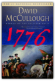
David McCullough
In this masterful book, David McCullough tells the intensely human story of those who marched with General George Washington in the year of the Declaration of Independence — when the whole American cause was riding on their success, without which all hope for independence would have been dashed and the noble ideals of the Declaration would have amounted to little more than words on paper.Based on extensive research in both American and British archives, 1776 is a powerful drama written with extraordinary narrative vitality. It is the story of Americans in the ranks, men of every shape, size, and color, farmers, schoolteachers, shoemakers, no-accounts, and mere boys turned soldiers. And it is the story of the King's men, the British commander, William Howe, and his highly disciplined redcoats who looked on their rebel foes with contempt and fought with a valor too little known. At the center of the drama, with Washington, are two young American patriots, who, at first, knew no more of war than what they had read in books — Nathanael Greene, a Quaker who was made a general at thirty-three, and Henry Knox, a twenty-five-year-old bookseller who had the preposterous idea of hauling the guns of Fort Ticonderoga overland to Boston in the dead of winter. But it is the American commander-in-chief who stands foremost — Washington, who had never before led an army in battle. Written as a companion work to his celebrated biography of John Adams, David McCullough's 1776 is another landmark in the literature of American history. The 4000-Footers of the White Mountains

About Face

In About Face, Leon returns to one of her signature subjects: the environment, which has reached a crisis in Italy. Incinerators across the south of Italy are at full capacity, burning who-knows-what and releasing unacceptable levels of dangerous air pollutants, while in Naples, enormous garbage piles grow in the streets. In Venice, with the polluted waters of the canals and a major chemical complex across the lagoon, the issue is never far from the fore. Environmental concerns become significant in Brunetti’s work when an investigator from the Carabiniere, looking into the illegal hauling of garbage, asks for a favor. But the investigator is not the only one with a special request. His father-in-law needs help and a mysterious woman comes into the picture. Brunetti soon finds himself in the middle of an investigation into murder and corruption more dangerous than anything he’s seen before. Advanced Engineering Mathematics

Advanced Organic Chemistry: Reactions and Mechanisms
Advanced Programming in the UNIX
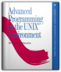
W. Richard Stevens
Bestselling UNIX author W. Richard Stevens offers application developers and system programmers his professional, experience-based guidance on using the system call interface with C. In the first half of the book, Stevens describes more than 200 system calls and functions with a brief example program following each description. Having provided the basics, Stevens moves on to chapter-long examples. The book is applicable to all major UNIX releases, especially System V Release 4-including Solaris 2-and 4.4 BSD, including 386 BSD.
Advanced Topics in Types and Programming Languages

Adventures in Medialand: Behind the News, Beyond the Pundits

Aeschylus I: Oresteia: Agamemnon, The Libation Bearers, The Eumenides

"This is it. No qualifications. Go out and buy it everybody."—Kenneth Rexroth, The Nation "The translations deliberately avoid the highly wrought and affectedly poetic; their idiom is contemporary....They have life and speed and suppleness of phrase."—Times Education Supplement "These translations belong to our time. A keen poetic sensibility repeatedly quickens them; and without this inner fire the most academically flawless rendering is dead."—Warren D. Anderson, American Oxonian "The critical commentaries and the versions themselves...are fresh, unpretentious, above all, functional."—Commonweal "Grene is one of the great translators."—Conor Cruise O'Brien, London Sunday Times "Richmond Lattimore is that rara avis in our age, the classical scholar who is at the same time an accomplished poet."—Dudley Fitts, New York Times Book Review After Thought: The Computer Challenge To Human Intelligence
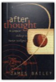
James Bailey
Through the first fifty years of the computer revolution, scientists have been trying to program electronic circuits to process information the same way humans do. Doing so has reassured us all that underlying every new computer capability, no matter how miraculously fast or complex, are human thought processes and logic. But cutting-edge computer scientists are coming to see that electronic circuits really are alien, that the difference between the human mind and computer capability is not merely one of degree (how fast), but of kind(how). The author suggests that computers “think” best when their “thoughts” are allowed to emerge from the interplay of millions of tiny operations all interacting with each other in parallel. Why then, if computers bring to the table such very different strengths and weaknesses, are we still trying to program them to think like humans? A work that ranges widely over the history of ideas from Galileo to Newton to Darwin yet is just as comfortable in the cutting-edge world of parallel processing that is at this very moment yielding a new form of intelligence, After Thought describes why the real computer age is just beginning.
The Age of Revolution: 1789-1848
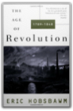
Eric Hobsbawm
This magisterial volume follows the death of ancient traditions, the triumph of new classes, and the emergence of new technologies, sciences, and ideologies, with vast intellectual daring and aphoristic elegance. Part of Eric Hobsbawm's epic four-volume history of the modern world, along with The Age of Capitalism, The Age of Empire, and The Age of Extremes.
Alfred Tarski: Life and Logic

All Quiet on the Western Front
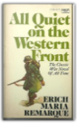
Erich Maria Remarque
All The President's Men

Alpine Climbing: Techniques to Take You Higher

AMC White Mountain Guide, 27th: Hiking Trails in the White Mountain National Forest

More than just trail descriptions, the 27th edition includes: *6 pull-out full-color maps created using GPS technology *distances, times, and elevations *trip planning *what to carry *campgrounds, huts, and shelters *fire regulations *backcountry hazards *White Mountain National Forest information *extensive information on Mt. Washington, New Hampshire's highest peak AMC's Best Backpacking in New England

Heid maximizes your wilderness experience by selecting loop hikes, conveniently eliminating the need to cross roads or shuttle a car. Overnight optionsincluding camp sites and lean-tosare also listed, as well as tips on safety and gear to better prepare you for a challenging and rewarding backcountry adventure. Anarchy, Protest, and Rebellion: And the Counterculture That Changed America
The Andromeda Strain
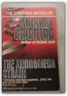
Michael Crichton
Animal Farm Publisher: Signet Classics; 50th Anniversary edition

Animal, Vegetable, Miracle: A Year of Food Life

"As the U.S. population made an unprecedented mad dash for the Sun Belt, one carload of us paddled against the tide, heading for the Promised Land where water falls from the sky and green stuff grows all around. We were about to begin the adventure of realigning our lives with our food chain. "Naturally, our first stop was to buy junk food and fossil fuel. . . ." Hang on for the ride: With characteristic poetry and pluck, Barbara Kingsolver and her family sweep readers along on their journey away from the industrial-food pipeline to a rural life in which they vow to buy only food raised in their own neighborhood, grow it themselves, or learn to live without it. Their good-humored search yields surprising discoveries about turkey sex life and overly zealous zucchini plants, en route to a food culture that's better for the neighborhood and also better on the table. Part memoir, part journalistic investigation, Animal, Vegetable, Miracle makes a passionate case for putting the kitchen back at the center of family life and diversified farms at the center of the American diet. "This is the story of a year in which we made every attempt to feed ourselves animals and vegetables whose provenance we really knew . . . and of how our family was changed by our first year of deliberately eating food produced from the same place where we worked, went to school, loved our neighbors, drank the water, and breathed the air." Annapurna

An Anthropologist On Mars: Seven Paradoxical Tales

Antony and Cleopatra
Appalachian Trail Guide to Maine

Arctic Chill: An Inspector Erlendur Novel

On an icy January day, the Reykjavik police are called to a block of apartments where a body has been found in the garden: a young, dark-skinned boy is frozen to the ground in a pool of blood. Erlendur and his team embark on their investigation and soon unearth tensions simmering beneath the surface of Iceland’s outwardly liberal, multicultural society. Meanwhile, the boy’s murder forces Erlendur to confront the tragedy in his own past. Master crime writer Arnaldur Indridason's Arctic Chill renders a vivid portrait of Iceland's brutal, little-known culture wars in a taut, fast-paced police procedural. Aristotle's Metaphysics

Aristotle's on the Soul
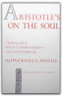
Aristotle
The Art and Craft of Teaching

Athletic Body in Balance

Physical therapist and sports conditioning expert Gray Cook has proven the effectiveness of his approach through the performances of athletes in the NFL, NBA, NHL, WNBA, and Reebok® University's sports training system. Cook's methods will help you identify functional weaknesses; correct imbalances; explore your potential; and refine sport-specific movement skills such as jumping, kicking, cutting, and turning. You will see where conditioning is breaking down and how to get your body back on track. Whereas other books concentrate on maximizing your strengths, Athletic Body in Balance focuses on exposing and overcoming your weaknesses to form a foundation for long-term training gains. Learn how to maintain what you gain and build on your improvements. Make this comprehensive assessment tool your training guide. Prepare and repair your body for ultimate athletic performance with Athletic Body in Balance. Attack of the Deranged Mutant Killer Monster Snow Goons

gocomics.com/calvinandhobbes/ The Autobiography of Malcolm X: As Told to Alex Haley

"Extraordinary. A brilliant, painful, important book." TEH NEW YORKTIMES The Bacchae of Euripides: A New Translation with a Critical Essay

The Balkans: Nationalism, War & the Great Powers, 1804-1999

Basic Rights
The Battle of Midway
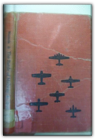
Irving Werstein
Be Cool
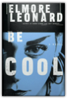
Elmore Leonard
New York Times bestselling author Elmore Leonard is back, and he's brought Get Shorty's Chili Palmer along for the ride. An unforgettable, hilarious, and spot-on insider's look at Hollywood as only Leonard could write it, Be Cool takes readers on a back-side tour of Tinseltown's other big business—the music industry.Chili Palmer's follow-up to his smash hit film Get Leo bombed, and in Hollywood, you're considered only as hot as your last project. Once again outside the system, Chili is exploring an idea for his third film by lunching with a former "associate" from his Brooklyn days who's now a record label executive. When lunch begins with iced tea and ends in a mob hit, Chili soon finds himself in an unlikely alliance with one of the LAPD's finest, Detective Darryl Holmes, and the very likely next target of Russian gangsters. With a hit man on his trail, Chili tries to pull together his next movie, the story of Linda Moon, a real-life singer with dreams that go further than her current gig with Chicks International, just doing Spice Girls songs. She's desperate to tear loose from her current manager, an erstwhile pimp named Raji. Orchestrating his movie as he goes along, Chili wrests the reins of Linda's singing career away from Raji, basing the plot of his new film on the action that unfolds as a result. As he fakes his way to success in the music business with his trademark aplomb, Chili manipulates his adversaries and advances his friends, showing all how to be cool when the heat's on. With his unique combination of the good, the bad, and the unexpected, Elmore Leonard has written a novel that twists and turns to the last page. From screen tests to rock sessions, from the Hills and the Valley to Hollywood and Vine, Be Cool is all new, all clever and, most definitely, all that. Beautiful Swimmers: Watermen, Crabs and the Chesapeake Bay
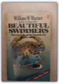
William W. Warner
"IN THE TRADIITON OF RACHEL CARSON'S THE EDGE OF THE SEA AND ANNIE DILLARD'S PILGRIM AT TINKER CREEK, WILLIAM W. WARNER'S BEAUTIFULSWIMMERS IS A BOOK THAT DELIGHTS AND INFORMS GENERAL READERS AND NATURALIST ALIKE; A COMPLETE BUT HUMANE NATURAL HISTORY OF THE PUGNACIOUS, SUCCULENT ATLANTIC BLUE CRAB WHICH, IN BOTH ITS HARD AND SOFT SHELL FORMS, GRACES MILLIONS OF AMERICAN TABLES; A STUDY OF THE CHESAPEAKE BAY—ITS HISTORY, ITS WINDS AND TIDES, ITS GRADATIONS OF DEPTH, TEMPERATURE AND SALINITY—WHICH PROVIDES MORE CRABS FOR HUMAN CONSUMPTION THAN ANY OTHER BODY OF WATER IN THE WORLD; AND A COLORFUL ACCOUNT OF THE WATERMEN WHO MAKE THEIR LIVING PURSUING THE BLUE CRAB." " CONTENTS.... THE BAY AUTUMN, DEAL ISLAND WINTER FOLLOW THE WATER BEAUTIFUL SWIMMER SPRING LESTER LEE AND THE CHICKEN NECKERS TO MARKET SUMMER AND SCRAPING THE ISLANDS, LOOKING AHEAD OUT MAIN BAY CRISFIELD AN AFTERWORD
Being Digital

Berlin in Panoramen.

The Best Democracy Money Can Buy: The Truth About Corporate Cons, Globalization and High-Finance Fraudsters

The Best Recipes in the World
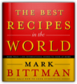
Mark Bittman
With his million-copy bestseller How to Cook Everything, Mark Bittman made the difficult doable. Now he makes the exotic accessible.In this highly ambitious, accomplished, globe-spanning work, Bittman gathers the best recipes that people from dozens of countries around the world cook every day. And when he brings his distinctive no-frills approach to dishes that were once considered esoteric, America's home cooks will eagerly follow where they once feared to tread. In more than a thousand recipes, Bittman compellingly demonstrates that there are many places besides Italy and France to which cooks can turn for inspiration. In addition to these favorites, he covers Spain, Portugal, Greece, Russia, Scandinavia, the Balkans, Germany, and other European destinations, giving us easy ways to make dishes like Spanish Mushroom and Chicken Paella, Greek Roast Leg of Lamb with Thyme and Orange, Russian Borscht, and Swedish Äppletorte. Asian food now rivals European cuisine’s popularity, and this book reflects that: It’s the first to emphasize European and Asian cuisines equally, with easy-to-follow recipes for favorites like Vietnamese Stir-Fried Vegetables with Nam Pla, Pad Thai, Japanese Salmon Teriyaki, Chinese Black Bean and Garlic Spareribs, and Indian Tandoori Chicken. Nor is the rest of the world ignored: there are hundreds of recipes from North Africa, the Middle East, and Central and South America, too. All will be hits with home cooks looking to add exciting new tastes and cosmopolitan flair to their everyday repertoire. Shop locally, cook globally–Mark Bittman makes it so easy: • Hundreds of recipes that can be made ahead or prepared in under 30 minutes • Informative sidebars and instructional drawings explain unfamiliar techniques and ingredients • Fifty-two international menus, an extensive International Pantry section, and much more make this an essential addition to any cook’s shelf The Best Recipes in the World is destined to be a classic that will change the way Americans think about everyday food. It’s simply like no other cookbook in the world. Beyond Numeracy

Bicycling Science

Big Trouble: A Murder in a Small Western Town Sets Off a Struggle for the Soul of America

J. Anthony Lukas, a masterful storyteller, tells a mesmerizing tale — of a terrible murder, a great trial, and the struggle they set off for the soul of America. Big Trouble begins on a snowy evening at Christmas time 1905 in the little town of Caldwell, Idaho, to which the state's former governor, Frank Steunenberg, had returned to head his family bank while contemplating his political future. As he walked home that night, he sensed all about him the bold, exuberant, unashamedly acquisitive spirit of Caldwell's young entrepreneurs, who — as his brother had written — were "here for the money." Like so many in the West at that time, these brothers believed their prospects for enriching themselves were limitless, that the future opened wide before them. ANd yet the governor suffered premonitions that he and his neighbors weren't fully in control of their own destiny, that something malign threatened their well-being. Now, as he followed the plume of his frozen breath, his boots crunching eight inches of freshly frozen snow, he turned through his garden gate and a bomb attached to the gatepost blew him "into eternity." Biological Physics: Energy, Information, Life

Bison
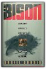
Daniel Granin
Blade Runner
Blitzkreig;: The long armistice to the fall of France
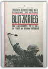
Abraham Rothberg
Blood from a Stone

Blood River: A Journey to Africa's Broken Heart

The Book of Lost Tales 1

The Book of Lost Tales, Part Two
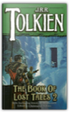
J.R.R. Tolkien
This second part of THE BOOK OF LOST TALES includes the tale of Beneren and Luthien, Turin and the Dragon, Necklace of the Dwarves, and the Fall of Gondolin. Each tale is followed by a commentary in the form of a short essay, together with the texts of associated poems, as well as information on names and vocabulary in the earliest Elvish languages.
The Bookman's Wake
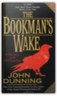
John Dunning
Denver cop-turned-bookdealer Cliff Janeway is lured by an enterprising fellow ex-policeman into going to Seattle to bring back a fugitive wanted for assault, burglary, and the possible theft of a priceless edition of Edgar Allan Poe's "The Raven." The bail jumper turns out to be a vulnerable young woman calling herself Eleanor Rigby, who is also a gifted book finder.Janeway is intrigued by the woman — and by the deadly history surrounding the rare volume. Hunted by people willing to kill for the antique tome, a terrified Eleanor escapes and disappears. To find her — and save her — Janeway must unravel the secrets of the book's past and its mysterious maker, for only then can he stop the hand of death from turning another page.... The Bookwoman's Last Fling
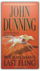
John Dunning
In another enthralling bestseller by "master yarn spinner" (Chicago Sun-Times) John Dunning, rare book dealer and relentless private eye Cliff Janeway unravels a deadly plot marked by stolen classics and stable secrets.When wealthy horse trainer H. R. Geiger dies, Denver bookman Cliff Janeway encounters the legacy of the man's wife, Candice, a true bookwoman who left behind an assortment of rare first-edition children's books. Sent to assess the collection, Janeway soon finds that several titles are missing, replaced by cheap reprints — while other hugely expensive pieces remain. Why would a thief take one priceless book and leave an equally valuable volume on the shelf? Suspecting foul play, Janeway follows the trail of Candice's shadowy past to California's Golden Gate and Santa Anita racetracks, where he signs on as a racehorse hot walker. Eavesdropping on the chatter among the hands, he doesn't like what he hears. And when he goes to the house where Candice died to look for answers, Janeway finds much more than he bargained for. The Botany of Desire: A Plant's-Eye View of the World

Every schoolchild learns about the mutually beneficial dance of honeybees and flowers: The bee collects nectar and pollen to make honey and, in the process, spreads the flowers’ genes far and wide. In The Botany of Desire, Michael Pollan ingeniously demonstrates how people and domesticated plants have formed a similarly reciprocal relationship. He masterfully links four fundamental human desires—sweetness, beauty, intoxication, and control—with the plants that satisfy them: the apple, the tulip, marijuana, and the potato. In telling the stories of four familiar species, Pollan illustrates how the plants have evolved to satisfy humankind’s most basic yearnings. And just as we’ve benefited from these plants, we have also done well by them. So who is really domesticating whom? Brave New World

"Mr. Huxley is eloquent in his declaration of an artist's faith in man, and it is his eloquence, bitter in attack, noble in defense, that, when one has closed the book, one remembers." —Saturday Review of Literature "A Fantastic racy narrative, full of much excellent satire and literary horseplay." —Forum "It is as sparkling, provocative, as brilliant, in the appropriate sense, as impressive ads the day it was published. This is in part because its prophetic voice has remained surprisingly contemporary, both in its particular forecasts and in its general tone of semiserious alarm. But it is much more because the book succeeds as a work of art...This is surely Huxley's best book." —Martin Green A Brief History of Time: From the Big Bang to Black Holes

The Brothers Lionheart
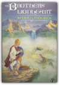
Astrid Lindgren
Two brothers share many adventures after their death when they are reunited in Nangiyala, the land where sagas come from.
Buddhism: A Very Short Introduction
About the Series: Oxford's Very Short Introductions series offers concise and original introductions to a wide range of subjects—from Islam to Sociology, Politics to Classics, Literary Theory to History, and Archaeology to the Bible. Not simply a textbook of definitions, each volume in this series provides trenchant and provocative—yet always balanced and complete—discussions of the central issues in a given discipline or field. Every Very Short Introduction gives a readable evolution of the subject in question, demonstrating how the subject has developed and how it has influenced society. Eventually, the series will encompass every major academic discipline, offering all students an accessible and abundant reference library. Whatever the area of study that one deems important or appealing, whatever the topic that fascinates the general reader, the Very Short Introductions series has a handy and affordable guide that will likely prove indispensable. Bury the Chains: Prophets and Rebels in the Fight to Free an Empire's Slaves
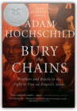
Adam Hochschild
From the author of the widely acclaimed King Leopold's Ghost comes the taut, gripping account of one of the most brilliantly organized social justice campaigns in history — the fight to free the slaves of the British Empire. In early 1787, twelve men — a printer, a lawyer, a clergyman, and others united by their hatred of slavery — came together in a London printing shop and began the world's first grass-roots movement, battling for the rights of people on another continent. Masterfully stoking public opinion, the movement's leaders pioneered a variety of techniques that have been adopted by citizens' movements ever since, from consumer boycotts to wall posters and lapel buttons to celebrity endorsements. A deft chronicle of this groundbreaking antislavery crusade and its powerful enemies, Bury the Chains gives a little-celebrated human rights watershed its due at last.
C Programming Language

The C++ Programming Language: Special Edition

Written by Bjarne Stroustrup, the creator of C++, this is the world's most trusted and widely read book on C++. For this special hardcover edition, two new appendixes on locales and standard library exception safety (also available at www.research.att.com/~bs/) have been added. The result is complete, authoritative coverage of the C++ language, its standard library, and key design techniques. Based on the ANSI/ISO C++ standard, The C++ Programming Language provides current and comprehensive coverage of all C++ language features and standard library components. For example:abstract classes as interfacesclass hierarchies for object-oriented programmingtemplates as the basis for type-safe generic softwareexceptions for regular error handlingnamespaces for modularity in large-scale softwarerun-time type identification for loosely coupled systemsthe C subset of C++ for C compatibility and system-level workstandard containers and algorithmsstandard strings, I/O streams, and numericsC compatibility, internationalization, and exception safetyBjarne Stroustrup makes C++ even more accessible to those new to the language, while adding advanced information and techniques that even expert C++ programmers will find invaluable. Calculus
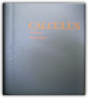
Michael Spivak
THIS IS OUT OF PRINT!!!!!You should stop telling people that you will send copies when available. Only the new 0914098911 will be available, starting July16. Calculus Two: Linear and Nonlinear Functions
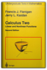
Francis J. Flanigan, Jerry L. Kazdan, David L. Frank, Bert E. Fristedt, Lawrence F. Gray
Calculus and linear algebra are two dominant themes in contemporary mathematics and its applications. The aim of this book is to introduce linear algebra in an intuitive geometric setting as the study of linear maps and to use these simpler linear functions to study more complicated nonlinear functions. In this way, many of the ideas, techniques, and formulas in the calculus of several variables are clarified and understood in a more conceptual way. After using this text a student should be well prepared for subsequent advanced courses in both algebra and linear differential equations as well as the many applications where linearity and its interplay with nonlinearity are significant. This second edition has been revised to clarify the concepts. Many exercises and illustrations have been included to make the text more usable for students.
The Call of the Wild

Calvin and Hobbes
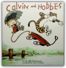
Bill Watterson
Online:gocomics.com/calvinandhobbes/ The Calvin and Hobbes Tenth Anniversary Book

Many moons ago, the magic of Calvin and Hobbes first appeared on the funny pages and the world was introduced to a wondrous pair of friends — a boy and his tiger, who brought new life to the comics page. To celebrate the tenth anniversary of this distinguished partnership, Bill Watterson prepared this special book, sharing his thoughts on cartooning and creating Calvin and Hobbes, illustrated throughout with favorite black-and-white and color cartoons. Calvin and Hobbes' Lazy Sunday Book: A Collection of Sunday Calvin and Hobbes Cartoons

Calvin and Hobbes: Sunday Pages 1985-1995

Everyone misses Calvin and Hobbes. It reinvented the newspaper comic strip at a time when many had all but buried the funnies as a vehicle for fresh, creative work. Then Bill Watterson came along and reminded a new generation of what older readers and comic strip aficionados knew: A well-written and beautifully drawn strip is an intricate, powerful form of communication. And with Calvin and Hobbes, we had fun—just like readers of Krazy Kat and Pogo did. Opening the newspaper each day was an adventure. The heights of Watterson's creative imagination took us places we had never been. We miss that. This book was published in conjunction with the first exhibition of original Calvin and Hobbes Sunday pages at The Ohio State University Cartoon Research Library. Although the work was created for reproduction, not for gallery display, was a pleasure to see the cartoonist's carefully placed lines and exquisite brush strokes. In an attempt to share this experience with those who were unable to visit the exhibition, all of the original Sunday pages displayed are reproduced in color in this book so that every detail, such as sketch lines, corrections, and registration marks, are visible. On the opposite page the same comic strip is printed in full color. Because Watterson was unusually intentional and creative in his use of color, this juxtaposition provides Calvin and Hobbes readers the opportunity to consider the impact of color on its narrative and content. When I first contacted Bill Watterson about the possibility of exhibiting his original work, I used the term "retrospective." He replied that we might be able to do an exhibit, but that calling it a retrospective made him uncomfortable. He felt that a longer time was needed to put Calvin and Hobbes in the historical perspective implied by that term. Nonetheless, this show is a "look back" at the comic strip as we revisit favorites that we remember. Calvin and Hobbes: Sunday Pages 1985-1995 is particularly interesting because each work that is included was selected by Bill Watterson. His comments about the thirty-six Sunday pages he chose are part of this volume. In addition, he reflects on Calvin and Hobbes from the perspective of six years, and his essay provides insights into his life as a syndicated cartoonist. Reprint books of Calvin and Hobbes are nice to have, but the opportunity to see the original work and read Bill Watterson's thoughts about it is a privilege. He generously shared not only the art, but also his time and his thoughts. When I first reviewed the works included in the exhibit, I knew that everyone who visited it would begin with laughter and end with tears. On behalf of all who enjoyed Calvin and Hobbes, thank you, Bill Watterson. —Lucy Shelton Caswell, Professor and Curator The Ohio State University Cartoon Research Library, June 2001 The Cambridge Dictionary of Philosophy
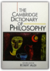
Robert Audi
This is the most authoritative and comprehensive one-volume dictionary of philosophy available in English. It contains over 4,000 entries, which range in length from 100 to 4,000 words. The Dictionary has been written by an international team of over 350 experts, so, rather than offering the limited perspective of a single writer, it distils the collective knowledge of the professional community of philosophers in an accessible manner.The Cambridge Dictionary clearly and concisely defines both technical terms and crucial concepts, and will promote the understanding of philosophy on all levels and across all fields. It includes substantial explanatory articles on all major philosophers as well as hundreds of minor figures. There are expansive, up-to-date overviews of all the important sub-disciplines such as ethics, epistemology, metaphysics, philosophy of mind and logic. No other reference work on philosophy contains so many entries on related subjects such as cognitive science, linguistics, theology, law, history of science and literature.
Capital - A Critique of Political Economy: Volume 1-The Process of Capitalist Production

Castle

The Cathedral and the Bazaar: Musings on Linux and Open Source by an Accidental Revolutionary
It all started with a series of odd statistics. The leading challenger to Microsoft's stranglehold on the computer industry is an operating system called Linux, the product of thousands of volunteer programmers who collaborate over the Internet. The software behind a majority of all the world's web sites doesn't come from a big company either, but from a loosely coordinated group of volunteer programmers called the Apache Group. The Internet itself, and much of its core software, was developed through a process of networked collaboration. The key to these stunning successes is a movement that has come to be called open source, because it depends on the ability of programmers to freely share their program source code so that others can improve it. In 1997, Eric S. Raymond outlined the core principles of this movement in a manifesto called "The Cathedral and the Bazaar," which was published and freely redistributed over the Internet. Mr. Raymond's thinking electrified the computer industry. He argues that the development of the Linux operating system by a loose confederation of thousands of programmers—without central project management or control—turns on its head everything we thought we knew about software project management. Internet-enabled collaboration and free information sharing, not monopolistic control, is the key to innovation and product quality. This idea was interesting to more than programmers and software project leaders. It suggested a whole new way of doing business, and the possibility of unprecedented shifts in the power structures of the computer industry. The rush to capitalize on the idea of open source started with Netscape's decision to release its flagship Netscape Navigator product under open source licensing terms in early 1998. Before long, Fortune 500 companies like Intel, IBM, and Oracle were joining the party. By August 1999, when the leading Linux distributor, Red Hat Software, made its hugely successful public stock offering, it had become clear that open source was "the next big thing" in the computer industry. This revolutionary book starts out with "A Brief History of Hackerdom"—the historical roots of the open-source movement—and details the events that led to the recognition of the power of open source. It contains the full text of "The Cathedral & the Bazaar," updated and expanded for this book, plus Mr. Raymond's other key essays on the social and economic dynamics of open source software development. Open source is the competitive advantage in the Internet Age. The Cathedral & the Bazaar is a must for anyone who cares about the computer industry or the dynamics of the information economy. Already, billions of dollars have been made and lost based on the ideas in this book. Its conclusions will be studied, debated, and implemented for years to come. Chemical Kinetics and Reaction Dynamics
Chemistry
The Chess Garden: Or the Twilight Letters of Gustav Uyterhoeven
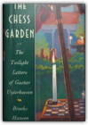
Brooks Hansen
An exotic, spiritual tale combines elements of memoir and parable, in a collection of twelve letters sent with chess pieces to his wife Sonja by Dr. Gustav Uyterhoeven while serving as a doctor in the Boer War concentration camps in South Africa. 25,000 first printing.
Children of Dune

But there are those who think the Imperium does not need messiahs... The Children of Hurin

China beyond the Headlines
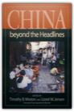
Timothy B. Weston, Lionel M. Jensen
This unique book takes the reader Obeyond the headlinesO to explore a China few Westerners have seen. The authors argue that the great gap between what specialists understand and the general public believes has led to distorted and potentially dangerous misunderstandings of China. Seeking to bridge that gap, a group of prominent scholars and activists challenge readers to move past the usual images of China presented by the media and to think about the common problems shared by China and the United States. In a morally engaged spirit, they explore such issues as environmental degradation, unemployment, growing inequality, ethnicity, human rights, corruption, and changing images of women to bring to life the fabric of contemporary Chinese life and how it twines around the political consciousness of Americans.
China's Response to the West: A Documentary Survey, 1839-1923

This volume gives the first inside account, on so broad a scale, of how China's leaders reacted to the invasion of Western arms and goods, persons and ideas, during the three generations from the Opium War to the rise of the Kuomintang. In 28 chapters, with translations of 65 key documents, the authors trace the stages by which the scholar-officials of the Middle Kingdom were brought to recognize successively the need for Western arms to defend their country, Western technology for making arms, modern science to support technology, its application in modern industry to strengthen the nation, and all the attendant new ideas which led them eventually into great movements for institutional reform, political revolution, and ideological reconstruction. From the famous Commissioner un's first study of Western geography during his anti-opium crusade, through the efforts of Li Hungchang and others at "self-strengthening" by industrialization, down to the critical thought of Dr. Hu Shih and the eclecticism of Sun Yat-sen in the early 20th century, the writings of China's leaders ring the changes on a central theme how to remake their heritage and create a modern nation capable of meeting the West on equal terms. The provincial viceroys, the Reformers of 1898, the Boxers in 1900, the old Empress Dowager, and the eager students studying abroad, each in their own way, all grapple with this absorbing problem. The varied Chinese responses to the West in the formative century here analyzed give us a new insight into the springs of social action among one-fifth of mankind. The companion volume, for the research specialist, provides Notes and Sources, Bibliography, and a Glossary of Chinese names and terms, essential bases for further exploration of this new field. China: A New History

City: A Story of Roman Planning and Construction

Clabbered Dirt, Sweet Grass

Classical Thought

Cod: A Biography of the Fish That Changed the World
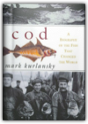
Mark Kurlansky
The codfish. Wars have been fought over it, revolutions have been spurred by it, national diets have been based on it, economies and livelihoods have depended on it, and the settlement of North America was driven by it. To the millions it has sustained, it has been a treasure more precious than gold. Indeed, the codfish has played a fascinating and crucial role in world history.Cod spans a thousand years and four continents. From the Vikings, who pursued the codfish across the Atlantic, and the enigmatic Basques, who first commercialized it in medieval times, to Bartholomew Gosnold, who named Cape Cod in 1602, and Clarence Birdseye, who founded an industry on frozen cod in the 1930s, Mark Kurlansky introduces the explorers, merchants, writers, chefs, and of course the fishermen, whose lives have interwoven with this prolific fish. He chronicles the fifteenth-century politics of the Hanseatic League and the cod wars of the sixteenth and twentieth centuries. He embellishes his story with gastronomic detail, blending in recipes and lore from the Middle Ages to the present. And he brings to life the cod itself: its personality, habits, extended family, and ultimately the tragedy of how the most profitable fish in history is today faced with extinction. From fishing ports in New England and Newfoundland to coastal skiffs, schooners, and factory ships across the Atlantic; from Iceland and Scandinavia to the coasts of England, Brazil, and West Africa, Mark Kurlansky tells a story that brings world history and human passions into captivating focus. The Code Book: The Evolution of Secrecy from Mary, Queen of Scots to Quantum Cryptography
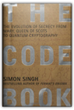
Simon Singh
Codes have decided the fates of empires, countries, and monarchies throughout recorded history. Mary, Queen of Scots was put to death by her cousin, Queen Elizabeth, for the high crime of treason after spymaster Sir Francis Walsingham cracked the secret code she used to communicate with her conspirators. And thus the course of British history was altered by a few sheets of cryptic prose. This is just one link in humankind's evolutionary chain of secret communication, and just one of the fascinating incidents recounted in The Code Book, written by bestselling author Simon Singh.Combining a superb storyteller's sense of drama and a scientist's appreciation for technical perfection, Singh traces the evolution of secret writing from ancient Greek military espionage to the frontiers of computer science. The result is an epic tale of human ingenuity, with examples that range from the poignant to the peculiar to the world-historical. There is the case of the Beale ciphers, which involves Wild West escapades, a cowboy who amassed a vast fortune, a buried treasure worth $20 million, and a mysterious set of encrypted papers describing its whereabouts—papers that have baffled generations of cryptanalysts and captivated hundreds of treasure hunters. A speedier end to a bloody war was the only reward that could be promised to the Allied code breakers of World Wars I and II, whose selfless contributions altered the course of history; but few of them lived to receive any credit for their top-secret accomplishments. Among the most moving of these stories is that of the World War II British code breaker Alan Turing, who gave up a brilliant career in mathematics to devote himself to the Allied cause, only to end his years punished by the state for his homosexuality, while his heroism was ignored. No less heroic were the Navajo code talkers, who volunteered without hesitation to risk their lives for the Allied forces in the Japanese theater, where they were routinely mistaken for the enemy. Interspersed with these gripping stories are clear mathematical, linguistic, and technological demonstrations of codes, as well as illustrations of the remarkable personalities—many courageous, some villainous, and all obsessive—who wrote and broke them. All roads lead to the present day, in which the possibility of a truly unbreakable code looms large. Singh explores this possibility, and the ramifications of our increasing need for privacy, even as it begins to chafe against the stated mission of the powerful and deeply secretive National Security Agency. Entertaining, compelling, and remarkably far-reaching, this is a book that will forever alter your view of history, what drives it, and how private that e-mail you just sent really is. Included in the book is a worldwide Cipher Challenge—a $15,000 award will be given by the author to the first reader who cracks the code successfully. Progress toward the solution will be tracked on The Code Book website. Coders at Work: Reflections on the Craft of Programming
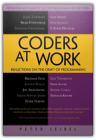
Peter Seibel
Peter Seibel interviews 15 of the most interesting computer programmers alive today in Coders at Work, offering a companion volume to Apress’s highly acclaimed best-seller Founders at Work by Jessica Livingston. As the words “at work” suggest, Peter Seibel focuses on how his interviewees tackle the day-to-day work of programming, while revealing much more, like how they became great programmers, how they recognize programming talent in others, and what kinds of problems they find most interesting.Hundreds of people have suggested names of programmers to interview on the Coders at Work web site: www.codersatwork.com. The complete list was 284 names. Having digested everyone’s feedback, we selected 15 folks who’ve been kind enough to agree to be interviewed: Frances Allen: Pioneer in optimizing compilers, first woman to win the Turing Award (2006) and first female IBM fellowJoe Armstrong: Inventor of ErlangJoshua Bloch: Author of the Java collections framework, now at GoogleBernie Cosell: One of the main software guys behind the original ARPANET IMPs and a master debuggerDouglas Crockford: JSON founder, JavaScript architect at Yahoo!L. Peter Deutsch: Author of Ghostscript, implementer of Smalltalk-80 at Xerox PARC and Lisp 1.5 on PDP-1Brendan Eich: Inventor of JavaScript, CTO of the Mozilla CorporationBrad Fitzpatrick: Writer of LiveJournal, OpenID, memcached, and PerlbalDan Ingalls: Smalltalk implementor and designerSimon Peyton Jones: Coinventor of Haskell and lead designer of Glasgow Haskell CompilerDonald Knuth: Author of The Art of Computer Programming and creator of TeXPeter Norvig: Director of Research at Google and author of the standard text on AIGuy Steele: Coinventor of Scheme and part of the Common Lisp Gang of Five, currently working on FortressKen Thompson: Inventor of UNIXJamie Zawinski: Author of XEmacs and early Netscape/Mozilla hackerWhat you’ll learn How the best programmers in the world do their jobs!Who this book is for Programmers interested in the point of view of leaders in the field. Programmers looking for approaches that work for some of these outstanding programmers. Table of Contents Jamie ZawinskiBrad FitzpatrickDouglas CrockfordBrendan EichJoshua BlochJoe ArmstrongSimon Peyton JonesPeter NorvigGuy SteeleDan IngallsL Peter DeutschKen ThompsonFran AllenBernie CosellDonald Knuth The Color of Water: A Black Man's Tribute to His White Mother
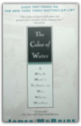
James McBride
James McBride grew up one of twelve siblings in the all-black housing projects of Red Hook, Brooklyn, the son of a black minister and a woman who would not admit she was white. The object of McBride's constant embarrassment and continuous fear for her safety, his mother was an inspiring figure, who through sheer force of will saw her dozen children through college, and many through graduate school. McBride was an adult before he discovered the truth about his mother: The daughter of a failed itinerant Orthodox rabbi in rural Virginia, she had run away to Harlem, married a black man, and founded an all-black Baptist church in her living room in Red Hook. In her son's remarkable memoir, she tells in her own words the story of her past. Around her narrative, James McBride has written a powerful portrait of growing up, a meditation on race and identity, and a poignant, beautifully crafted hymn from a son to his mother.
Coming of Age: The Story of Our Century by Those Who'Ve Lived It
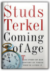
Studs Terkel
Arguably the century's most gifted chronicler of what Americans really think, Studs Terkel has been called "a national resource. . . who gets to the deeper heart of our history and our national life" by John Kenneth Galbraith. Terkel's widely praised, best-selling books Hard Times, Working, Race, and the Pulitzer Prize-winning "The Good War" probe the innermost attitudes in this country toward the Great Depression, work, race, and World War II.
Common Sense in Chess
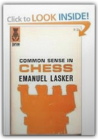
Emanuel ; Reinfeld, Fred Lasker
Common Sense in Chess [Paperback] Emanuel ; Reinfeld, Fred Lasker (Author) Publisher: David McKay; Edition and Printing Not Stated edition (1964)
Compilers: Principles, Techniques, and Tools

The Complete Persepolis

Persepolis is the story of Satrapi's unforgettable childhood and coming of age within a large and loving family in Tehran during the Islamic Revolution; of the contradictions between private life and public life in a country plagued by political upheaval; of her high school years in Vienna facing the trials of adolescence far from her family; of her homecoming—both sweet and terrible; and, finally, of her self-imposed exile from her beloved homeland. It is the chronicle of a girlhood and adolescence at once outrageous and familiar, a young life entwined with the history of her country yet filled with the universal trials and joys of growing up. Edgy, searingly observant, and candid, often heartbreaking but threaded throughout with raw humor and hard-earned wisdom—Persepolis is a stunning work from one of the most highly regarded, singularly talented graphic artists at work today. The Complete Walker IV
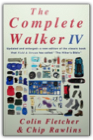
Colin Fletcher, Chip Rawlins
For the first time since 1984, we have a new edition of the classic book that Field & Stream called “the Hiker’s Bible.” For this version, the celebrated writer and hiker Colin Fletcher has taken on a coauthor, Chip Rawlins, himself an avid outdoorsman and a poet from Wyoming. Together, they have made this fourth edition of The Complete Walker the most informative, entertaining, and thorough version yet.The eighteen years since the publication of The Complete Walker III have seen revolutionary changes in hiking and camping equipment: developments in waterproofing technology, smaller and more durable stoves, lighter boots, more manageable tents, and a wider array of food options. The equipment recommendations are therefore not merely revised and tweaked, but completely revamped. During these two decades we have also seen a deepening of environmental consciousness. Not only has backpacking become more popular, but a whole ethic of responsible outdoorsmanship has emerged. In this book the authors confidently lead us through these technological, ethical, and spiritual changes. Fletcher and Rawlins’s thorough appraisal and recommendation of equipment begins with a “Ground Plan,” a discussion of general hiking preparedness. How much to bring? What are the ideal clothes, food, boots, and tents for your trip? They evaluate each of these variables in detail—including open, honest critiques and endorsements of brand-name equipment. Their equipment searches are exhaustive; they talk in detail about everything from socks to freeze-dried trail curries. They end as they began, with a philosophical and literary disquisition on the reasons to walk, capped off with a delightful collection of quotes about walking and the outdoor life. After a thoughtful and painstaking analysis of hiking gear from hats to boots, from longjohns to tent flaps, they remind us that ultimately hiking is about the experience of being outdoors and seeing the green world anew. Like its predecessors, The Complete Walker IV is an essential purchase for anyone captivated by the outdoor life. From the Hardcover edition. Component Software: Beyond Object-Oriented Programming

Computability and Complexity Theory
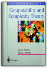
Steven Homer, Alan L. Selman
Intended for use in an introductory graduate course in theoretical computer science, this text contains material that should be core knowledge in the theory of computation for all graduates in computer science. It is self-contained and is best suited for a one semester course. The text starts with classical computability theory which forms the basis for complexity theory. This has the pedagogical advantage that students learn a qualitative subject before advancing to a quantitative one. Since this is a graduate course, students should have some knowledge of such topics as automata theory, formal languages, computability theory, or complexity theory.
Computer Architecture: A Quantitative Approach, Second Edition
Computer Architecture: A Quantitative Approach was the first book to focus on computer architecture as a modern science. Its publication in 1990 inspired a new approach to studying and understanding computer design. Now, the second edition explores the next generation of architectures and design techniques with view to the future. A basis for modern computer architecture As the authors explain in their preface to the Second Edition, computer architecture itself has undergone significant change since 1990. Concentrating on currently predominant and emerging commercial systems, the Hennessy and Patterson have prepared entirely new chapters covering additional advanced topics: * Advanced Pipelining: A new chapter emphasizes superscalar and multiple issues. * Networks: A new chapter examines in depth the design issues for small and large shared-memory multiprocessors. * Storage Systems: Expanded presentation includes coverage of I/O performance measures. * Memory: Expanded coverage of caches and memory-hierarchy design addresses contemporary design issues. * Examples and Exercises: Completely revised on current architectures such as MIPS R4000, Intel 80x86 and Pentium, PowerPC, and HP PA-RISC. Distinctive presentation This book continues the style of the first edition, with revised sections on Fallacies and Pitfalls, Putting It All Together and Historical Perspective, and contains entirely new sections on Crosscutting Issues. The focus on fundamental techniques for designing real machines and the attention to maximizing cost/performance are crucial to both students and working professionals. Anyone involved in building computers, from palmtops to supercomputers, will profit from the expertise offered by Hennessy and Patterson. Computer Networks

Conspiracy of Fools: A True Story

The Control Revolution: How the Internet is Putting Individuals in Charge and Changing the World We Know

Conversations of Socrates

The Core Performance: The Revolutionary Workout Program to Transform Your Body & Your Life
The intense focus on the muscles of your core—abs, lower back, hips, and thighs—will help you stand taller and prevent the back pain from which most people eventually suffer. The detailed nutrition section guarantees that you'll feed your muscles, starve your fat, and get boundless energy when you need it most. This program is like nothing you've ever seen before—it enables you to totally transform your body in just 12 weeks. The potential is within you, and the power to unleash that potential is within Core Performance. Crashing the Gate: Netroots, Grassroots, and the Rise of People-Powered Politics
This book lays bare, with passion and precision, how ineffective, incompetent, and antiquated the Democratic Party establishment has become, and how it has failed to adapt and respond to new realities and challenges. The authors save their sharpest knives to go for the jugular in their critique of Republican ideologues who are now running—and ruining—our country. Written by two of the most popular political bloggers in America, the book hails the new movement—of the netroots, the grassroots, the unorthodox labor unions, the maverick big donors—that is the antidote to old-school politics as usual. Fueled by advances in technology and a hunger for a more authentic and populist democracy, this broad-based movement is changing the way political campaigns are waged and managed. A must-read book for anyone with an interest in the future of American democracy. Cratylus
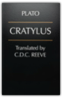
Plato, C. D. C. Reeve
The Cratylus, Plato's sole dialogue devoted to the relation between language and reality, is acknowledged to be one of his masterpieces. But owing to its often enigmatic content no more than a handful of passages from it have played a part in the global evaluation of Plato's philosophy. This new English translation by C D C Reeve is the first since 1926, and incomparably the most helpful and accessible now available. It opens up the Cratylus to all philosophically interested readers, as well as to cultural historians and to those whose primary concern is the history of linguistics. The full and lucid introduction does much to illuminate the internal dynamic of this important text and to explain its place within Plato's oeuvre.
Crooked Paths to Allotment: The Fight over Federal Indian Policy after the Civil War

Genetin-Pilawa focuses on reformers and activists, including Tonawanda Seneca Ely S. Parker and Council Fire editor Thomas A. Bland, whose contributions to Indian policy debates have heretofore been underappreciated. He reveals how these men and their allies opposed such policies as forced land allotment, the elimination of traditional cultural practices, mandatory boarding school education for Indian youth, and compulsory participation in the market economy. Although the mainstream supporters of assimilation successfully repressed these efforts, the ideas and policy frameworks they espoused established a tradition of dissent against disruptive colonial governance. Crusade Against Slavery, 1830-1860

Contrary to popular belief, the anti-slavery movement was far from united. It included abolitionists as well as a variety of reformers whose activities place them among the anti-slavery forces. These included men as different in background and temperament as William Lloyd Garrison and John Quincy Adams. Portraits of the many protagonists, their hardships, and their quarrels with Southerners and Northerners alike, bring to life this exciting and tumultuous period. Filler also examines the many related reform movements that characterized the period: feminism, spiritualism, utopian societies, and educational reform. The volume traces the relationship of the antislavery movement to abolition and probes their connection with the several reforms that dominated the period. He brilliantly recaptures a sense of the contemporary consequences of the reformers efforts. This is an absorbing and important survey of the problems—political, social, and economic—that made this period so crucial in the history of the U.S. Cryptonomicon

In 1942, Lawrence Pritchard Waterhouse—mathematical genius and young Captain in the U.S. Navy—is assigned to detachment 2702. It is an outfit so secret that only a handful of people know it exists, and some of those people have names like Churchill and Roosevelt. The mission of Waterhouse and Detachment 2702—commanded by Marine Raider Bobby Shaftoe-is to keep the Nazis ignorant of the fact that Allied Intelligence has cracked the enemy's fabled Enigma code. It is a game, a cryptographic chess match between Waterhouse and his German counterpart, translated into action by the gung-ho Shaftoe and his forces. Fast-forward to the present, where Waterhouse's crypto-hacker grandson, Randy, is attempting to create a "data haven" in Southeast Asia—a place where encrypted data can be stored and exchanged free of repression and scrutiny. As governments and multinationals attack the endeavor, Randy joins forces with Shaftoe's tough-as-nails granddaughter, Amy, to secretly salvage a sunken Nazi submarine that holds the key to keeping the dream of a data haven afloat. But soon their scheme brings to light a massive conspiracy with its roots in Detachment 2702 linked to an unbreakable Nazi code called Arethusa. And it will represent the path to unimaginable riches and a future of personal and digital liberty...or to universal totalitarianism reborn. A breathtaking tour de force, and Neal Stephenson's most accomplished and affecting work to date, Cryptonomicon is profound and prophetic, hypnotic and hyper-driven, as it leaps forward and back between World War II and the World Wide Web, hinting all the while at a dark day-after-tomorrow. It is a work of great art, thought and creative daring; the product of a truly iconoclastic imagination working with white-hot intensity. Daily Bread
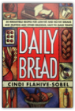
Cindi Flahive-Sobel
Fresh bread every day? A phenomenally successful baker shares her simple, satisfying recipes, along with her home-grown success story. The wonderful collection includes more than 50 recipes for yeast and quick breads, muffins, scones and other treats, many low in fat.
The Dance of Intimacy

Dancing in the Streets: A History of Collective Joy

Drawing on a wealth of history and anthropology, Barbara Ehrenreich uncovers the origins of communal celebration in human biology and culture. From the earliest orgiastic Mesopotamian rites to the medieval practice of Christianity as a "danced religion" and the transgressive freedoms of carnival, she demonstrates that mass festivities have long been central to the Western tradition. In recent centuries, this festive tradition has been repressed, cruelly and often bloodily. But as Ehrenreich argues in this original, exhilarating, and ultimately optimistic book, the celebratory impulse is too deeply ingrained in human nature ever to be completely extinguished. Daphnis and Chloe
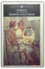
Longus
This is an EXACT reproduction of a book published before 1923. This IS NOT an OCR'd book with strange characters, introduced typographical errors, and jumbled words. This book may have occasional imperfections such as missing or blurred pages, poor pictures, errant marks, etc. that were either part of the original artifact, or were introduced by the scanning process. We believe this work is culturally important, and despite the imperfections, have elected to bring it back into print as part of our continuing commitment to the preservation of printed works worldwide. We appreciate your understanding of the imperfections in the preservation process, and hope you enjoy this valuable book.
The Dark Side: The Inside Story of How The War on Terror Turned into a War on American Ideals
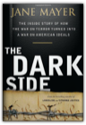
Jane Mayer
A dramatic and damning narrative account of how America has fought the"War on Terror" In the days immediately following September 11th, the most powerful people in the country were panic-stricken. The radical decisions about how to combat terrorists and strengthen national security were made in a state of utter chaos and fear, but the key players, Vice President Dick Cheney and his powerful, secretive adviser David Addington, used the crisis to further a long held agenda to enhance Presidential powers to a degree never known in U.S. history, and obliterate Constitutional protections that define the very essence of the American experiment. THE DARK SIDE is a dramatic, riveting, and definitive narrative account of how the United States made terrible decisions in the pursuit of terrorists around the world— decisions that not only violated the Constitution to which White House officials took an oath to uphold, but also hampered the pursuit of Al Qaeda. In gripping detail, acclaimed New Yorker writer and bestselling author, Jane Mayer, relates the impact of these decisions—U.S.-held prisoners, some of them completely innocent, were subjected to treatment more reminiscent of the Spanish Inquisition than the twenty-first century. THE DARK SIDE will chronicle real, specific cases, shown in real time against the larger tableau of what was happening in Washington, looking at the intelligence gained—or not—and the price paid. In some instances, torture worked. In many more, it led to false information, sometimes with devastating results. For instance, there is the stunning admission of one of the detainees, Sheikh Ibn al-Libi, that the confession he gave under duress—which provided a key piece of evidence buttressing congressional support of going to war against Iraq—was in fact fabricated, to make the torture stop. In all cases, whatever the short term gains, there were incalculable losses in terms of moral standing, and our country's place in the world, and its sense of itself. THE DARK SIDE chronicles one of the most disturbing chapters in American history, one that will serve as the lasting legacy of the George W. Bush presidency. Dark Sun: The Making of the Hydrogen Bomb
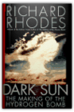
Richard Rhodes
The Pulitzer Prize-winning author of The Making of the Atomic Bomb now gives readers the enthralling, definitive story of the effort behind the creation of the H-Bomb—one of the most dramatic achievements in human history. Published to coincide with the 50th anniversary of the bombing of Hiroshima. 16 pages of photos. Index.
The Dark Wind

Dave Barry Talks Back
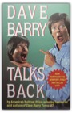
Dave Barry
Yet another collection of Barry wit and wisdom by the Pulitzer Prize-winning humorist and the author of Dave Barry Turns 40. Reprint. NYT. 100,000 first printing. $75,000 ad/promo.
The Day the War Ended: May 8, 1945 : Victory in Europe
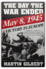
Martin Gilbert
"Out of the nightmare, out of the endless tattered processions of refugees, the divisions victorious and defeated milling this way and that, the vile prisons festering with disease, a thousand pungent details and incongruous names leap out of the pages. . . . It is a tremendous portrait of Europe in the weeks and months around V-E Day."—Jan Morris, Independent (London). photos.
The Days are Just Packed: A Calvin and Hobbes Collection

Death In A White Tie
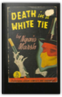
Ngaio Marsh
The season has begun. Debutantes and chaperones are planning their luncheons, teas, dinners, and balls, and the blackmailer is planning his strategies and stalking his next victim. Chief Detective Inspector Roderick Alleyn senses that something was up. He plants his friend Lord Robert Gospell at the scene, but when he arrives it becomes clear that someone else got their first.
Deborah and Mountain of My Fear
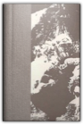
David Roberts
Decider

Democracy in America
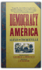
Alexis De Tocqueville, J. P. Mayer
Endlessly quoted and referred to, Tocqueville's great history is as relevant now as when it was first published in the mid-19th century, and it remains the most penetrating and astute picture of American life ever written.
Descartes' Metaphysical Physics
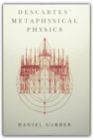
Daniel Garber
In this first book-length treatment of Descartes' important and influential natural philosophy, Daniel Garber is principally concerned with Descartes' accounts of matter and motion—the joint between Descartes' philosophical and scientific interests. These accounts constitute the point at which the metaphysical doctrines on God, the soul, and body, developed in writings like the Meditations, give rise to physical conclusions regarding atoms, vacua, and the laws that matter in motion must obey.Garber achieves a philosophically rigorous reading of Descartes that is sensitive to the historical and intellectual context in which he wrote. What emerges is a novel view of this familiar figure, at once unexpected and truer to the historical Descartes. The book begins with a discussion of Descartes' intellectual development and the larger project that frames his natural philosophy, the complete reform of all the sciences. After this introduction Garber thoroughly examines various aspects of Descartes' physics: the notion of body and its identification with extension; Descartes' rejection of the substantial forms of the scholastics; his relation to the atomistic tradition of atoms and the void; the concept of motion and the laws of motion, including Descartes' conservation principle, his laws of the persistence of motion, and his collision law; and the grounding of his laws in God. DESTROYERS; FOXES OF THE SEA, BY EDWIN P. HOYT.
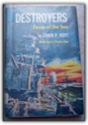
Edwin Palmer Hoyt
The Dialogues of Plato

The Dilbert Principle: A Cubicle'S-Eye View of Bosses, Meetings, Management Fads & Other Workplace Afflictions Bys Scott Adams First Edition
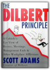
Scott Adams
FIRST EDITION! DJ has wear but interior is perfect.
The Discovery of India

Discrete Mathematics and Its Applications

The Divided Ground: Indians, Settlers, and the Northern Borderland of the American Revolution
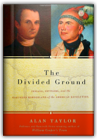
Alan Taylor
In 1761, at a boarding school in New England, a young Mohawk Indian named Joseph Brant first met Samuel Kirkland, the son of a colonial clergyman. They began a long and intense relationship that would redefine North America. For nearly fifty years, their lives intertwined, at first as close friends but later as bitter foes. Kirkland served American expansion as a missionary and agent, promoting Indian conversion and dispossession. Brant pursued an alternative future for the continent by defending an Indian borderland nestled between the British in Canada and the Americans, rather than divided by them.By telling their dramatic story, Alan Taylor illuminates the dual borders that consolidated the new American nation after the Revolution. By constricting Indians within reservation lines, the Americans sought to control their northern boundary with the British Empire, which lingered in Canada. The border became firm as thousands of settlers established farms, held as private property, all around the new reservations. This struggle also pitted the federal government against the leaders of New York, competing to control the lands and the Indians of the border country. They contended for the highest of stakes because the transformation of Indian land constructed the wealth and the power of states, nations, and empires in North America. In addition to land, the frontier contest pivoted on murders, which repeatedly tested who had legal jurisdiction: Indians or newcomers. To assert power, the contending regimes sought to try and execute Indians or settlers who killed one another. To defend native autonomy, however, the Indians asserted an alternative by “covering the graves” of victims with presents to console their kin. When the gallows replaced covered graves, the Indians lost their middle position as free peoples. Taylor breaks with the stereotype of Indians as defiant but doomed traditionalists, as noble but futile defenders of ancient ways. In fact, the borderland Indians demonstrated remarkable adaptability and creativity in coping with the contending powers and with the growing numbers of invading settlers. Led by Joseph Brant, the natives tried to manage, rather than entirely to block, the process of settlement. Taylor shows that they did so in ways meant to preserve Indian autonomy and prosperity. Rather than sell lands for a song to governments, the Indians sought greater control and revenue by leasing lands directly to settler tenants. But neither the British nor the American leaders could accept Indians as landlords, as competitors in the construction of power from land in North America. Once a “middle ground,” the borderland became a divided ground, partitioned between the British Empire and the American republic. Do Penguins Have Knees?: An Imponderables Book

What happens to your Social Security number when you die? Why are peanuts listed as an ingredient in plain M&Ms? Why is Barbie's hair made out of nylon, but Ken's hair is plastic? What makes up the ever-mysterious "new-car smell"? Pop-culture guru David Feldman demystifies these topics and so much more in Do Penguins Have Knees? — the unchallenged source of answers to civilization's most perplexing questions. Part of the Imponderables® series, Do Penguins Have Knees? arms readers with the knowledge about everyday life that encyclopedias, dictionaries, and almanacs just don't have. And think about it, where else are you going to get to the bottom of how beer was kept cold in the Old West? Dr. Seuss Goes to War: The World War II Editorial Cartoons of Theodor Seuss Geisel

The Dragons of Eden: Speculations on the Evolution of Human Intelligence
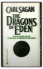
Carl Sagan
Dressed for Death

Dune
A stunning blend of adventure and mysticism, environmentalism and politics, Dune won the first Nebula Award, shared the Hugo Award, and formed the basis of what it undoubtedly the grandest epic in science fiction. The East Asian Challenge for Human Rights

The Edge Of The Crazies
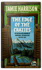
Jamie Harrison
Perched at the foot of Montana's Crazy Mountains, Blue Deer is a small town boasting an uneasy mix of longtime residents and hotshots from both coasts looking to possess their own piece of the Big Sky. Local sheriff Jules Clement manages the town's tensions fairly well...until someone blasts a hole in screenwriter George Blackwater's office window—and in George himself.As more of the town's prominent citizens start turning up dead, the pressure on Jules keeps rising. It starts to look like this rookie sheriff may not survive the next election...if he lives to see it. The Education of Henry Adams

His political ideals shaped by two presidential ancestors—great-grandfather John Adams and grandfather John Quincy Adams—Henry Adams was one of the most powerful and original minds to confront the American scene from the Civil War to the First World War. Printed privately in 1907 and published to wide acclaim shortly after the author&'s death in 1918, The Education of Henry Adams is a brilliant, idiosyncratic blend of autobiography and history that charts the great transformation in American life during the so-called Gilded Age. With an introduction by renowned historian Edmund Morris. The Elements of Style

The Elements of Style
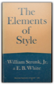
William, Jr. : Whilte, E. B. Strunk
The classic manual on concise writing in English. Author William Strunk, Jr. says it all - "This book aims to give in brief space the principal requirements of plain English style."
Embracing Defeat: Japan in the Wake of World War II

Emo's Great Story

Enlightened Soups: More Than 135 Light, Healthy, Delicious and Beautiful Soups in 60 Minutes or Less
Escape from Lucania : An Epic Story of Survival
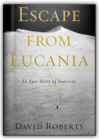
David Roberts
In 1937, Mount Lucania was the highest unclimbed peak in North America. Located deep within the Saint Elias mountain range, which straddles the border of Alaska and the Yukon, and surrounded by glacial peaks, Lucania was all but inaccessible. The leader of one failed expedition deemed it "impregnable." But in that year, a pair of daring young climbers would attempt a first ascent, not knowing that their quest would turn into a perilous struggle for survival. "Escape from Lucania" is their remarkable story.Classmates and fellow members of the Harvard Mountaineering Club, Brad Washburn and Bob Bates were two talented young men — handsome, intelligent, and filled with a zest for exploring. Both were ambitious climbers, part of a small group whose first ascents in the great mountain ranges during the 1930s and 1940s changed the face of American mountaineering. Setting their sights on summitting Lucania in the summer of 1937, Washburn and Bates put together a team of four climbers for the expedition. But when Bates and Washburn flew to the Walsh Glacier at the foot of Lucania, they discovered that freakish weather conditions had turned the ice to slush. Their pilot was barely able to take off again alone, and there was no question of returning with the other two climbers or more supplies. Washburn and Bates found themselves marooned on the glacier, more than a hundred miles from help, in forbidding and desolate territory. Eschewing a trek out to the nearest mining town — eighty miles away by air — they decided to press ahead with their expedition. "Escape from Lucania" recounts Washburn and Bates's determined drive toward Lucania's 17,150-foot summit under constant threat ofavalanches, blinding snowstorms, and hidden crevasses. Against awesome odds they became the first to set foot on Lucania's peak, not realizing that their greatest challenge still lay beyond. Nearly a month after being stranded on the glacier and with their supplies running dangerously low, they would have to navigate their way out through uncharted Yukon territory, racing against time as the summer warmth caused rivers to swell and flood to unfordable depths. But even as their situation grew more and more desperate, they refused to give up. "Escape from Lucania" tells this amazing story in thrilling and vivid detail, from the climbers' exultation at reaching the summit to their darkest moments confronting seemingly insurmountable obstacles. It is a tale of awesome adventure and harrowing danger. But above all it is the story of two men of extraordinary spirit, inspiring comradeship, and great courage. Today Washburn and Bates, now in their nineties, are legends in climbing circles. Bates co-led 1938 and 1953 expeditions to K2, the world's second-highest mountain. Washburn, whose record of Alaskan first ascents is unmatched, became founding director of Boston's Museum of Science and is one of the premier mountain photographers in the world. Some of his remarkable images from the 1937 Lucania expedition are included in this book. Escape Routes: Further Adventure Writings of David Roberts
Essential Cell Biology: An introducton to the Molecular Biology of the Cell

Saves work for teachers — motivates students Now a new introductory text explains cell biology at a level that is easy to grasp for students with a minimal knowledge of biology. The detailed, easy-to-follow text provides students with important background information and the basics necessary to understand cell biology. Teachers can spend less time explaining fundamentals and can focus on more sophisticated concepts. In addition, a profusion of detailed step-by-step full-color diagrams, electron micrographs and photographs reveal and clarify important principles and processes. Written by the authors of a renowned classic This new volume is the work of the same exceptional team who wrote the groundbreaking and universally acclaimed text Molecular Biology of the Cell, now in its Third Edition. The brand-new Essential Cell Biology was written in response to many professors who expressed a need for an introductory textbook for undergraduates that was not as difficult as texts for advanced undergraduate and graduate students. In Essential Cell Biology, early chapters review basic concepts in chemistry and biochemistry to provide the necessary understanding of the essential processes and mechanisms covered later in the text. The full-color schematics have been meticulously constructed specifically for students taking a basic course. — Problems and answers complement the text and stimulate the student's curiosity. — Quick questions within each chapter enable students to instantly review what they have just read. — End-of-chapter self-tests of more challenging questions letstudents gauge their grasp of the material and whet their appetite for more information. — Easy-to-understand panels illuminate the principles of microscopy, the composition of biological macromolecules, the basis of hydrophobicity, the glycolytic pathway, principles of genetics, and many more topics. — Lavish full-color art work and many color photographs and electron micrographs enliven and illustrate the text. — A detailed glossary helps students master the specialized vocabulary of modern biology. An easy-to-grasp introduction to cell biology The new text has been carefully geared to introductory students, without any sacrifice of scientific rigor. The book's conceptual approach, in which the essential facts are presented in their biological context, is ideal for engaging and motivating students new to molecular and cell biology. The book is written especially for undergraduates in biological sciences, but its content can be easily understood and absorbed by advanced high-school students who need a basic introduction to the essential topics in modern biology. Here are some of the highlights of the coverage: — A superb chapter on proteins takes students step by step from the basic construction of protein molecules to the construction of the protein machines that drive cellular processes. — Coverage of genetic variation and recombinant DNA technology offers students an easy-to-understand introduction to the techniques at the frontiers of biological research. — The text is enlivened and enriched throughout with examples of practical applications of the basic biological principles presented. — Explanations of cell biological processes also show at themolecular level how cancers can arise when the processes go out of control. — Fully up-to-date chapters on intracellular membrane traffic, the cytoskeleton, the cell cycle and signal transduction provide a state-of-the-art perspective on these cutting-edge fields at an introductory level. — All the illustrations are available on CD-ROM — enabling instructors to put together individualized presentations in just a few minutes. — A Test Bank offers multiple-choice and short-answer questions on each chapter. — Slide set — Transparencies The Essential Plotinus: Representative Treatises from the Enneads

Euripides IV: Rhesus / The Suppliant Women / Orestes / Iphigenia in Aulis

The Everything Homebuying Book: All the Ins and Outs of Making the Biggest Purchase of Your Life
The Everything® Homebuying Book, 2nd Edition is specially designed for anyone who is overwhelmed by this daunting process. It takes you step by step through the process and provides practical advice for getting the most for your money and making the right decisions for you and your family. This completely revised and updated edition of The Everything® Homebuying Book gives you the information you need to avoid costly mistakes and save thousands of dollars. Features: ·Advice on choosing the right house, condo, co-op, or vacation home ·Up-to-date information on mortgage rates, property values, and market trends ·Guidelines for working with agents, brokers, lawyers, and lenders ·Advice on financing options and making a down payment ·Easy-to-follow instructions for choosing and securing the right mortgage ·Tips for negotiating and getting more for your money Whether you are buying your first home or your fourth, The Everything® Homebuying Book, 2nd Edition walks you through the biggest purchase of your life with expert advice you can trust. The Fabrication of Louis XIV

Faceless Killers

Fade Away

In novels that crackle with wit and suspense, Edgar Award winner Harlan Coben has created one of the most fascinating and complex heroes in suspense fiction—Myron Bolitar—a hotheaded, tenderhearted sports agent who grows more and more engaging and unpredictable with each page-turning appearance. The Fannie Farmer Cookbook: A Heritage of Good Cooking for a New Generation of Cooks

Originally published in 1896 as The Boston Cooking-School Cook Book by Fannie Merritt Farmer, it became the coobook that taught generations of Americans how to cook. Completely updating it for the first time since 1979, Marion Cunningham made Fannie Farmer once again a household word for a new generation of cooks. What makes this basic cookbook so distinctive is that Marion Cunningham, who is the personification of the nineteenth-century teacher, is always at your side with her forthright tips and comments, encouraging the beginning cook and inspiring the more adventurous. She knows what today's cooks are looking for, and she has a way of instilling confidence and joy in the act of cooking. In giving the book new life, Mrs. Cunningham has been careful always to preserve the best of the old. She has retained all the particularly good, tried-and-true recipes from preceding editions, retesting and rewriting when necessary. She has rediscovered lost treasures, including delicious recipes that were eliminated when practically no one baked bread at home. This is now the place to find the finest possible recipes for Pumpkin Soup, Boston Baked Beans, Carpetbag Steak, Roast Stuffed Turkey, Anadama Bread, Indian Pudding, Apple Pie, and all of the other traditional favorites. The new recipes reflect ethnic influences—Mediterranean, Moroccan, Asian—that have been adding their flavors to American cooking in recent years. Tucked in among all your favorites like Old-Fashioned Beef Stew, New England Clam Chowder, Ham Timbales, and Chicken Jambalaya, you'll find her cool Cucumber Sushi, Enchiladas with Chicken and Green Sauce, or a layered dish of Polenta and Fish to add variety to your repertoire. Always a champion of old-fashioned breakfasts and delectable desserts, Mrs. Cunningham has many splendid new offerings to tempt you. Throughout, cooking terms and procedures are explained, essential ingredients are spelled out, basic equipment is assessed. Mrs. Cunningham even tells you how to make a good cup of coffee and how to brew tea properly. For the diet-conscious, there is an expanded nutritional chart that includes a breakdown of cholesterol and fat in common ingredients as well as in Fannie Farmer basic recipes. Where the taste of a dish would not be altered, Mrs. Cunningham has reduced the amount of cream and butter in some of the recipes from the preceding edition. She carefully evaluates the issues of food safety today and alerts us to potential hazards. But the emphasis here is always on good flavor, fresh ingredients, and lots of variety in one's daily fare, which Marion Cunningham believes is the secret to a healthy diet. Dedicated to the home cooks of America, young and old, this thirteenth edition of the book that won the hearts of Americans more than a century ago invites us all—as did the original Fannie Farmer—to cherish the delights of the family table. Fast Food Nation: The Dark Side of the All-American Meal

Schlosser's myth-shattering survey stretches from California's subdivisions, where the business was born, to the industrial corridor along the New Jersey Turnpike, where many of fast food's flavors are concocted. Along the way, he unearths a trove of fascinating, unsettling truths — from the unholy alliance between fast food and Hollywood to the seismic changes the industry has wrought in food production, popular culture, and even real estate. Feeding the Monster: How Money, Smarts, and Nerve Took a Team to the Top
Feeding the Monster shows what it takes to win a championship, both on and off the field. Seth Mnookin spent mornings in the front office, afternoons in the clubhouse, and evenings in the owners' box. He learned how the Sox persuaded Curt Schilling to sign, why Nomar Garciaparra resented his teammates, and what led to Pedro Martinez's acrimonious exit. He knows the real story behind Theo Epstein's brief departure and witnessed the development of his rift with Larry Lucchino. And in a new epilogue, Mnookin examines the 2006 offseason, including the negotiations for Japanese phenom Daisuke Matsuzaka. In a juicy narrative that is filled with thrilling detail, Feeding the Monster peels back the curtain to show what it means to be a part of a major league sports team today. The Fellowship of the Ring

Fermat's Enigma: The Epic Quest to Solve the World's Greatest Mathematical Problem
"I have discovered a truly marvelous demonstration of this proposition which this margin is too narrow to contain." With these words, the seventeenth-century French mathematician Pierre de Fermat threw down the gauntlet to future generations. What came to be known as Fermat's Last Theorem looked simple; proving it, however, became the Holy Grail of mathematics, baffling its finest minds for more than 350 years. In Fermat's Enigma—based on the author's award-winning documentary film, which aired on PBS's "Nova"—Simon Singh tells the astonishingly entertaining story of the pursuit of that grail, and the lives that were devoted to, sacrificed for, and saved by it. Here is a mesmerizing tale of heartbreak and mastery that will forever change your feelings about mathematics. Fermat's Last Theorem: Unlocking the Secret of an Ancient Mathematical Problem

Fieldbook: Boy Scouts of America
The Fifth Woman

In an African convent, four nuns and a unidentified fifth woman are brutally murdered—the death of the unknown woman covered up by the local police. A year later in Sweden, Inspector Kurt Wallander is baffled and appalled by two murders. Holger Eriksson, a retired car dealer and bird watcher, is impaled on sharpened bamboo poles in a ditch behind his secluded home, and the body of a missing florist is discovered—strangled and tied to a tree. The only clues Wallander has to go on are a skull, a diary, and a photo of three men. What ensues is a case that will test Wallander’s strength and patience, because in order to discover the reason behind these murders, he will also need to uncover the elusive connection between these deaths and the earlier unsolved murder in Africa of the fifth woman. FIFTY-EIGHT (58) LONELY MEN, Southern Federal Judges and School Desegregation

The Final Detail
Then Myron Bolitar gets some really bad news.... For sports agent Myron Bolitar, it seemed like the perfect vacation. A tropical beach. A warm breeze. A little uncomplicated passion with a woman he barely knows. Myron is almost in heaven when his friend Win shows up with a message that blasts him back to reality: Esperanza is in trouble. It's time to come home. Now Myron is back in New York, determined to help Esperanza, his best friend and partner, who's been accused of killing one of their clients. But Esperanza isn't talking. Neither is her lawyer. And to prove his friend's innocence, Myron must trace the rise and fall of the victim, a pitcher who had been making a comeback with the Yankees. Suddenly the investigation is leading Myron to places he'd rather not go: into a family's agony, through the city's sexual underground, and to a moment buried on the dark side of a brilliant sports career.... Twelve years ago a young agent named Bolitar tried to help an up-and-coming athlete. It was a fatal mistake—and now Myron will have to pay the price.... Fire
Few writers have been to so many desperate corners of the globe as has Sebastian Junger; fewer still have provided such starkly memorable evocations of characters and events. From the murderous mechanics of the diamond trade in Sierra Leone to the logic of guerrilla warfare in Afghanistan and the forensics of genocide in Kosovo, this new collection of Junger's nonfiction will take you places you wouldn't dream of going to on your own. The First and Second Discourses

Flags of Our Fathers
In February 1945, American Marines plunged into the surf at Iwo Jima—and into history. Through a hail of machine-gun and mortar fire that left the beaches strewn with comrades, they battled to the island's highest peak. And after climbing through a landscape of hell itself, they raised a flag. Now the son of one of the flagraisers has written a powerful account of six very different young men who came together in a moment that will live forever. To his family, John Bradley never spoke of the photograph or the war. But after his death at age seventy, his family discovered closed boxes of letters and photos. In Flags of Our Fathers, James Bradley draws on those documents to retrace the lives of his father and the men of Easy Company. Following these men's paths to Iwo Jima, James Bradley has written a classic story of the heroic battle for the Pacific's most crucial island—an island riddled with Japanese tunnels and 22,000 fanatic defenders who would fight to the last man. But perhaps the most interesting part of the story is what happened after the victory. The men in the photo—three were killed during the battle—were proclaimed heroes and flown home, to become reluctant symbols. For two of them, the adulation was shattering. Only James Bradley's father truly survived, displaying no copy of the famous photograph in his home, telling his son only: "The real heroes of Iwo Jima were the guys who didn't come back." Few books ever have captured the complexity and furor of war and its aftermath as well as Flags of Our Fathers. A penetrating, epic look at a generation at war, this is history told with keen insight, enormous honesty, and the passion of a son paying homage to his father. It is the story of the difference between truth and myth, the meaning of being a hero, and the essence of the human experience of war. FOR LOVE OF COUNTRY
Fifteen writers and thinkers respond to Nussbaum's piece in short, hard-hitting, often brilliant essays, acknowledging the power of her argument, but often defending patriotisms and other local commitments with an eloquence equal to Nussbaum's. We hear from an astonishing range of writers from Robert Pinsky to Cornel West to Gertrude Himmelfarb to Sissela Bok. This is contemporary American philosophy at its most relevant and readable. At a time when debates about crises in Bosnia or Somalia are dominated by politicians and military leaders, here are the voices of philosophers and poets, literary scholars and historians. A book of surprising insights and diversity, For Love of Country is especially written for a wide audience and is sure to spark debate. Foreclosed: High-Risk Lending, Deregulation, and the Undermining of America's Mortgage Market

Immergluck, who has been working, researching, and writing on issues tied to housing finance and neighborhood change for almost twenty years, has an intimate knowledge of the promotion of homeownership and the history of mortgages in the United States. The changes to the mortgage market over the past fifteen years-including the securitization of mortgages and the failure of regulators to maintain control over a much riskier array of mortgage products-led, he finds, inexorably to the current crisis. After describing the development of generally stable and risk-limiting mortgage markets throughout much of the twentieth century, Foreclosed details how federal policy-makers failed to regulate the new high-risk lending markets that arose in the late 1990s and early 2000s. The book also examines federal, state, and local efforts to deal with the mortgage and foreclosure crisis of 2007 and 2008. Immergluck draws upon his wealth of experience to provide an overarching set of principles and a detailed set of policy recommendations for "righting the ship" of U.S. housing finance in ways that will promote affordable yet sustainable homeownership as an option for a broad set of households and communities. The 2011 paperback edition features a new preface by the author addressing the ongoing global economic crisis and the impact of U.S. financial reform efforts on the mortgage system. Forging Democracy: The History of the Left in Europe, 1850-2000
Neither given nor granted, democracy requires conflict, often violent confrontations, and challenges to the established political order. In Europe, Geoff Eley convincingly shows, democracy did not evolve organically out of a natural consensus, the achievement of prosperity, or the negative cement of the Cold War. Rather, it was painstakingly crafted, continually expanded, and doggedly defended by varying constellations of socialist, feminist, Communist, and other radical movements that originally blossomed in the later nineteenth century. Parties of the Left championed democracy in the revolutionary crisis after World War I, salvaged it against the threat of fascism, and renewed its growth after 1945. They organized civil societies rooted in egalitarian ideals which came to form the very fiber of Europe's current democratic traditions. The trajectories of European democracy and the history of the European Left are thus inextricably bound together. Geoff Eley has given us the first truly comprehensive history of the European Left—its successes and failures; its high watermarks and its low tides; its accomplishments, insufficiencies, and excesses; and, most importantly, its formative, lasting influence on the European political landscape. At a time when the Left's influence and legitimacy are frequently called into question, Forging Democracy passionately upholds its vital contribution. The Formal Semantics of Programming Languages: An Introduction
Starting with basic set theory, structural operational semantics is introduced as a way to define the meaning of programming languages along with associated proof techniques. Denotational and axiomatic semantics are illustrated on a simple language of while-programs, and fall proofs are given of the equivalence of the operational and denotational semantics and soundness and relative completeness of the axiomatic semantics. A proof of Godel's incompleteness theorem, which emphasizes the impossibility of achieving a fully complete axiomatic semantics, is included. It is supported by an appendix providing an introduction to the theory of computability based on while-programs. Following a presentation of domain theory, the semantics and methods of proof for several functional languages are treated. The simplest language is that of recursion equations with both call-by-value and call-by-name evaluation. This work is extended to lan guages with higher and recursive types, including a treatment of the eager and lazy lambda-calculi. Throughout, the relationship between denotational and operational semantics is stressed, and the proofs of the correspondence between the operation and denotational semantics are provided. The treatment of recursive types - one of the more advanced parts of the book - relies on the use of information systems to represent domains. The book concludes with a chapter on parallel programming languages, accompanied by a discussion of methods for specifying and verifying nondeterministic and parallel programs. Four Colors Suffice: How the Map Problem Was Solved

The problem posed in the letter came from a former student: What is the least possible number of colors needed to fill in any map (real or invented) so that neighboring counties are always colored differently? This deceptively simple question was of minimal interest to cartographers, who saw little need to limit how many colors they used. But the problem set off a frenzy among professional mathematicians and amateur problem solvers, among them Lewis Carroll, an astronomer, a botanist, an obsessive golfer, the Bishop of London, a man who set his watch only once a year, a California traffic cop, and a bridegroom who spent his honeymoon coloring maps. In their pursuit of the solution, mathematicians painted maps on doughnuts and horseshoes and played with patterned soccer balls and the great rhombicuboctahedron. It would be more than one hundred years (and countless colored maps) later before the result was finally established. Even then, difficult questions remained, and the intricate solution—which involved no fewer than 1,200 hours of computer time—was greeted with as much dismay as enthusiasm. Providing a clear and elegant explanation of the problem and the proof, Robin Wilson tells how a seemingly innocuous question baffled great minds and stimulated exciting mathematics with far-flung applications. This is the entertaining story of those who failed to prove, and those who ultimately did prove, that four colors do indeed suffice to color any map. Four Texts on Socrates: Plato's "Euthyphro," "Apology of Socrates," "Crito," and Aristophanes' "Clouds"
This is the only collection of the three Platonic dialogues that also includes Clouds, a work that is fundamental for understanding the thought of Socrates in relation to the Athenian political community and to Greek poetry. Thomas G. West's introduction provides an overview of the principal themes and arguments of the four works. There are extensive explanatory notes to the translations. In their translations, the Wests capture successfully the simplicity and vigor of straightforward Greek diction. They strive for as high a degree of accuracy as possible, subordinating concerns for elegance and smoothness to the goal of producing the most faithful and most reliable English versions of these texts. For this new edition, Thomas West has revised the introduction and updated the annotated bibliography, which includes the best of the secondary literature on Socrates and on the texts included in this book. Friends in High Places

Donna Leon?s sophisticated Commissario Brunetti series has won her legions of fans over the years. In Friends in High Places, Brunetti is visited by a young bureaucrat investigating the lack of official approval for the building of Brunetti?s apartment years before. What began as a red tape headache ends in murder when the bureaucrat is found dead after a mysterious fall from a scaffold. Brunetti starts an investigation that will take him into unfamiliar and dangerous areas of Venetian life, and will reveal, once again, what a difference it makes to have friends in high places. From Max Weber: Essays in Sociology
Fundamentals of Biostatistics
The Future of the Internet—And How to Stop It

IPods, iPhones, Xboxes, and TiVos represent the first wave of Internet-centered products that can’t be easily modified by anyone except their vendors or selected partners. These tethered appliances” have already been used in remarkable but little-known ways: car GPS systems have been reconfigured at the demand of law enforcement to eavesdrop on the occupants at all times, and digital video recorders have been ordered to self-destruct thanks to a lawsuit against the manufacturer thousands of miles away. New Web 2.0 platforms like Google mash-ups and Facebook are rightly toutedbut their applications can be similarly monitored and eliminated from a central source. As tethered appliances and applications eclipse the PC, the very nature of the Internetits generativity,” or innovative characteris at risk. The Internet’s current trajectory is one of lost opportunity. Its salvation, Zittrain argues, lies in the hands of its millions of users. Drawing on generative technologies like Wikipedia that have so far survived their own successes, this book shows how to develop new technologies and social structures that allow users to work creatively and collaboratively, participate in solutions, and become true netizens.” Gaudi: Architect and Artist

Genetics: Analysis of Genes and Genomes
German Home Towns: Community, State, and General Estate, 1648-1871

Get Your War on

The Ghost Map: The Story of London's Most Terrifying Epidemic and How It Changed Science, Cities, and the Modern World

The Ghost Map takes place in the summer of 1854. A devastating cholera outbreak seizes London just as it is emerging as a modern city: more than 2 million people packed into a ten-mile circumference, a hub of travel and commerce, teeming with people from all over the world, continually pushing the limits of infrastructure that's outdated as soon as it's updated. Dr. John Snow—whose ideas about contagion had been dismissed by the scientific community—is spurred to intense action when the people in his neighborhood begin dying. With enthralling suspense, Johnson chronicles Snow's day-by-day efforts, as he risks his own life to prove how the epidemic is being spread. When he creates the map that traces the pattern of outbreak back to its source, Dr. Snow didn't just solve the most pressing medical riddle of his time. He ultimately established a precedent for the way modern city-dwellers, city planners, physicians, and public officials think about the spread of disease and the development of the modern urban environment. The Ghost Map is an endlessly compelling and utterly gripping account of that London summer of 1854, from the microbial level to the macrourban-theory level—including, most important, the human level. Watch a QuickTime trailer for this book. Glacier Travel & Crevasse Rescue: Reading Glaciers, Team Travel, Crevasse Rescue Techniques, Routefinding, Expedition Skills 2nd Edition

Glacier-Waterton International Peace Park
God Emperor of Dune
God's Playground: A History of Poland, Vol. 1: The Origins to 1795
Davies emphasizes the cultural history of Poland through a presentation of extensive poetical, literary, and documentary texts in English translation. In each volume, chronological chapters of political narrative are interspersed with essays on religious, social, economic, constitutional, philosophical, and diplomatic themes. This new edition has been revised and fully updated with two new chapters to bring the story to the end of the twentieth century. God's Playground: A History of Poland, Vol. 2: 1795 to the Present

Davies emphasizes the cultural history of Poland through a presentation of extensive poetical, literary, and documentary texts in English translation. In each volume, chronological chapters of political narrative are interspersed with essays on religious, social, economic, constitutional, philosophical, and diplomatic themes. This new edition has been revised and fully updated with two new chapters to bring the story to the end of the twentieth century. The Golden Spruce: A True Story of Myth, Madness, and Greed

When a shattered kayak and camping gear are found on an uninhabited island, they reignite a mystery surrounding a shocking act of protest. Five months earlier, logger-turned-activist Grant Hadwin had plunged naked into a river in British Columbia's Queen Charlotte Islands, towing a chainsaw. When his night's work was done, a unique Sitka spruce, 165 feet tall and covered with luminous golden needles, teetered on its stump. Two days later it fell. The tree, a fascinating puzzle to scientists, was sacred to the Haida, a fierce seafaring tribe based in the Queen Charlottes. Vaillant recounts the bloody history of the Haida and the early fur trade, and provides harrowing details of the logging industry, whose omnivorous violence would claim both Hadwin and the golden spruce. Gone for Good
Now eleven years have passed. Will has found proof that Ken is alive. And this is just the first in a series of stunning revelations as Will is forced to confront startling truths about his brother, and even himself. As a violent mystery unwinds around him, Will knows he must press his search all the way to the end. Because the most powerful surprises are yet to come. Grammatika v kontekste: Russian Grammar in Literary Contexts
Grand Expectations: The United States, 1945-1974
Now, in Grand Expectations, James T. Patterson has written a highly readable and balanced work that weaves the major political, cultural, and economic events of the period into a superb portrait of America from 1945 through Watergate. Here is an era teeming with memorable events—from the bloody campaigns in Korea and the bitterness surrounding McCarthyism to the assassinations of the Kennedys and Martin Luther King, to the Vietnam War, Watergate, and Nixon's resignation. Patterson excels at portraying the amazing growth after World War II—the great building boom epitomized by Levittown (the largest such development in history) and the baby boom (which exploded literally nine months after V-J Day)—as well as the resultant buoyancy of spirit reflected in everything from streamlined toasters, to big, flashy cars, to the soaring, butterfly roof of TWA's airline terminal in New York. And he shows how this upbeat, can-do mood spurred grander and grander expectations as the era progressed. Of course, not all Americans shared in this economic growth, and an important thread running through the book is an informed and gripping depiction of the civil rights movement—from the electrifying Brown v. Board of Education decision, to the violent confrontations in Little Rock, Birmingham, and Selma, to the landmark civil rights acts of 1964 and 1965. Patterson also shows how the Vietnam War—which provoked LBJ's growing credibility gap, vast defense spending that dangerously unsettled the economy, and increasingly angry protests—and a growing rights revolution (including demands by women, Hispanics, the poor, Native Americans, and gays) triggered a backlash that widened hidden rifts in our society, rifts that divided along racial, class, and generational lines. And by Nixon's resignation, we find a national mood in stark contrast to the grand expectations of ten years earlier, one in which faith in our leaders and in the attainability of the American dream was becoming shaken. The Oxford History of the United States The Oxford History of the United States is the most respected multi-volume history of our nation. The series includes three Pulitzer Prize winners, a New York Times bestseller, and winners of the Bancroft and Parkman Prizes. The Atlantic Monthly has praised it as "the most distinguished series in American historical scholarship," a series that "synthesizes a generation's worth of historical inquiry and knowledge into one literally state-of-the-art book." Conceived under the general editorship of C. Vann Woodward and Richard Hofstadter, and now under the editorship of David M. Kennedy, this renowned series blends social, political, economic, cultural, diplomatic, and military history into coherent and vividly written narrative. Green Mountain Club Long Trail Guide: Hiking Vermont's High Ridge

The Gulag Archipelago 1918-1956: An Experiment in Literary Investigation, Parts I-II

The Guns of August
Guns, Germs, and Steel: The Fates of Human Societies
Until around 11,000 b.c., all peoples were still Stone Age hunter/gatherers. At that point, a great divide occurred in the rates that human societies evolved. In Eurasia, parts of the Americas, and Africa, farming became the prevailing mode of existence when indigenous wild plants and animals were domesticated by prehistoric planters and herders. As Jared Diamond vividly reveals, the very people who gained a head start in producing food would collide with preliterate cultures, shaping the modern world through conquest, displacement, and genocide. The paths that lead from scattered centers of food to broad bands of settlement had a great deal to do with climate and geography. But how did differences in societies arise? Why weren't native Australians, Americans, or Africans the ones to colonize Europe? Diamond dismantles pernicious racial theories tracing societal differences to biological differences. He assembles convincing evidence linking germs to domestication of animals, germs that Eurasians then spread in epidemic proportions in their voyages of discovery. In its sweep, Guns, Germs and Steel encompasses the rise of agriculture, technology, writing, government, and religion, providing a unifying theory of human history as intriguing as the histories of dinosaurs and glaciers. Jared Diamond, professor of physiology at the UCLA Medical School, is the author of The Third Chimpanzee, awarded the 1992 Los Angeles Times Science Book Award. He is a regular contributor to Natural History and Discover magazines and lives in Los Angeles. Hamlet

The "Intellectual Backgrounds" and "Extracts from the Sources" sections, both highly praised, remain as germane as ever. Intellectual Backgrounds includes important readings on melancholy, demonology, the nature of man, and death, including works by Peter de la Primaudaye, Timothy Bright, Lewes Lavater, G. Gifford, Michel de Montaigne, and Heironymous Cardanus. Extracts from the Sources provides pre-Shakespearean accounts of the story of Hamlet, reprinting substantial excerpts from Saxo Grammaticus's Historia Danica and Belleforest's Histoires Tragiques. "Criticism" has been revised to accommodate the most significant recent interpretations of Hamlet while retaining the seminal essays of the First Edition. Twenty-three critical analyses are featured, including those by Samuel Johnson, Johann Wolfgang von Goethe, Samuel Taylor Coleridge, William Hazlitt, A. C. Bradley, D. H. Lawrence, T. S. Eliot, G. Wilson Knight, C. S. Lewis, Harry Levin, Peter J. Seng, Rebecca West, Arnold Kettle, Margaret W. Ferguson, Jacqueline Rose, and William Empson. An updated Selected Bibliography is also included. Hamlet - A User's Guide

The Handbook of Programming Languages (HPL): Imperative Programming Languages

Handbook of Russian Prepositions
Harpercollins Russian Dictionary: Russian English English Russian
Harry Potter and the Deathly Hallows
You'll find out July 21! Harry Potter and the Half-Blood Prince

We could tell you, but then we'd have to Obliviate your memory. Harry Potter and the Order of the Phoenix
We could tell you, but then we'd have to Obliviate your memory. Harry Potter and the Prisoner of Azkaban
Heads in the Sand: How the Republicans Screw Up Foreign Policy and Foreign Policy Screws Up the Democrats

"A very serious, thoughtful argument that has never been made in such detail or with such care." —Ezra Klein, staff writer at The American Prospect "Matt Yglesias is one of the smartest voices in the blogosphere. He knows a lot about politics, a lot about foreign policy, and, crucially, is unusually shrewd in understanding how they interact. Here's hoping that his new book will introduce him to an even wider audience. Once you discover him, you'll be hooked." —E. J. Dionne, author of Souled Out: Reclaiming Faith and Politics After the Religious Right and Why Americans Hate Politics "Matthew Yglesias is one of a handful of bloggers that I make a point of reading every day. Heads in the Sand is a smart, vital book that urges Democrats to stop evading the foreign-policy debate and to embrace the old principles of international liberalism—to be right and also to win." —Fred Kaplan, author of Daydream Believers: How a Few Grand Ideas Wrecked American Power "Reading foreign policy tomes is seldom included among life's pleasures, but Yglesias has concocted a startling exception. Heads in the Sand is not just a razor-sharp analysis cum narrative of the politics of national security in general and the Iraq war in particular, it's also an enthralling and often very funny piece of writing. Though he administers strong antidotes to the haplessness of his fellow Democrats and liberals, there's more than a spoonful of sugar to help the medicine go down." —Hendrik Hertzberg, Senior Editor, The New Yorker, and author of Politics: Observations and Arguments Fast-rising political commentator Matthew Yglesias reveals the wrong-headed foreign policy stance of conservatives, neocons, and the Republican Party for what it is—aggressive nationalism. Writing with wit, passion, and keen insight, Yglesias reminds us of the rich tradition of liberal internationalism that, developed by Democrats, was used with great success by both Democratic and Republican administrations for more than fifty years. He provides a starting point for politicians, policymakers, pundits, and citizens alike to return America to its role as leader of a peace-loving and cooperative international community. Healthy Bread in Five Minutes a Day: 100 New Recipes Featuring Whole Grains, Fruits, Vegetables, and Gluten-Free Ingredients
• Whole Grain Pizza with Roasted Red Peppers and Fontina• Turkish-Style Pita Bread with Black Sesame Seeds• Cherry Tomato Baguette• Gluten-Free Rosemary Parmesan Bread Sticks• Spicy Chile Whole Grain Snack Crackers• Quinoa Bread• Pistachio Swirled Brioche Heart of Darkness and The Secret Sharer
BY PRACTICAL SCHOLARSHIP Two of Joseph Conrad's most compelling and haunting works, in which the deepest perceptions and desires of the human heart and mind are explored. EACH ENRICHED CLASSIC EDITION INCLUDES: • A concise introduction that gives readers important background information • A chronology of the author's life and work • A timeline of significant events that provides the book's historical context • An outline of key themes and plot points to help readers form their own interpretations • Detailed explanatory notes • Critical analysis, including contemporary and modern perspectives on the work • Discussion questions to promote lively classroom and book group interaction • A list of recommended related books and films to broaden the reader's experience Enriched Classics offer readers affordable editions of great works of literature enhanced by helpful notes and insightful commentary. The scholarship provided in Enriched Classics enables readers to appreciate, understand, and enjoy the world's finest books to their full potential. SERIES EDITED BY CYNTHIA BRANTLEY JOHNSON Hellenistic Philosophy: Introductory Readings
Heretics of Dune
This is Book 5 in Dune Chronicles. The Hero with a Thousand Faces
The first popular work to combine the spiritual and psychological insights of modern psychoanalysis with the archetypes of world mythology, the book creates a roadmap for navigating the frustrating path of contemporary life. Examining heroic myths in the light of modern psychology, it considers not only the patterns and stages of mythology but also its relevance to our lives today—and to the life of any person seeking a fully realized existence. Myth, according to Campbell, is the projection of a culture's dreams onto a large screen; Campbell's book, like Star Wars, the film it helped inspire, is an exploration of the big-picture moments from the stage that is our world. It is a must-have resource for both experienced students of mythology and the explorer just beginning to approach myth as a source of knowledge. HIGH-RESOLUTION NMR TECHNIQUES IN ORGANIC CHEMISTRYTETRAHEDRON ORGANIC CHEMISTRY SERIES VOLUME 19
Hiking Glacier and Waterton Lakes National Parks

Hiroshima Notes

The Histories

A History of Russia

Examining contemporary issues such as the rise of Yeltsin, the nationalities question, and Russia's attempts to market capitalism, this sixth edition takes the study of Russia straight into the new millennium, continuing A History of Russia's nearly forty-year track record as the leader in the field. A History of the Arab Peoples

History of the Peloponnesian War

A History of the Twentieth Century 1900-1933, Vol. 1
This volume of Martin Gilberts three-volume narrative history of the century charts its first thirty-three years. Opening in the age of horse-drawn travel and colonial wars, Gilbert closes this volume with Roosevelt as the newly elected President of the United States, the inauguration of Adolf Hitler as Chancellor of Germany, and the first of Stalins show trials in the Soviet Union. As well as chronicling the wars, revolutions, and political upheavals, Gilbert tells the story of ordinary men and women in every continent, making them an integral part of the events of which they were sometimes the beneficiaries and often the victims. The Hobbit

Holidays on Ice: Stories

The Holy Bible: King James Version

Homicidal Psycho Jungle Cat

How to Cook Everything : Vegetarian Cooking
Black Bean Soup. Eggplant Lasagne. Lentils and Rice with Carmelized Onions. Delicious, nutritious, satisfying dishesthat are all vegetarian. With How to Cook Everything™: Vegetarian Cooking, even meat-eaters will love anything you serve! Mark Bittman, the award-winning author of the bestselling kitchen classic How to Cook Everything™, shares his favorite simpleand infinitely flexiblevegetarian recipes. You can prepare light and healthful lunches, hearty weeknight dinners, and even special-occasion feasts. In addition, to help you plan your meals, youll find Bittmans straight talk on cooking and special features, including: Creative recipe variations and ideasTips for shopping, preparing, and cooking the recipesIllustrations to demystify trickier techniquesMenu suggestions for an Italian Vegetarian Weeknight Dinner, a Vegetarian Party Buffet, and moreAt-a-glance icons highlighting vegan recipes How to Photograph Absolutely Everything: Successful Pictures From Your Digital Camera
How to Rock Climb!, 4th

Hugh Pine and the Good Place

I, Robot

The Idea of India

The Iliad

The Iliad

One of the foremost achievements in Western literature, Homer's Iliad tells the story of the darkest episode of the Trojan War. At its center is Achilles, the greatest warrior-champion of the Greeks, and his conflict with his leader Agamemnon. Interwoven in the tragic sequence of events are powerfully moving descriptions of the ebb and flow of battle, the besieged city of Ilium, the feud between the gods, and the fate of mortals. @RageAgainstTheAchaean Pissed. I am so, so very pissed. First I have to go to this beach. Then I have to kill all these dudes. And NOW – now! This prick stole my biscuit. Who does that? Am I right? Can’t resolve this problem on my own – calling Mom! From Twitterature: The World's Greatest Books in Twenty Tweets or Less Immunology, Fifth Edition

Imzadi

In a Pig's Eye

In Praise of Shadows

Info Box: The Catalogue
Innumeracy: Mathematical Illiteracy and Its Consequences

Inorganic Chemistry

Inside Prime Time: With a New Introduction
Unsurpassed since its first publication, Inside Prime Time is the only book to take us behind the scenes to reveal how prime-time shows get on the air, stay on the air, and are shaped by the political and cultural climate of their times. Using more than 200 interviews with network executives, producers, writers, agents, and actors, as well as months of on-set investigation during the networks' more prosperous years, sociologist and critic Todd Gitlin takes us into a frantic world searching for hit shows. The result is both a lucid picture of the mechanics of prime time and a series of vivid stories of what succeeded or failed, and why. His analysis includes a blow-by-blow account of how the exceptional police series Hill Street Blues succeeded against all odds before eventually succumbing to formula itself. No one else has analyzed, as Gitlin has, the inside track that links executives and producers, or the efforts of worried advertisers, hopeful writers, and the lobbyists of the fundamentalist right to shape America's waking hours. In a new introduction, Gitlin describes the elements of the new television order, and argues that the proliferation of cable channels and the decline of the old networks have not fundamentally changed the business mentality that guides decisions about the entertainment that will fill Americans' leisure time. International Politics on the World Stage: John T. Rourke

Into Thin Air: A Personal Account of the Mt. Everest Disaster

A bank of clouds was assembling on the not-so-distant horizon, but journalist-mountaineer Jon Krakauer, standing on the summit of Mt. Everest, saw nothing that "suggested that a murderous storm was bearing down." He was wrong. The storm, which claimed five lives and left countless more—including Krakauer's—in guilt-ridden disarray, would also provide the impetus for Into Thin Air, Krakauer's epic account of the May 1996 disaster. By writing Into Thin Air, Krakauer may have hoped to exorcise some of his own demons and lay to rest some of the painful questions that still surround the event. He takes great pains to provide a balanced picture of the people and events he witnessed and gives due credit to the tireless and dedicated Sherpas. He also avoids blasting easy targets such as Sandy Pittman, the wealthy socialite who brought an espresso maker along on the expedition. Krakauer's highly personal inquiry into the catastrophe provides a great deal of insight into what went wrong. But for Krakauer himself, further interviews and investigations only lead him to the conclusion that his perceived failures were directly responsible for a fellow climber's death. Clearly, Krakauer remains haunted by the disaster, and although he relates a number of incidents in which he acted selflessly and even heroically, he seems unable to view those instances objectively. In the end, despite his evenhanded and even generous assessment of others' actions, he reserves a full measure of vitriol for himself. This updated trade paperback edition of Into Thin Air includes an extensive new postscript that sheds fascinating light on the acrimonious debate that flared between Krakauer and Everest guide Anatoli Boukreev in the wake of the tragedy. "I have no doubt that Boukreev's intentions were good on summit day," writes Krakauer in the postscript, dated August 1999. "What disturbs me, though, was Boukreev's refusal to acknowledge the possibility that he made even a single poor decision. Never did he indicate that perhaps it wasn't the best choice to climb without gas or go down ahead of his clients." As usual, Krakauer supports his points with dogged research and a good dose of humility. But rather than continue the heated discourse that has raged since Into Thin Air's denouncement of guide Boukreev, Krakauer's tone is conciliatory; he points most of his criticism at G. Weston De Walt, who coauthored The Climb, Boukreev's version of events. And in a touching conclusion, Krakauer recounts his last conversation with the late Boukreev, in which the two weathered climbers agreed to disagree about certain points. Krakauer had great hopes to patch things up with Boukreev, but the Russian later died in an avalanche on another Himalayan peak, Annapurna I. In 1999, Krakauer received an Academy Award in Literature from the American Academy of Arts and Letters—a prestigious prize intended "to honor writers of exceptional accomplishment." According to the Academy's citation, "Krakauer combines the tenacity and courage of the finest tradition of investigative journalism with the stylish subtlety and profound insight of the born writer. His account of an ascent of Mount Everest has led to a general reevaluation of climbing and of the commercialization of what was once a romantic, solitary sport; while his account of the life and death of Christopher McCandless, who died of starvation after challenging the Alaskan wilderness, delves even more deeply and disturbingly into the fascination of nature and the devastating effects of its lure on a young and curious mind." Introduction To Algorithms
An Introduction to Error Analysis: The Study of Uncertainties in Physical Measurements

Introduction to Protein Structure
Introduction to Quantum Mechanics
Introductory Quantum Mechanics

Introductory Real Analysis

Inventing A Nation: Washington, Adams, Jefferson

J.R.R. Tolkien, The Hobbit First Printing August 1965 with Lion
Java in a Nutshell

This book also includes O'Reilly's classic-style, quick-reference material for all of the classes in the essential Java packages, including java.lang, java.io, java.beans java.math, java.net, java.security, java.text, java.util, and javax.crypto. This reference material covers all of the new classes in Java 1.2 and 1.3. Once you've learned Java, you'll keep this book next to your keyboard for handy reference while you program. This book is part of the two-volume set of quick references that every Java programmer needs. It is an essential companion to Java Foundation Classes in a Nutshell, which covers the graphics and graphical user interface APIs in the Java 2 platform, including Swing, AWT, and Java 2D. A third volume, Java Enterprise in a Nutshell, focuses on the Java Enterprise APIs and is of interest to programmers working on server-side or enterprise Java applications. Johnny Tremain

Julius Caesar
Junk Genius: Stylish Ways to Reinvent Everyday Objects

Justice as Fairness: A Restatement
Rawls is well aware that since the publication of A Theory of Justice in 1971, American society has moved farther away from the idea of justice as fairness. Yet his ideas retain their power and relevance to debates in a pluralistic society about the meaning and theoretical viability of liberalism. This book demonstrates that moral clarity can be achieved even when a collective commitment to justice is uncertain. Kant: Groundwork of the Metaphysics of Morals

King Leopold's Ghost: A Story of Greed, Terror and Heroism

The Knights; Peace; The Birds; The Assembly Women; Wealth
Language

The Languages of Tolkien's Middle-Earth
LaTeX: A Document Preparation System
The Law of Peoples: with "The Idea of Public Reason Revisited"

"The Idea of Public Reason Revisited" explains why the constraints of public reason, a concept first discussed in Political Liberalism (1993), are ones that holders of both religious and non-religious comprehensive views can reasonably endorse. It is Rawls's most detailed account of how a modern constitutional democracy, based on a liberal political conception, could and would be viewed as legitimate by reasonable citizens who on religious, philosophical, or moral grounds do not themselves accept a liberal comprehensive doctrine—such as that of Kant, or Mill, or Rawls's own "Justice as Fairness," presented in A Theory of Justice (1971). The Law of Peoples extends the idea of a social contract to the Society of Peoples and lays out the general principles that can and should be accepted by both liberal and non-liberal societies as the standard for regulating their behavior toward one another. In particular, it draws a crucial distinction between basic human rights and the rights of each citizen of a liberal constitutional democracy. It explores the terms under which such a society may appropriately wage war against an "outlaw society," and discusses the moral grounds for rendering assistance to non-liberal societies burdened by unfavorable political and economic conditions. The Lays of Beleriand

A treasure trove of lore for old and new friends of Middle-earth. Enter now, reader, and learn of the hero of the Lay of Leithian. Hear as well of the early years of Turin the Tall, as he journeys through darkness on his quest to find his father. Read of his rescue by Beleg the Brave, and of the dark destiny that haunts their friendship! Only the genius of Tolkien could create a fantasy more real than reality, a reality more fantastic than fantasy! The Legend of Sigurd and Gudrun
Lend Me Your Ears: Great Speeches In History

Let Them Eat Data: How Computers Affect Education, Cultural Diversity, and the Prospects of Ecological Sustainability

Contrary to the attitudes that have been marketed and taught to us, says C. A. Bowers, the fact is that computers operate on a set of Western cultural assumptions and a market economy that drives consumption. Our indoctrination includes the view of global computing innovations as inevitable and on a par with social progress—a perspective dismayingly suggestive of the mindset that engendered the vast cultural and ecological disruptions of the industrial revolution and world colonialism. In Let Them Eat Data Bowers discusses important issues that have fallen into the gap between our perceptions and the realities of global computing, including the misuse of the theory of evolution to justify and legitimate the global spread of computers, and the ecological and cultural implications of unmoving knowledge from its local contexts as it is digitized, commodified, and packaged for global consumption. He also suggests ways that educators can help us think more critically about technology. Let Them Eat Data is essential reading if we are to begin democratizing technological decisions, conserving true cultural diversity and intergenerational forms of knowledge, and living within the limits and possibilities of the earth's natural systems. A Letter Concerning Toleration: Humbly Submitted

Letters From Father Christmas

The Letters of J.R.R. Tolkien

J.R.R. Tolkien, cherished author of The Hobbit, The Lord of the Rings, and The Silmarillion, was one of the twentieth century's most prolific letter writers. Over the years he wrote a mass of letters — to his publishers, his family, to friends, and to fans of his books — which record the history and composition of his works and his reaction to subsequent events. By turns thoughtful, impish, scholarly, impassioned, playful, vigorous, and gentle, Tolkien poured his heart and mind into a great stream of correspondence to intimate friends and unknown admirers all over the world. From this collection one sees a mind of immense complexity and many layers — artistic, religious, charmingly eccentric, sentimental, and ultimately brilliant. Now newly expanded with a detailed index, this collection provides an invaluable record that sheds much light on Tolkien's creative genius, his thoughts and feelings about his own work, and the evolution of his grand design for the creation of a whole new world — Middle-earth. Leviathan: With Selected Variants from the Latin Edition of 1668
Linear Algebra: An Introduction to Abstract Mathematics

Linguistics: A Very Short Introduction
About the Series: Combining authority with wit, accessibility, and style, Very Short Introductions offer an introduction to some of life's most interesting topics. Written by experts for the newcomer, they demonstrate the finest contemporary thinking about the central problems and issues in hundreds of key topics, from philosophy to Freud, quantum theory to Islam. Locke: Two Treatises of Government
Lonely Planet Hawaii

Our Promise You can trust our travel information because Lonely Planet authors visit the places we write about, each and every edition. We never accept freebies for positive coverage, and you can rely on us to tell it like we see it. Inside This Book… 8 fun-and-sun loving authors 24 itineraries 179 beaches Miles of hiking trails Inspirational photos Clear, easy-to-use maps Outdoor activities chapter In-depth background Comprehensive planning tools Easy-to-read layout Lonely Planets: The Natural Philosophy of Alien Life
Looking for a Ship

The Lord of the Rings

The Lord of the Rings

From his fastness in the Dark Tower of Mordor, Sauron's power spread far and wide. He gathered all the Great Rings to him, but ever he searched far and wide for the One Ring that would complete his dominion. On his eleventy-first birthday Bilbo disappeared, bequeathing to his young cousin Frodo the Ruling Ring and a perilous quest —- to journey across Middle-earth, deep into the shadow of the Dark Lord, and destroy the Ring by casting it into the Cracks of Doom. THE LORD OF THE RINGS tells of the great quest undertaken by Frodo and the Fellowship of the Ring: Gandalf the Wizard, Merry, Pippin, and Sam, Gimli the Dwarf, Legolas the Elf, Boromir of Gondor, and a tall, mysterious stranger called Strider. The Lost Explorer : Finding Mallory On Mount Everest

On June 8, 1924, George Leigh Mallory and Andrew "Sandy" Irvine were last seen climbing toward the summit of Mount Everest. Clouds soon closed around them, and they vanished into history. Ever since, mountaineers have wondered whether they reached the summit twenty-nine years before Edmund Hillary and Tenzing Norgay. On May 1, 1999, Conrad Anker, one of the world's strongest mountaineers, discovered Mallory's body lying facedown, frozen into the scree and naturally mummified at 27,000 feet on Everest's north face. The condition of the body, as well as the artifacts found with Mallory, including goggles, an altimeter, and a carefully wrapped bundle of personal letters, are important clues in determining his fate. Seventeen days later, Anker free-climbed the Second Step, a 90-foot sheer cliff that is the single hardest obstacle on the north ridge. The first expedition known to have conquered the Second Step, a Chinese team in 1975, had tied a ladder to the cliff, leaving unanswered the question of whether Mallory could have climbed it in 1924. Anker's climb was the first test since Mallory's of the cliff's true difficulty. In treacherous conditions, Anker led teammate Dave Hahn from the Second Step to the summit. Reflecting on the climb, Anker explains why he thinks Mallory and Irvine failed to make the summit, but at the same time, he expresses his awe at Mallory's achievement with the primitive equipment of the time. Stunningly handsome andcharismatic, Mallory charmed everyone who met him during his lifetime and continues to fascinate mountaineers today. He was an able writer, a favorite of the Bloomsbury circle, and a climber of legendary gracefulness. "The Lost Explorer" is the remarkable story of this extraordinarily talented man and of the equally talented modern climber who spearheaded a discovery that may ultimately help solve the mystery of Mallory's disappearance. Lost on a Mountain in Maine
Lysistrata/The Acharnians/The Clouds

@PussyWhip What’s something we can leverage against men? What’s the one thing we’re good for again? It’s on the tip of my tongue. From Twitterature: The World's Greatest Books in Twenty Tweets or Less Machiavelli; the Prince

Maine Beautiful

Maine Massacre
Maine Mountain Guide, 10th: AMC'S Comprehensive Guide to Hiking Trails of Maine, Featuring Baxter State Park and Acadia National Park

Make Way For Ducklings
The Making of Russian Absolutism 1613-1801
The central theme of the book is the growth of absolutism in Russia throughout these years, and it traces in detail how the Russian variety of what was a contemporary European phenomenon came fully into being. The Man Who Mistook His Wife For A Hat: And Other Clinical Tales

If inconceivably strange, these brilliant tales remain, in Dr. Sacks's splendid and sympathetic telling, deeply human. They are studies of life struggling against incredible adversity, and they enable us to enter the world of the neurologically impaired, to imagine with our hearts what it must be to live and feel as they do. A great healer, Sacks never loses sight of medicine's ultimate responsibility: "the suffering, afflicted, fighting human subject." The Man Who Smiled
The Man Who Smiled begins with Wallander deep in a personal and professional crisis after killing a man in the line of duty; eventually, he vows to quit the Ystad police force for good. Just then, however, a friend who had asked Wallander to look into the death of his father winds up dead himself, shot three times. Ann-Britt Höglund, the department's first female detective, proves to be his best ally as he tries to pierce the smiling façade of his prime suspect, a powerful multinational business tycoon. But just as he comes close to uncovering the truth, the same shadowy threats responsible for the murders close in on Wallander himself. All of Mankell's talents as a master of the modern police procedural—which have earned him legions of fans worldwide—are showcased in The Man Who Smiled, which is the fourth of the eight Wallander books published thus far in English. Mao's People: Sixteen Portraits of Life in Revolutionary China
And so the city slickers, sent down to the countryside for political reeducation, set out to find the Thousand-Dollar Pig, much to the bemusement of the local peasants. The sixteen stories collected in this remarkable book give firsthand accounts of daily life in contemporary China. From 250 interviews conducted in Hong Kong between 1972 and 1976, Mr. Frolic has created charming vignettes that show how individuals from all parts of China led their lives in the midst of rapid social change and political unrest. We hear about oil prospectors, rubber growers, and factory workers, Widow Wang and her sit-in to get a larger apartment, the thoroughly corrupt Man Who Loved Dog Meat, the young people who flew kites to protest antidemocratic tendencies. As fresh and original as the individual accounts are, common and timeless themes emerge: the sluggishness of an agrarian society in responding to modernization; the painful lack of resources in a poor and gigantic country; the constraints imposed on common people by the bureaucracy; the way in which individuals outwardly support the system and inwardly resist it; the limitations of heavy and conflicting doses of ideology in motivating individuals. But there are also recurrent motifs of economic and social progress: production rises, illiteracy declines, and socialist values have impact. A new China has emerged, though change is occurring far more slowly than its leaders had intended. Mao's People contains much new information on China both for the general reader and for specialists in the field. Above all, it is a completely engrossing and vivid glimpse into the ways of a nation we are only beginning to discover. Map Making :The Art That Became a Science

March of the Penguins: Companion to the Major Motion Picture

Read the incredible, endearing story of the Emporer penguins’ yearly Antarctic odyssey and the long months of endurance, self-sacrifice and love as they raise a new generation of chicks. The Marx-Engels Reader
A Mathematician Reads the Newspaper
Matter in Equilibrium: Statistical Mechanics and Thermodynamics includes CD-ROM

Mayflower: A Story of Courage, Community, and War
Medieval Russia's Epics, Chronicles, and Tales

Medieval Russia, 980-1584
Memoirs of a Geisha: A Novel

Speaking to us with the wisdom of age and in a voice at once haunting and startlingly immediate, Nitta Sayuri tells the story of her life as a geisha. It begins in a poor fishing village in 1929, when, as a nine-year-old girl with unusual blue-gray eyes, she is taken from her home and sold into slavery to a renowned geisha house. We witness her transformation as she learns the rigorous arts of the geisha: dance and music; wearing kimono, elaborate makeup, and hair; pouring sake to reveal just a touch of inner wrist; competing with a jealous rival for men's solicitude and the money that goes with it. In Memoirs of a Geisha, we enter a world where appearances are paramount; where a girl's virginity is auctioned to the highest bidder; where women are trained to beguile the most powerful men; and where love is scorned as illusion. It is a unique and triumphant work of fiction—at once romantic, erotic, suspenseful—and completely unforgettable. Meno

Metal Cowboy: Tales from the Road Less Pedaled

Whether he is climbing a tree to avoid the insistent pecking of a flock of geese in New Hampshire, tooling around a motel parking lot in Utah with a touring group of Elvis impersonators, or filling in as a last-minute scarecrow in a North Carolina Halloween parade, Joe revels in the charm of small town America and the unforgettable characters who dot our landscape. Full of energy, wit, and wisdom, Metal Cowboy is both an inspiration and a call to the road, full of the simple joy of a path well pedaled and a life less ordinary. Metamagical Themas: Questing For The Essence Of Mind And Pattern
Methods of Logic

Microserfs
Seizing the chance to be innovators instead of cogs in the Microsoft machine, this intrepid bunch strike out on their own to form a high-tech start-up company named Oop! in Silicon Valley. Living together in a sort of digital flophouse —"Our House of Wayward Mobility" — they desperately try to cultivate well-rounded lives and find love amid the dislocated, subhuman whir and buzz of their computer-driven world. Funny, illuminating and ultimately touching, Microserfs is the story of one generation's very strange and claustrophobic coming of age. A Mighty Fortress: A New History of the German People

Mill

Mirror Worlds: Or: The Day Software Puts the Universe in a Shoebox...How It Will Happen and What It Will Mean

Imagine looking at your computer screen and seeing reality—an image of your city, for instance, complete with moving traffic patterns, or a picture that sketches the state of an entire far-flung corporation at this second. These representations are called Mirror Worlds, and according to Gelernter they will soon be available to everyone. Mirror Worlds are high-tech voodoo dolls: by interacting with the images, you interact with reality. Indeed, Mirror Worlds will revolutionize the use of computers, transforming them from (mere) handy tools to crystal balls which will allow us to see the world more vividly and see into it more deeply. Reality will be replaced gradually, piece-by-piece, by a software imitation; we will live inside the imitation; and the surprising thing is—this will be a great humanistic advance. We gain control over our world, plus a huge new measure of insight and vision. In this fascinating book—part speculation, part explanation—Gelernter takes us on a tour of the computer technology of the near future. Mirror Worlds, he contends, will allow us to explore the world in unprecedented depth and detail without ever changing out of our pajamas. A hospital administrator might wander through an entire medical complex via a desktop computer. Any citizen might explore the performance of the local schools, chat electronically with teachers and other Mirror World visitors, plant software agents to report back on interesting topics; decide to run for the local school board, hire a campaign manager, and conduct the better part of the campaign itself—all by interacting with the Mirror World. Gelernter doesn't just speculate about how this amazing new software will be used—he shows us how it will be made, explaining carefully and in detail how to build a Mirror World using technology already available. We learn about "disembodied machines," "trellises," "ensembles," and other computer components which sound obscure, but which Gelernter explains using familiar metaphors and terms. (He tells us that a Mirror World is a microcosm just like a Japanese garden or a Gothic cathedral, and that a computer program is translated by the computer in the same way a symphony is translated by a violinist into music.) Mirror Worlds offers a lucid and humanistic account of the coming software revolution, told by a computer scientist at the cutting edge of his field. The Mismeasure of Man

Yet the idea of biology as destiny dies hard, as witness the attention devoted to The Bell Curve, whose arguments are here so effectively anticipated and thoroughly undermined. In this edition, Stephen Jay Gould has written a substantial new introduction telling how and why he wrote the book and tracing the subsequent history of the controversy on innateness right through The Bell Curve. Further, he has added five essays on questions of The Bell Curve in particular and on race, racism, and biological determinism in general. These additions strengthen the book's claim to be, as Leo J. Kamin of Princeton University has said, "a major contribution toward deflating pseudo-biological 'explanations' of our present social woes." Mobility and Modernity: Migration in Germany, 1820-1989

Thus far the changing total volume of migration has not been traced over a long period for any country. Unique migration registration statistics, both detailed and broadly geographical in coverage, allow the precise plotting of migration rates in Germany since 1820. Steve Hochstadt combines careful quantitative methods, easily understood numerical data, and social analysis based upon broad reading in German social history to show that current beliefs about the direction and timing of changes in German mobility, which have been based on late nineteenth-century anxieties about urbanization and industrialization, do not match the data. Migration rates in Germany rose continuously throughout the nineteenth century, and have fallen during the twentieth century. Mobility, Hochstadt argues, was not an unprecedented accompaniment to industrialization, but a traditional rural response to specific economic changes. Hochstadt's more precise analysis of urban in- and outmigration shows the mechanism of urbanization to have been the migration of families rather than the much greater, but also more circular, migration of single men and women. Hochstadt demonstrates the importance of examining historical behavior, powerfully justifying the methods of historical demography as a path to social understanding. The data and specific conclusions are German, but the methods and reinterpretaion of migration history have much wider application, both to other modern European nations and to currently developing countries. Those who study the modern social history of Europe, the mechanisms that formed urban working classes, and the methods of historical demography will be interested in Hochstadt's work. Steven Hochstadt was awarded the Social Science History Association's Allan Sharlin Memorial Award in 2000 for Mobility and Modernity. He is Associate Professor of History, Bates College. The Mobius Strip: Dr. August Mobius's Marvelous Band in Mathematics, Games, Literature, Art, Technology, and Cosmology

Modern Philosophy: An Anthology of Primary Sources
Molecular Biology of the Cell, Fourth Edition
Moneyball: The Art of Winning an Unfair Game
"I wrote this book because I fell in love with a story. The story concerned a small group of undervalued professional baseball players and executives, many of whom had been rejected as unfit for the big leagues, who had turned themselves into one of the most successful franchises in Major League Baseball. But the idea for the book came well before I had good reason to write it—before I had a story to fall in love with. It began, really, with an innocent question: how did one of the poorest teams in baseball, the Oakland Athletics, win so many games?" With these words Michael Lewis launches us into the funniest, smartest, and most contrarian book since, well, since Liar's Poker. Moneyball is a quest for something as elusive as the Holy Grail, something that money apparently can't buy: the secret of success in baseball. The logical places to look would be the front offices of major league teams, and the dugouts, perhaps even in the minds of the players themselves. Lewis mines all these possibilities—his intimate and original portraits of big league ballplayers are alone worth the price of admission—but the real jackpot is a cache of numbers—numbers!—collected over the years by a strange brotherhood of amateur baseball enthusiasts: software engineers, statisticians, Wall Street analysts, lawyers and physics professors. What these geek numbers show—no, prove—is that the traditional yardsticks of success for players and teams are fatally flawed. Even the box score misleads us by ignoring the crucial importance of the humble base-on-balls. This information has been around for years, and nobody inside Major League Baseball paid it any mind. And then came Billy Beane, General Manager of the Oakland Athletics. Billy paid attention to those numbers —with the second lowest payroll in baseball at his disposal he had to—and this book records his astonishing experiment in finding and fielding a team that nobody else wanted. Moneyball is a roller coaster ride: before the 2002 season opens, Oakland must relinquish its three most prominent (and expensive) players, is written off by just about everyone, and then comes roaring back to challenge the American League record for consecutive wins. In a narrative full of fabulous characters and brilliant excursions into the unexpected, Michael Lewis shows us how and why the new baseball knowledge works. He also sets up a sly and hilarious morality tale: Big Money, like Goliath, is always supposed to win...how can we not cheer for David? "One of the best baseball—and management—books out....Deserves a place in the Baseball Hall of Fame."—Forbes The Moosewood Cookbook: Recipes from Moosewood Restaurant, Ithaca, New York
Morality: An Introduction to Ethics
More Everyday Wisdom: Trail-Tested Advice from the Experts

More Everyday Wisdom provides brilliant improvisations for worst-case scenarios and advice to avoid the most common (and obscure) problems. These backcountry basics will help you plan your trips, become a better problem-solver, and learn to how to stay comfortable. Mother Night

Mountaineering

The Murder Room

Murders present meet murders past in P.D. James’s latest harrowing, thought-provoking thriller. Commander Adam Dalgliesh is already acquainted with the Dupayne—a museum dedicated to the interwar years, with a room celebrating the most notorious murders of that time—when he is called to investigate the killing of one of the family trustees. He soon discovers that the victim was seeking to close the museum against the wishes of the fellow trustees and the Dupayne's devoted staff. Everyone, it seems, has something to gain from the crime. When it becomes clear that the murderer has been inspired by the real-life crimes from the murder room—and is preparing to kill again—Dalgliesh knows that to solve this case he has to get into the mind of a ruthless killer. Muscovy and the Mongols: Cross-Cultural Influences on the Steppe Frontier, 1304-1589

MY BRAIN IS OPEN: The Mathematical Journeys of Paul Erdos

Witty and filled with the sort of mathematical puzzles that intrigued Erdõs and continue to fascinate mathematicians today, My Brain Is Open is the story of this strange genius and a journey in his footsteps through the world of mathematics, where universal truths await discovery like hidden treasures and where brilliant proofs are poetry. My Side of the Mountain

My System
Neue Bahnhofe in Berlin

The New Basics Cookbook
This is a basic cookbook that reflects today's kitchen, today's pantry, today's taste expectations. A whimsically illustrated 875-recipe labor of love, The New Basics features a light, fresh, vibrantly flavored style of American cooking that incorporates the best of new ingredients and cuisines from around the world. Over 30 chapters include Fresh Beginnings; Pasta, Pizza, and Risotto; Soups; Salads; every kind of Vegetable; Seafood; The Chicken and the Egg; Grilling from Ribs to Surprise Paella; Grains; Beef; Lamb, Pork; Game; The Cheese Course, and Not Your Mother's Meatloaf. Not to mention 150 Desserts! Plus, tips, lore, menu ideas, at-a-glance charts, trade secrets, The Wine Dictionary, a Glossary of Cooking Terms, The Panic-Proof Kitchen, and much more. Main Selection of the Better Homes & Gardens Family Book Service and the Book-of-the-Month Club's HomeStyle Books. New England Bouldering

Lincoln Woods, RI Hammond Pond, MA The Hideaway and Happy Valley, MA Farley, MA Pawtuckaway, NH Rumney, NH Smuggler's Notch, VT McKenzie Pond, NY The New Laurel's Kitchen

The New Laurel's Kitchen is everything that made the first edition loved and trusted, with hundreds of new recipes and the latest nutritional information. • Over 500 recipes, ideas, menus, and suggestions, each tested and perfected for satisfying, wholesome home cooking • Imaginative use of low-cost, easy-to-find foods • Dozens of ways to cut back on fat without losting flavor • Revolutionary food guide that makes good nutrition easy • Sections on cooking for children, elders, pregnant moms, athletes • Practical applications of the latest in nutrition science The New Vegetarian Epicure: Menus—with 325 all-new recipes—for family and friends
Here are more than 325 recipes for every occasion, from seasonal family meals and little dinner parties to picnics and holiday feasts. For example: A Simple Autumn Dinner Party that includes a freshly made Focaccia, Lima Bean Soup, Torta di Polenta with a Roasted Tomato Sauce, and Parfaits of Fruit and Mascarpone A family meal of a Salad of Bitter Greens with Gorgonzola Cheese and Walnuts, Oyster Mushroom Chowder, Fast Buttermilk Rolls, and an Apple and Pear Crumble A celebratory Cinco de Mayo Dinner of Nopalito Salad, Tamales with Zucchini and Cilantro Filling, Chile Ancho Salsa, Garlic and Cumin Rice, and Flan with Caramel and Pineapple There are easy Salad Lunches, Soup Suppers, Pasta Dinners, Dinner in a Bowl, and A Casserole Supper—all foods that children love. And there are salad lunches for hot days, mezze (hearty little Middle Eastern dishes) for a crowd, a variety of teas, brunches, and a wine-tasting. Freshness is all-important to Anna Thomas, and she offers great tips about growing tomatoes, gathering wild mushrooms, and understanding chiles, as well as suggesting strategies for getting children to eat well. The captivating voice of Anna Thomas, which inspired a whole generation, is now even more irresistible as she persuades her contemporaries, pressured by all the demands of the day, to carve out a little time to prepare delicious, healthy meals and to experience the joy of sharing with family and friends the pleasure of the table. Nibbled to Death by Ducks
Nickel and Dimed: On (Not) Getting By in America

Millions of Americans work for poverty-level wages, and one day Barbara Ehrenreich decided to join them. She was inspired in part by the rhetoric surrounding welfare reform, which promised that any job equals a better life. But how can anyone survive, let alone prosper, on $6 to $7 an hour? To find out, Ehrenreich moved from Florida to Maine to Minnesota, taking the cheapest lodgings available and accepting work as a waitress, hotel maid, house cleaner, nursing-home aide, and Wal-Mart salesperson. She soon discovered that even the "lowliest" occupations require exhausting mental and physical efforts. And one job is not enough; you need at least two if you intend to live indoors. Nickel and Dimed reveals low-wage America in all its tenacity, anxiety, and surprising generosity — a land of Big Boxes, fast food, and a thousand desperate strategies for survival. Instantly acclaimed for its insight, humor, and passion, this book is changing the way America perceives its working poor. Nicomachean Ethics
Terence Irwin is Susan Linn Sage Professor of Philosophy, Cornell University. Nietzsche: The Birth of Tragedy and Other Writings
The Nine: Inside the Secret World of the Supreme Court

Just in time for the 2008 presidential election—where the future of the Court will be at stake—Toobin reveals an institution at a moment of transition, when decades of conservative disgust with the Court have finally produced a conservative majority, with major changes in store on such issues as abortion, civil rights, presidential power, and church-state relations. Based on exclusive interviews with justices themselves, The Nine tells the story of the Court through personalities—from Anthony Kennedy's overwhelming sense of self-importance to Clarence Thomas's well-tended grievances against his critics to David Souter's odd nineteenth-century lifestyle. There is also, for the first time, the full behind-the-scenes story of Bush v. Gore—and Sandra Day O'Connor's fateful breach with George W. Bush, the president she helped place in office. The Nine is the book bestselling author Jeffrey Toobin was born to write. A CNN senior legal analyst and New Yorker staff writer, no one is more superbly qualified to profile the nine justices. NMR: The Toolkit
Part A (chapters 1-6) starts with the vector model, and proceeds to the more powerful product operator formalism. Part B (chapters 7-10) shows how straightforward quantum mechanics can be used to understand NMR and product operators at a more fundamental level. The treatment builds on material in P.J. Hore's OCP 32, Nuclear Magnetic Resonance, but it can also be used as a stand-alone text. No Shortcuts to the Top: Climbing the World's 14 Highest Peaks

For eighteen years Ed Viesturs pursued climbing’s holy grail: to stand atop the world’s fourteen 8,000-meter peaks, without the aid of bottled oxygen. But No Shortcuts to the Top is as much about the man who would become the first American to achieve that goal as it is about his stunning quest. As Viesturs recounts the stories of his most harrowing climbs, he reveals a man torn between the flat, safe world he and his loved ones share and the majestic and deadly places where only he can go. A preternaturally cautious climber who once turned back 300 feet from the top of Everest but who would not shrink from a peak (Annapurna) known to claim the life of one climber for every two who reached its summit, Viesturs lives by an unyielding motto, “Reaching the summit is optional. Getting down is mandatory.” It is with this philosophy that he vividly describes fatal errors in judgment made by his fellow climbers as well as a few of his own close calls and gallant rescues. And, for the first time, he details his own pivotal and heroic role in the 1996 Everest disaster made famous in Jon Krakauer's Into Thin Air. In addition to the raw excitement of Viesturs’s odyssey, No Shortcuts to the Top is leavened with many funny moments revealing the camaraderie between climbers. It is more than the first full account of one of the staggering accomplishments of our time; it is a portrait of a brave and devoted family man and his beliefs that shaped this most perilous and magnificent pursuit. A Noble Radiance
In A Noble Radiance a new landowner is summoned urgently to his house not far from Venice when workmen accidentally unearth a macabre grave. The human corpse is badly decomposed, but a ring found nearby proves to be a first clue that reopens an infamous case of kidnapping involving one of Venice's most aristocratic families. Only Commissario Brunetti can unravel the clues and find his way into both the heart of patrician Venice and that of a family grieving for their abducted son. Nordic Knitting Traditions: Knit 25 Scandinavian, Icelandic and Fair Isle Accessories

Traditional Scandinavian and Icelandic designs are given new life in the projects found in Nordic Knitting Traditions. 25 projects feature original floral, star, feather and geometric motifs, all knit in fresh and modern colors. With a diverse collection of hats, tams, mittens, gloves, socks, knee-highs and legwarmers, you'll find plenty of jaw-dropping, colorful accessories to knit for yourself and the ones you love. Inside: Thoughtful construction and full-color charts make these designs easy to knit.Variations for knitting mittens and gloves in two ways and lengthening socks into knee-highs, as well as fully charted alternative colorways, allow you to achieve customized looks.Complete the Look" instructions guide you to patterns that match, making it easy to create coordinating accessories.Tips and tricks for sizing, construction and stress-free knitting help you knit items that will become family heirlooms.Nordic Knitting Traditions celebrates the roots of stranded knitting with inspiring designs and elegant colorways. Start knitting your own piece of history today. " The Norton Anthology of Poetry: Shorter Edition

Nothing Like It In the World: The Men Who Built the Transcontinental Railroad 1863-1869
The U.S. government pitted two companies — the Union Pacific and the Central Pacific Railroads — against each other in a race for funding, encouraging speed over caution. Locomotives, rails, and spikes were shipped from the East through Panama or around South America to the West or lugged across the country to the Plains. In Ambrose's hands, this enterprise, with its huge expenditure of brainpower, muscle, and sweat, comes vibrantly to life. Nuclear Magnetic Resonance

Nucleic Acids in Chemistry and Biology
Object-Oriented Programming in COMMON LISP: A Programmer's Guide to CLOS

Off the Books: The Underground Economy of the Urban Poor
Host: Chris Gondek | Producer: Heron & Crane In this revelatory book, Sudhir Venkatesh takes us into Maquis Park, a poor black neighborhood on Chicago's Southside, to explore the desperate, dangerous, and remarkable ways in which a community survives. We find there an entire world of unregulated, unreported, and untaxed work, a system of living off the books that is daily life in the ghetto. From women who clean houses and prepare lunches for the local hospital to small-scale entrepreneurs like the mechanic who works in an alley; from the preacher who provides mediation services to the salon owner who rents her store out for gambling parties; and from street vendors hawking socks and incense to the drug dealing and extortion of the local gang, we come to see how these activities form the backbone of the ghetto economy. What emerges are the innumerable ways that these men and women, immersed in their shadowy economic pursuits, are connected to and reliant upon one another. The underground economy, as Venkatesh's subtle storytelling reveals, functions as an intricate web, and in the strength of its strands lie the fates of many Maquis Park residents. The result is a dramatic narrative of individuals at work, and a rich portrait of a community. But while excavating the efforts of men and women to generate a basic livelihood for themselves and their families, Off the Books offers a devastating critique of the entrenched poverty that we so often ignore in America, and reveals how the underground economy is an inevitable response to the ghetto's appalling isolation from the rest of the country. Ohanian's Physics/Study Guide

Since for many students this is their first encounter with physics, I introduce new concepts by qualitative and intuitive discussions whenever possible. And to motivate students and to maintain their enthusiasm, I have drawn on examples from sports, biology, medicine, and everyday life, chosen to match the background and special interests of the students. The Old European Order 1660-1800

The Omnivore's Dilemma: A Natural History of Four Meals

Get 15% off when you order 5 or more of this title for your book club. Simply enter the coupon code POLLANOMNIVORE at checkout. This offer does not apply to eBook purchases. This offer applies to only one downloadable audio per purchase. What should we have for dinner?" To one degree or another this simple question assails any creature faced with a wide choice of things to eat. Anthropologists call it the omnivore's dilemma. Choosing from among the countless potential foods nature offers, humans have had to learn what is safe, and what isn't—which mushrooms should be avoided, for example, and which berries we can enjoy. Today, as America confronts what can only be described as a national eating disorder, the omnivore's dilemma has returned with an atavistic vengeance. The cornucopia of the modern American supermarket and fast-food outlet has thrown us back on a bewildering landscape where we once again have to worry about which of those tasty-looking morsels might kill us. At the same time we're realizing that our food choices also have profound implications for the health of our environment. The Omnivore's Dilemma is bestselling author Michael Pollan's brilliant and eye-opening exploration of these little-known but vitally important dimensions of eating in America. Pollan has divided The Omnivore's Dilemma into three parts, one for each of the food chains that sustain us: industrialized food, alternative or "organic" food, and food people obtain by dint of their own hunting, gathering, or gardening. Pollan follows each food chain literally from the ground up to the table, emphasizing our dynamic coevolutionary relationship with the species we depend on. He concludes each section by sitting down to a meal—at McDonald's, at home with his family sharing a dinner from Whole Foods, and in a revolutionary "beyond organic" farm in Virginia. For each meal he traces the provenance of everything consumed, revealing the hidden components we unwittingly ingest and explaining how our taste for particular foods reflects our environmental and biological inheritance. We are indeed what we eat-and what we eat remakes the world. A society of voracious and increasingly confused omnivores, we are just beginning to recognize the profound consequences of the simplest everyday food choices, both for ourselves and for the natural world. The Omnivore's Dilemma is a long-overdue book and one that will become known for bringing a completely fresh perspective to a question as ordinary and yet momentous as What shall we have for dinner? A few facts and figures from The Omnivore's Dilemma: Of the 38 ingredients it takes to make a McNugget, there are at least 13 that are derived from corn. 45 different menu items at Mcdonald’s are made from corn. One in every three American children eats fast food every day. One in every five American meals today is eaten in the car. The food industry burns nearly a fifth of all the petroleum consumed in the United States—more than we burn with our cars and more than any other industry consumes. It takes ten calories of fossil fuel energy to deliver one calorie of food energy to an American plate. A single strawberry contains about five calories. To get that strawberry from a field in California to a plate on the east coast requires 435 calories of energy. Industrial fertilizer and industrial pesticides both owe their existence to the conversion of the World War II munitions industry to civilian uses—nerve gases became pesticides, and ammonium nitrate explosives became nitrogen fertilizers. ... On Liberty and Other Essays

On the Genealogy of Morals and Ecce Homo

On the Ridge Between Life and Death: A Climbing Life Reexamined

At age eighteen, Roberts witnessed the death of his first climbing partner in Boulder, Colorado. A few years later, he was the first on the scene of a fatal accident on Mount Washington, New Hampshire. Months afterward, while pioneering a new route in Alaska with the Harvard Mountaineering Club, Roberts watched as his climbing partner and friend fell wordlessly 4,000 feet to a glacier below. Despite these tragedies, Roberts insists that the greatest pleasures in his life have come in the mountains. Several of his challenging routes in Alaska have never been climbed again in the nearly forty years since those first ascents. Roberts continues to climb today, and like all climbers, he still grapples with the cost-benefit calculus of his sport. In a well-known essay that he wrote twenty-five years ago, "Moments of Doubt," Roberts insisted that the benefits of climbing were "worth it." More recently, however, he has gone back to interview relatives and friends of some of his deceased climbing partners. He discovered that even decades later, the wounds had failed to heal, the terrible losses were still acutely felt. And so in this book he comes to a different conclusion about climbing, one that is sure to stir controversy in mountaineering circles and among adventurers generally. Anyone who has ever wondered why mountaineers take the risks that they do will be moved and enlightened by On the Ridge Between Life and Death, as will anyone who appreciates vivid, dramatic storytelling and an unflinchingly honest self-examination of a lifetime spent pursuing a dangerous pastime. One False Move
Brenda Slaughter is no damsel in distress. Myron Bolitar is no bodyguard. But Myron has agreed to protect the bright, strong, beautiful basketball star. And he's about to find out if he's man enough to unravel the tragic riddle of her life. Twenty years before, Brenda's mother deserted her. And just as Brenda is making it to the top of the women's pro basketball world, her father disappears too. A big-time New York sports agent with a foundering love life, Myron has a professional interest in Brenda. Then a personal one. But between them isn't just the difference in their backgrounds or the color of their skin. Between them is a chasm of corruption and lies, a vicious young mafioso on the make, and one secret that some people are dying to keep—and others are killing to protect.... One Market Under God: Extreme Capitalism, Market Populism, and the End of Economic Democracy
Frank's target is "market populism"—the widely held belief that markets are a more democratic form of organization than democratically elected governments. Refuting the idea that billionaire CEOs are looking out for the interests of the little guy, he argues that "the great euphoria of the late nineties was never as much about the return of good times as it was the giddy triumph of one America over another." Frank is a latter-day Mencken, as readers of his journal The Baffler and his book The Conquest of Cool know. With incisive analysis, passionate advocacy, and razor-sharp wit, he asks where we?re headed-and whether we're going to like it when we get there. The Onion's Finest News Reporting, Volume 1
—Clinton Deploys Vowels to Bosnia: Operation Vowel Storm Will Make Countless Bosnian Names More Pronounceable —Jesus Christ Returns to NBA —Microsoft Patents Ones, Zeroes —I Can't Stand My Filthy Hippy Owner by Thunder the Ferret Operating System Concepts, 5th Edition

Organic Chemistry

Organic Chemistry

Organic Chemistry of Enzyme-Catalyzed Reactions, Revised Edition, Second Edition

This is a revised edition of a very successful book, which appeals to both academic and industrial markets. Illustrates the organic mechanism associated with each enzyme-catalyzed reaction Makes the connection between organic reaction mechanisms and enzyme mechanisms Compiles the latest information about molecular mechanisms of enzyme reactions Accompanied by clearly drawn structures, schemes, and figures Includes an extensive bibliography on enzyme mechanisms covering the last 30 years Explains how enzymes can accelerate the rates of chemical reactions with high specificity Provides approaches to the design of inhibitors of enzyme-catalyzed reactions Categorizes the cofactors that are appropriate for catalyzing different classes of reactions Shows how chemical enzyme models are used for mechanistic studies Describes catalytic antibody design and mechanism Includes problem sets and solutions for each chapter Written in an informal and didactic style Organic Chemistry, Study Guide and Solutions Manual

Organometallic Chemistry
The Origins of Autocracy: Ivan the Terrible in Russian History
The Orwell Reader: Fiction, Essays, and Reportage
Pacific War, 1931-1945
Paddle-to-the-Sea
Parliamentary Procedure at a Glance: New Edition
Parmenides
The Patagonian Hare: A Memoir
In these pages, Lanzmann composes a hymn to life that flows from memory yet has the rhythm of a novel, as tumultuous as it is energetic. The Patagonian Hare is the story of a man who has searched at every moment for existential adventure, who has committed himself deeply to what he believes in, and who has made his life a battle. The Patagonian Hare, a number-one bestseller in France, has been translated into Spanish, German, Italian, Hebrew, Polish, Dutch, and Portuguese. Claude Lanzmann’s brilliant memoir has been widely acclaimed as a masterpiece, was hailed as “a true literary and historic event” in the pages of Le Monde, and was awarded the prestigious Welt-Literaturpreis in Germany. The Path Between the Seas: The Creation of the Panama Canal, 1870-1914
From the Pulitzer Prize-winning author of Truman, here is the national bestselling epic chronicle of the creation of the Panama Canal. In The Path Between the Seas, acclaimed historian David McCullough delivers a first-rate drama of the sweeping human undertaking that led to the creation of this grand enterprise. The Path Between the Seas tells the story of the men and women who fought against all odds to fulfill the 400-year-old dream of constructing an aquatic passageway between the Atlantic and Pacific oceans. It is a story of astonishing engineering feats, tremendous medical accomplishments, political power plays, heroic successes, and tragic failures. Applying his remarkable gift for writing lucid, lively exposition, McCullough weaves the many strands of the momentous event into a comprehensive and captivating tale. Winner of the National Book Award for history, the Francis Parkman Prize, the Samuel Eliot Morison Award, and the Cornelius Ryan Award (for the best book of the year on international affairs), The Path Between the Seas is a must-read for anyone interested in American history, the history of technology, international intrigue, and human drama. Patterns In The Sand: Computers, Complexity, And Everyday Life

Paul Revere's Ride

In Paul Revere's Ride, David Hackett Fischer fashions an exciting narrative that offers deep insight into the outbreak of revolution and the emergence of the American republic. Beginning in the years before the eruption of war, Fischer illuminates the figure of Paul Revere, a man far more complex than the simple artisan and messenger of tradition. Revere ranged widely through the complex world of Boston's revolutionary movement—from organizing local mechanics to mingling with the likes of John Hancock and Samuel Adams. When the fateful night arrived, more than sixty men and women joined him on his task of alarm—an operation Revere himself helped to organize and set in motion. Fischer recreates Revere's capture that night, showing how it had an important impact on the events that followed. He had an uncanny gift for being at the center of events, and the author follows him to Lexington Green—setting the stage for a fresh interpretation of the battle that began the war. Drawing on intensive new research, Fischer reveals a clash very different from both patriotic and iconoclastic myths. The local militia were elaborately organized and intelligently led, in a manner that had deep roots in New England. On the morning of April 19, they fought in fixed positions and close formation, twice breaking the British regulars. In the afternoon, the American officers switched tactics, forging a ring of fire around the retreating enemy which they maintained for several hours—an extraordinary feat of combat leadership. In the days that followed, Paul Revere led a new battle— for public opinion—which proved even more decisive than the fighting itself. ] When the alarm-riders of April 18 took to the streets, they did not cry, "the British are coming," for most of them still believed they were British. Within a day, many began to think differently. For George Washington, Thomas Jefferson, John Adams, and Thomas Paine, the news of Lexington was their revolutionary Rubicon. Paul Revere's Ride returns Paul Revere to center stage in these critical events, capturing both the drama and the underlying developments in a triumphant return to narrative history at its finest. Penguin

The Penguin Gandhi Reader

This meticulously edited volume culled from the Collected Works of Gandhi contains a representative selection of his writings focusing on themes which were central to Gandhi s philosophy. The reader is divided into eight sections and discusses the following in detail: Gandhiji s complete rejection of what is known as modern civilization together with its materialistic nature; the doctrines of swaraj and swadeshi, which meant more to him than mere independence for the British; the creed of non-violence, the centrepiece of his political theory; his role in mass movements particularly in the Non-Co-operation Civil Disobedience and Quit India movements; his views on women and sex; his arguments against caste and untouchability; his thoughts on capitalism and socialism; his commitment to a united India; his firm belief in religious tolerance and finally, his lifelong struggle towards the attainment of both Home Rule and Self Rule. Penguins, of All People

A People Betrayed: November 1918: A German Revolution
A People's History of the Civil War: Struggles for the Meaning of Freedom

Bottom-up history at its very best, A People's History of the Civil War "does for the Civil War period what Howard Zinn's A People's History of the United States did for the study of American history in general" (Library Journal). Widely praised upon its initial release, it was described as "meticulously researched and persuasively argued" by the Atlanta Journal-Constitution. Historian David Williams has written the first account of the American Civil War though the eyes of ordinary people—foot soldiers, slaves, women, prisoners of war, draft resisters, Native Americans, and others. Richly illustrated with little-known anecdotes and first-hand testimony, this pathbreaking narrative moves beyond presidents and generals to tell a new and powerful story about America's most destructive conflict. A People's History of the Civil War is "readable social history" which "sheds fascinating light" (Publishers Weekly) on this crucial period. In so doing it recovers the long-overlooked perspectives and forgotten voices of one of the defining chapters of American history. Forty b/w images. The Peoples of Middle-Earth
Perfect Square: Dali

Persuasions of the Witch's Craft: Ritual Magic in Contemporary England
Phaedrus

Philosophical Dictionary
The Philosophical Programmer: Reflections on the Moth in the Machine

In the preface to The Philosophical Programmer, Kohanski writes, "In the last five years books have flooded the marketplace describing in detail what some computer product does, or how to write programs in some particular language. Yet there has been very little discussion about what programming is and about the meaning of programs for our lives." Kohanski fills that void with The Philosophical Programmer—a rich and engaging history interwoven with well-constructed commentary. —Jennifer Buckendorff The Philosophy of John Dewey

This edition combines in one book the two volumes previously published separately. Volume 1, "The Structure of Experience," contains essays on metaphysics, the logic of inquiry, the problem of knowledge, and value theory. In volume 2, "The Lived Experience," Dewey's writings on pedagogy, ethics, the aesthetics of the "live creature," politics, and the philosophy of culture are presented. McDermott has prefaced each essay with a helpful explanatory note and has written an excellent general introduction to the anthology. Philosophy Of Mind

Physical Chemistry: A Molecular Approach
The Physics of Star Trek
What's the difference between a holodeck and a hologram? What happens when you get beamed up? What's the difference between a wormhole and a black hole? What is antimatter, and why does the Enterprise need it? Are time loops really possible, and can I kill my grandmother before I am born? Discover the answers to these and many other fascinating questions from a renowned physicist and dedicated Trekker. Featuring a section on the top ten physics bloopers and blunders in Star Trek as selected by Nobel-Prize winning physicists and other devout Trekkers! "Today's science fiction is often tomorrow's science fact. The physics that underlines Star Trek is surely worth investigating. To confine our attention to terrestrial matters would be to limit the human spirit." —From the foreword by Stephen Hawking NATIONAL BESTSELLER! This book was not prepared, approved, licensed, or endorsed by any entity involved in creating or producing the Star Trek television series or films. Physics, Volume 1
Physics, Volume 2 Expanded

The Pig That Wants to Be Eaten: 100 Experiments for the Armchair Philosopher
Lively, clever, and thought-provoking, The Pig That Wants to Be Eaten is a portable feast for the mind that is sure to satisfy any intellectual appetite. Plague Dogs

THE BOSTON GLOBE A lyrical, engrossing tale, by the author of WATERSHIP DOWN, Richard Adams creates a lyrical and engrossing tale, a remarkable journey into the hearts and minds of two canine heroes, Snitter and Rowf, fugitives from the horrors of an animal research center who escape into the isolation—and terror—of the wilderness. Plato Symposium
Plato's Parmenides: The Conversion of the Soul
Plato: Complete Works

Political Writings
Portnoy's Complaint
Power Systems Jumping Into Plyometrics Book

Power, Faith, and Fantasy: America in the Middle East: 1776 to the Present
Practical Aspects of Declarative Languages: 14th International Symposium, PADL 2012, Philadelphia, PA, January 23-24, 2012. Proceedings

The Practice of Programming

A Primer of Chess

The Prince and The Discourses
The Prince: Second Edition
This revised edition of Mansfield's acclaimed translation features an updated bibliography, a substantial glossary, an analytic introduction, a chronology of Machiavelli's life, and a map of Italy in Machiavelli's time. "Of the other available [translations], that of Harvey C. Mansfield makes the necessary compromises between exactness and readability, as well as providing an excellent introduction and notes."—Clifford Orwin, The Wall Street Journal "Mansfield's work . . . is worth acquiring as the best combination of accuracy and readability."—Choice "There is good reason to assert that Machiavelli has met his match in Mansfield. . . . [He] is ready to read Machiavelli as he demands to be read—plainly and boldly, but also cautiously."—John Gueguen, The Sixteenth Century Journal Princessa na Kirieshkah: Evlampija Romanova. Sledstvie vedet diletant #15

Principal Component Analysis
Principles of Biochemistry
Principles of Instrumental Analysis, 5th Edition
Principles of Mathematical Analysis

This text is part of the Walter Rudin Student Series in Advanced Mathematics. Principles of Neural Science

5 STAR DOODY'S REVIEW! "This is a simply wonderful book that makes accessible in one place all the details of how the neuron and brain work. The writing is clear. The drawings are elegant and educational. The book is a feast for both the eye and mind. The richness, the beauty, and the complexity of neuroscience is all captured in this superb book."—Doody's Review Service Now in resplendent color, the new edition continues to define the latest in the scientific understanding of the brain, the nervous system, and human behavior. Each chapter is thoroughly revised and includes the impact of molecular biology in the mechanisms underlying developmental processes and in the pathogenesis of disease. Important features to this edition include a new chapter - Genes and Behavior; a complete updating of development of the nervous system; the genetic basis of neurological and psychiatric disease; cognitive neuroscience of perception, planning, action, motivation and memory; ion channel mechanisms; and much more. Principles of Physical Biochemistry

Principles of Program Analysis
The Professor and the Madman: A Tale of Murder, Insanity, and the Making of The Oxford English Dictionary

Programming Languages: Concepts and Constructs

Protein NMR Spectroscopy, Second Edition: Principles and Practice

Important new techniques and applications of NMR spectroscopy have emerged since the first edition of this extremely successful book was published in 1996. The second edition includes new sections describing measurement and use of residual dipolar coupling constants for structure determination, TROSY and deuterium labeling for application to large macromolecules, and experimental techniques for characterizing conformational dynamics. In addition, the treatments of instrumentation and signal acquisition, field gradients, multidimensional spectroscopy, and structure calculation are updated and enhanced. Protein NMR Spectroscopy is written as a graduate-level textbook and will be of interest to biochemists, chemists, biophysicists, and structural biologists who utilize NMR spectroscopy or who wish to understand the latest developments in this field. · Provides an understanding of the theoretical principles important for biological NMR spectroscopy · Demonstrates how to implement, optimize and troubleshoot modern multi-dimensional NMR experiments · Allows for the capability of designing effective experimental protocols for investigations of protein structures and dynamics · Includes a comprehensive set of example NMR spectra of ubiquitin provides a reference for validation of experimental methods Proteins: Structures and Molecular Properties

The Protest Singer: An Intimate Portrait of Pete Seeger

We see Seeger instilled with a love of music by his parents, both classically trained musicians; as a teenager, hearing real folk music for the first time; and as a young man, singing with Woody Guthrie and with the Weavers. We learn of his harassment by the government for his political beliefs and his testimony before the House Un-American Activities Committee in 1949. And we follow his engagement with civil rights, the peace movement, and the environment—especially his work saving the Hudson River and building the ship Clearwater. He talks ardently about his own music and that of others, and about the power of music to connect people and bind them to a cause. Finally, we meet Toshi, his wife of nearly sixty years, and members of his family, at the house he built on a mountainside in upstate New York. The Protest Singer is as spirited and captivating as its subject—an American icon, celebrating his ninetieth birthday. Pumpkin, a Super Food for All 12 Months of the Year

Pyramid

Python Essential Reference
Concise, to the point, and extensively indexed, readers will find this volume packed with information not previously available in any other single reference source. Updated for Python 2.1, it is a must-have for any serious programmer wanting to develop advanced Python applications. As a comprehensive reference to the Python programming language, this book will help you: Learn about the features in Python 2.0 and 2.1Master the details of Python types, operators, and the execution modelDiscover the details of Unicode and internationalization supportLearn the details of operating system interfaces, threads, and network-programming modulesBuild C/C++ extensions to PythonMake effective use of the Python libraryFind the information you need to start developing advanced Python applications Quick Vegetarian Pleasures: More than 175 Fast, Delicious, and Healthy Meatless Recipes

The Quiet Girl: A Novel

Quinn's Book
Random Walks in Biology

Readings in Ancient Greek Philosophy: From Thales to Aristotle
Readings in Computer Architecture

This is much more than a simple collection of papers. The editors have carefully selected the most influential primary sources in specific areas of inquiry that, taken together, present the critical issues of the entire discipline. These include issues in technology, implementation, economics, evaluation methods, instruction set design, instruction level parallelism, dataflow/multithreading, memory systems, input/output systems, single-instruction multiple data parallelism, and multiple-instruction multiple data parallelism. In addition, you'll find the editors' thoughtful, focused introductions to each area, providing the context and background necessary for understanding the significance and lasting impact of these papers. The primary sources and insightful commentary contained in this book provide foundational knowledge for computer architects as well as for those who design supporting system software and compilers. This is an excellent resource for practitioners, instructors, students, and researchers. * Includes more than 50 influential papers spanning four decades of computer architecture research and development * Selected, edited, and introduced by three eminent researchers and educators in the field. * Demonstrates the value of primary sources by showing how forgotten design ideas of the past are often rediscovered when new needs or constraints emerge. * Accompanied by an annually updated companion Web site with links and references to recently published papers, providing a forum for the editors to comment on how recent work continues or breaks with previous work in the field. Readings in Tokugawa Thought: Select Papers, Volume 9, Third Edition

Real Analysis

Red and the Black: A New Translation Backgrounds and Sources Criticism
Each Norton Critical Edition includes an authoritative text, contextual and source materials, and a wide range of interpretations-from contemporary perspectives to the most current critical theory-as well as a bibliography and a chronology of the author's life and work. Red Diapers: GROWING UP IN THE COMMUNIST LEFT

Red Diapers is the first anthology of autobiographical writings by the children of American communists. These memoirs, short stories, and poems reflect the joys and perils of growing up in a subculture defined by its opposition to society's most deeply held values. How red diaper children have come to terms with their political inheritance is the theme of this compelling anthology. Some contributors have fond memories of family activism, others recall the past with ambivalence or even pain. The authors range in age from their twenties to their eighties. Some, such as Watergate reporter Carl Bernstein and sixties activist Bettina Aptheker, are widely known themselves; some are the children of well-known American leftists, including Jeff Lawson, son of blacklisted screenwriter John Howard Lawson, and Robert Meeropol, son of Ethel and Julius Rosenberg. in disparate voices, the contributors elaborate on how their parents attempted to pass on to them the torch of radical politics. Red Men in Red Square: Chief Big Eagle Visits the Soviet Union

'Each summer...near Leningrad an American Indian camp appears with teepees, a totem pole, and people dressed as they were when American was discovered.' Red Vienna: Experiment in Working-Class Culture, 1919-1934
Reflections on the Revolution in France

Reflex

NEWSWEEK Dick Francis is no ordinary mystery writer, and jockey Philip Nore is no ordinary hero. When Nore begins to suspect that a track photographer's fatal accident was really murder, he sets out to discover the truth and to trap the killer. Slowly, he unravels some nasty secrets of corruption, blackmail and murder—and unwittingly sets himself up as the killer's next target. "A burst with action." THE LOST ANGELES TIMES Release 2.0

Written with an insider's knowledge and a ready wit, and filled with anecdotes about the movers and shakers behind both products and policy, Release 2.0 provides readers with a full understanding of the new world of cyberspace and shows how it is transforming the way we work and live. With a perspective at once authoritative and totally accessible, she outlines the choices and questions readers face as active citizens helping to define and shape a new social contract for the digital age. As Dyson explains, "The Net gives awesome power to individuals—the ability to be heard across the world, the ability to find information. But with this greater ability to exercise their rights, or abuse them, individuals will need to exercise greater responsibility for their own actions and for the world they are creating." In Release 2.0, Dyson charts the implications of the Internet for business, government, education, communities, and individuals, and illuminates the fundamental conflicts in the spread of digital communication: conflicts between personal privacy and society's interest in openness, between security and freedom, between commerce and community, between government oversight and personal autonomy, between flourishing creativity and the protection of intellectual property. As Dyson makes clear, the digital society will bring profound shifts in the balance of power between producers and consumers, governments and citizens, the mass media and their audiences. Now the challenge, and the opportunity, is for citizens to resolve these conflicts and trade-offs in their own public and private communities. Throughout, Dyson's message is prescriptive and proactive: If we want to make the world a better place, with the advent of the Internet we have both the opportunity and the power to shape the new rules we want to live by. And, to demonstrate, Dyson shares her own short list of rules for being a citizen of the Net—from "Use your judgment," and "Ask questions" to "Be a producer" and "Always make new mistakes"—and invites each of us to create our own rules. Lively, informative, and always challenging, Release 2.0 will speak to all readers looking to understand and design our new digital society. Religion within the Limits of Reason Alone
Immanuel Kant (1724-1804) is one of the most influential philosophers in the history of Western philosophy. His contributions have had a profound impact on almost every philosophical movement that followed him. Kant's teachings on religion were unorthodox in that they were based on rationality rather than revelation. Though logically proving God's existence might be impossible, it is morally reasonable to "act as if there be a God." His strictly rational approach was considered so scandalous that the King of Prussia forbid him to teach or write further on religious subjects, which Kant obeyed until the king's death. A work of major importance in the history of Western religious thought, Religion Within the Limits of Reason Alone represents a great philosopher's attempt to spell out the form and content of a type of religion grounded in moral reason and meeting the needs of an ethical life. The Republic Of Plato: Second Edition
The Return of the Dancing Master

It would be nearly two hours before he died. As if in a borderland of horror between the nagging pain and the hopeless will to live, he was taken back in time, to the occasion when he engaged the fate that had now caught up with him.—from The Return of the Dancing Master December 12, 1945. Nazi Germany lies in ruins as a British warplane lands in Buckeburg. A man carrying a small black bag quickly disembarks and travels to Hameln, where he disappears behind the prison gates. Early the next day, nine male and three female war criminals are hanged. Fifty-four years later, retired policeman Herbert Molin is found brutally slaughtered on his remote farm in Härjedalen, Sweden. At the murder scene, the police discover strange tracks in the blood on the floor...as if someone had been practicing the tango. Stefan Lindman, a young police officer on extended sick leave, hears about the murder of his former colleague and decides to investigate it himself. Lindman's inquiry becomes increasingly complex and dangerous as he uncovers the links between Herbert Molin's death and a global web of neo-Nazi activity. The Return of the Shadow: The History of The Lord of the Rings, Part One

The story in this book ends at the point where J.R.R. Tolkien halted in the story for a long time, as the Company of the Ring, still lacking Legolas and Gimli, stood before the tomb of Balin in the Mines of Moria. The Return of the Shadow is illustrated with reproductions of the first maps and notable pages from the earliest manuscripts. The Riddle of Scheherazade: And Other Amazing Puzzles

Rock Climbing: Mastering Basic Skills

*Author is an American Mountain Guide Association (AMGA) certified rock guide and instructor *Learning exercises reinforce key skills *Step-by-step technique illustrated in over 150 photos Craig Luebben has taught rock climbing basics to hundreds of clients and has conducted self-rescue clinics across the U.S. Here he presents the most common foot positions, hand grips, and body positions and how to use them precisely, from the smear to the crimp to the twistlock. Going beyond static moves, he emphasizes a dynamic style of movement for the greatest climbing efficiency—a style that makes the most of your strength and your time on the rock. With an emphasis on safety and how to stay within your abilities, Luebben teaches how to evaluate potential hazards and then avoid them. Topics addressed include: risk management, face climbing, crack climbing, gear, knots, anchors, belaying, toproping, sport climbing, trad climbing, multi-pitch free climbs, rappelling, aid climbing, bouldering, training, and self-rescue. Rock Climbs in the White Mountains of New Hampshire, 3rd edition

In addition, this pocket-sized guidebook contains numerous detailed photo-diagrams of the cliffs and rock climbs themselves, written descriptions and historical data about the various routes, and a multitude of archival and modern photographs of famous first ascents in the region, from the 1930s to the present. For extra durability, the guidebook also has a sewn and glued binding, and a plastic laminated synthetic cover. Rosencrantz and Guildenstern Are Dead

The Rough Guide to Hawaii

Rousseau: 'The Social Contract' and Other Later Political Writings

Rumney
Running: A Global History
Amongst the numerous examples that illustrate Gotaas’s history are King Shulgi of Mesopotamia, who four millennia ago boasted of running from Nippur to Ur, a distance of not less than 100 miles. Gotaas’s account also includes ancient Egyptian pharaohs who ran to prove their vitality and maintain their power, Norwegian Vikings who exercised by running races against animals, as well as little-known naked runs, bar endurance tests, backward runs, monk runs, snowshoe runs, and the Incas’ ingenious infrastructure of professional runners. The perfect gift for the sprinter, the marathoner, or the daily jogger, this intriguing world history will appeal to all who wish to know more about why the ancients shared our love—and hatred—of this demanding but rewarding pastime. Russia under the Old Regime: Second Edition

Savage Summit: The Life and Death of the First Women of K2

In Savage Summit, Jennifer Jordan shares the tragic, compelling, inspiring, and extraordinary true stories of a handful of courageous women — mothers and daughters, wives and lovers, poets and engineers — who defeated this formidable mountain yet ultimately perished in pursuit of their dreams. The Scheme Programming Language
The Schemers Guide

The Scholars
Scientific Progress Goes Boink
The Secret Life of Lobsters: How Fishermen and Scientists Are Unraveling the Mysteries of Our Favorite Crustacean

See Delphi and Die: A Marcus Didius Falco Mystery

Selected Poems of Anna Akhmatova

Judith Hemschemeyer began translating Akhmatova in 1976. She is a professor at the University of Central Florida, and has published several books of poetry and translations. Roberta Reeder has taught at Harvard and Yale and is the author of Akhmatova’s biography, Anna Akhmatova: Poet & Prophet. Also available by Anna Akhmatova The Complete Poems of Anna Akhmatova PB $29.00, 0-939010-27-5 • CUSA A companion to The Complete Poems, this collection offers some of the Russian poet's most intense and lyrical moments in bilingual format, while retaining a preface by Roberta Reeder and accompanying notes for Judith Hemschemeyer's translations. "We needn't worry again about how to read Akhmatova in translation." -The Observer (London) "In this restrained and accurate translation ... the sense and message strike with all the weight of the original." -New York Times Book Review Selected Stories
Living during a time of dramatic change in China, Lu Hsun had a career that was as varied as his writing. As a young man he studied medicine in Japan but left it for the life of an activist intellectual, eventually returning to China to teach. Though he supported the aims of the Communist revolution, he did not become a member of the party nor did he live to see the Communists take control of China. Ambitious to reach a large Chinese audience, Lu Hsun wrote his first published story, "A Madman's Diary," in the vernacular, a pioneering move in Chinese literature at the time. "The True Story of Ah Q," a biting portrait of feudal China, gained him popularity in the West. This collection of eighteen stories shows the variety of his style and subjects throughout his career. In a new introduction, Ha Jin, the author of Waiting (National Book Award winner), The Bridegroom, and other works, places Lu Hsun's life and work in the context of Chinese history and literature. Self-Coached Climber: The Guide to Movement, Training, Performance

In full color with 52 practical training exercises designed to advance techniqueDetailed anatomical illustrations explain climbing physiologyIncludes an 85-minute DVD that shows concepts in action A dynamic package of training material from a pair of expert coaches, The Self-Coached Climber offers comprehensive instruction, from the basics of gripping holds to specific guidelines for developing a customized improvement plan. Hague and Hunter base their methods on the four fundamental components of all human movement—balance, force, time, and space—and explain how to apply these principles to achieve efficient results. The DVD presents live demonstrations of training exercises and features an original documentary of a 5.14a/b redpoint attempt by Adam Stack and Chris Lindner. Self-Coached Climber was named a finalist in the Mountain Exposition Category at the 2007 Banff Mountain Festival. For more information go to: http://www.banffmountainfestivals.ca/festivals/2007/book/finalists.asp Semantics of Programming Languages: Structures and Techniques

A Separate Peace

Sex and Social Justice
Growing out of Nussbaum's years of work with an international development agency connected with the United Nations, this collection charts a feminism that is deeply concerned with the urgent needs of women who live in hunger and illiteracy, or under unequal legal systems. Offering an internationalism informed by development economics and empirical detail, many essays take their start from the experiences of women in developing countries. Nussbaum argues for a universal account of human capacity and need, while emphasizing the essential role of knowledge of local circumstance. Further chapters take on the pursuit of social justice in the sexual sphere, exploring the issue of equal rights for lesbians and gay men. Nussbaum's arguments are shaped by her work on Aristotle and the Stoics and by the modern liberal thinkers Kant and Mill. She contends that the liberal tradition of political thought holds rich resources for addressing violations of human dignity on the grounds of sex or sexuality, provided the tradition transforms itself by responsiveness to arguments concerning the social shaping of preferences and desires. She challenges liberalism to extend its tradition of equal concern to women, always keeping both agency and choice as goals. With great perception, she combines her radical feminist critique of sex relations with an interest in the possibilities of trust, sympathy, and understanding. Sex and Social Justice will interest a wide readership because of the public importance of the topics Nussbaum addresses and the generous insight she shows in dealing with these issues. Brought together for this timely collection, these essays, extensively revised where previously published, offer incisive political reflections by one of our most important living philosophers. Shadow of the Silk Road
Shampoo Planet

The Shaping of Middle-Earth: The Quenta, the Ambarkanta and the Annals

It has been given the title The Shaping of Middle-earth because the writings it includes display a great advance in the chronological and geographical structure of the legends of Middle-earth and Valinor. The hitherto wholly unknown "Ambarkanta," or Shape of the World, is the only account ever given of the nature of the imagined Universe, and it is accompanied by diagrams and maps of the world before and after the cataclysms of the War of the Gods and the Downfall of Numenor. The first map of Beleriand, in the North-west of Middle-earth, is also reproduced and discussed. In the "Annals of Valinor" and the "Annals of Beleriand" the chronology of the First Age is given shape; and with these are given the fragments of the translations into Anglo-Saxon made by Aelfwine, the Englishman who voyaged into the True West and came to Tol Eressea, the Lonely Isle, where he learned the ancient history of Elves and Men. Also included are the original "Silmarillion," written in 1926, from which all the later development proceeded, and the "Quenta Noldorinwa" of 1930, the only version of the myths and legends of the First Age that J.R.R. Tolkien completed to their end. As Christopher Tolkien continues editing the unpublished papers that form the bedrock from which The Lord of the Rings and The Silmarillion were quarried, the vastness of his father's accomplishment becomes even more extraordinary. Shogun

The Silmarillion
The Sinews of Power: War, Money and the English State, 1688-1783
Brewers brilliant analysis makes clear that the drastic increase in Britain's military involvement (and success) in Europe and the expansion of her commercial and imperial interests would not have happened without a concurrent radical increase in taxation, along with a surge in deficit financing and the growth of a substantial public administration. Warfare and taxes reshaped the English economy, and at the heart of these dramatic changes lay an issue that is still very much with us today: the tension between a nation's aspirations to be a major power and fear of the domestic consequences of such an ambition—namely, the loss of liberty. The Sinister Pig

Why did the Washington office of the FBI snatch custody of this case from its local agents, cover it with secrecy, and call it a hunting accident? What was the victim seeking among the maze of pipelines and pumping stations in America's largest gas field? Was he investigating the embezzlement of billions of dollars from the Indian Tribal royalty trust in the Department of the Interior? On a level nearer to Chee's heart, did the photographs Bernie Manuelito took on an exotic game ranch near the Mexican border reveal something connected with this crime? Did Bernie, once a member of Chee's squad but now a rookie Border Patrol Officer, put herself in terrible danger? Tony Hillerman leads his readers through another of his intricate plots to the solution of this crime, with a cast of vivid characters: a Washington political mogul and his more-or-less renegade pilot; a customs official who bends the rules; a Mexican smuggler with a conscience; and, finally, "Legendary Lieutenant" Joe Leaphorn, now retired, who connects the lines on a dusty old map to find the answers — and the Sinister Pig — among the great scimitar-horned oryx grazing on the historic Tuttle Ranch. Six Easy Pieces: Easy Rawlins Stories

Skeleton Man
Former Navajo Tribal Police Lieutenant Joe Leaphorn comes out of retirement to help investigate what seems to be a trading post robbery. A simple-minded kid nailed for the crime is the cousin of an old colleague of Sergeant Jim Chee. He needs help and Chee, and his fiancée Bernie Manuelito, decide to provide it. Proving the kid's innocence requires finding the remains of one of 172 people whose bodies were scattered among the cliffs of the Grand Canyon in an epic airline disaster 50 years in the past. That passenger had handcuffed to his wrist an attaché case filled with a fortune in — one of which seems to have turned up in the robbery. But with Hillerman, it can't be that simple. The daughter of the long-dead diamond dealer is also seeking his body. So is a most unpleasant fellow willing to kill to make sure she doesn't succeed. These two tense tales collide deep in the canyon at the place where an old man died trying to build a cult reviving reverence for the Hopi guardian of the Underworld. It's a race to the finish in a thunderous monsoon storm to see who will survive, who will be brought to justice, and who will finally unearth the Skeleton Man. Small is Beautiful: Economics as if People Mattered
Small is Beautiful looks at the economic structure of the Western world in a revolutionary way. Schumacher maintains that Man's current pursuit of profit and progress, which promotes giant organisations and increased specialisation, has in fact resulted in gross economic inefficiency, environmental pollution and inhumane working conditions. Schumacher challenges the doctrine of economic, technological and scientific specialisation and proposes a system of Intermediate Technology, based on smaller working units, communal ownership and regional workplaces utilising local labour and resources. A Small Place
The Smoke Jumper

She has brought them here by court order on a youth program to help them find themselves. But one among them will be lost forever. For soon the cocoon of fire will hatch to engulf the entire mountain and exact its deadly toll. And into this inferno will come ... The Smoke Jumper. His name is Connor Ford and he falls like an angel of mercy from the sky, braving the flames to save the woman he loves but knows he cannot have. For Julia Bishop is the partner of his closest friend, Ed Tully, an ambitious young musician. Julia loves them both but the tragedy on Snake Mountain forces her to choose between them and burns a brand on all their hearts. With his blond, blue-eyed looks and laconic cowboy charm, Connor is the only child of a Montana rancher and a rodeo queen. Until that fateful day, he has been happy to spend his winters nurturing a career as a photographer and his summer vacations with Ed, “smoke jumping” — being dropped by parachute to fight remote forest fires. In the wake of the fire, he embarks on a journey to the dark heart of human suffering, traveling the world’s worst wars and disasters to take photographs that find him fame but never happiness. Reckless of a life he no longer wants, again and again he dares death to take him, until another fateful day on another continent, he must walk through fire once more.... After his two international bestsellers, The Horse Whisperer and The Loop, Nicholas Evans returns with an epic novel of love and loyalty, of guilt and honor. Moving from the towering wilds of the American West to the killing fields of Africa, The Smoke Jumper is the story of three people’s quest for happiness and self-fulfillment, played out against the heroism of fire fighting in the wilderness and photojournalism at the edge of human experience — a mesmerizing adventure for the spirit, told in the grandest tradition. Smoothies !
Socialite Evenings
The Society of Mind
Minsky brilliantly portrays the mind as a "society" of tiny components that are themselves mindless. Mirroring his theory, Minsky boldly casts The Society of Mind as an intellectual puzzle whose pieces are assembled along the way. Each chapter — on a self-contained page — corresponds to a piece in the puzzle. As the pages turn, a unified theory of the mind emerges, like a mosaic. Ingenious, amusing, and easy to read, The Society of Mind is an adventure in imagination. Socrates: A Very Short Introduction

About the Series: Combining authority with wit, accessibility, and style, Very Short Introductions offer an introduction to some of life's most interesting topics. Written by experts for the newcomer, they demonstrate the finest contemporary thinking about the central problems and issues in hundreds of key topics, from philosophy to Freud, quantum theory to Islam. Sophocles II: Ajax, The Women of Trachis, Electra & Philoctetes

"This is it. No qualifications. Go out and buy it everybody."—Kenneth Rexroth, The Nation "The translations deliberately avoid the highly wrought and affectedly poetic; their idiom is contemporary....They have life and speed and suppleness of phrase."—Times Education Supplement "These translations belong to our time. A keen poetic sensibility repeatedly quickens them; and without this inner fire the most academically flawless rendering is dead."—Warren D. Anderson, American Oxonian "The critical commentaries and the versions themselves...are fresh, unpretentious, above all, functional."—Commonweal "Grene is one of the great translators."—Conor Cruise O'Brien, London Sunday Times "Richmond Lattimore is that rara avis in our age, the classical scholar who is at the same time an accomplished poet."—Dudley Fitts, New York Times Book Review Sophocles, The Oedipus Cycle: Oedipus Rex, Oedipus at Colonus, Antigone

The Soul of a Patriot

Sources of Japanese Tradition, Volume One: From Earliest Times to 1600
o readings on early and medieval Shinto and on the tea ceremony, o readings on state Buddhism and Chinese political thought influential in Japan, and o sections on women's education, medieval innovations in the uses of history, and laws and precepts of the medieval warrior houses. Together, the selections shed light on the development of Japanese civilization in its own terms, without reference to Western parallels, and will continue to assist generations of students and lay readers in understanding Japanese culture. Sources of the Holocaust

Southern New Hampshire Trail Guide, 2nd: AMC Guide to Hiking Mt. Monadnock, Mt. Cardigan, and the Lakes Region

Spartina

Squirrel Seeks Chipmunk: A Modest Bestiary

In "The Toad, the Turtle, and the Duck," three strangers commiserate about animal bureaucracy while waiting in a complaint line. In "Hello Kitty," a cynical feline struggles to sit through his prison-mandated AA meetings. In "The Squirrel and the Chipmunk," a pair of star-crossed lovers is separated by prejudiced family members. With original illustrations by Ian Falconer, author of the bestselling Olivia series of children's books, these stories are David Sedaris at his most observant, poignant, and surprising. The Starving Students' Vegetarian Cookbook

The Story of Sushi: An Unlikely Saga of Raw Fish and Rice

Trevor Corson takes us behind the scenes at America's first sushi-chef training academy, as eager novices strive to master the elusive art of cooking without cooking. He delves into the biology and natural history of the edible creatures of the sea, and tells the fascinating story of an Indo-Chinese meal reinvented in nineteenth-century Tokyo as a cheap fast food. He reveals the pioneers who brought sushi to the United States and explores how this unlikely meal is exploding into the American heartland just as the long-term future of sushi may be unraveling. The Story of Sushi is at once a compelling tale of human determination and a delectable smorgasbord of surprising food science, intrepid reporting, and provocative cultural history. The Story of the University of Chicago
Structure and Interpretation of Computer Programs, Second Edition
Structure and Mechanism in Protein Science: A Guide to Enzyme Catalysis and Protein Folding

The Structure of Scientific Revolutions

Suffer the Little Children
Donna Leon?s Commissario Brunetti series has made Venice?a city that?s beautiful and sophisticated, but also secretive and corrupt?one of mystery fans? most beloved locales. In this brilliant new book, Brunetti is summoned to the hospital bed of a respected pediatrician, where he is confronted with more questions than answers. Three men had burst into the doctor?s apartment, attacked him, and kidnapped his eighteen-month-old son. What could have motivated an assault so violent that it has left the doctor mute? And could this crime be related to the moneymaking scam run by pharmacists that Brunetti?s colleague has recently uncovered? As Brunetti delves deeper into the case, a story of infertility, desperation, and illegal dealings begins to unfold. The Summer of the Danes: The Eighteenth Chronicle of Brother Cadfael
Super Natural Cooking: Five Delicious Ways to Incorporate Whole and Natural Foods into Your Cooking
Including innovative twists on familiar dishes from polenta to chocolate chip cookies, Super Natural Cooking is the new wholesome way to eat, using real-world ingredients to get out-of-this-world results.An inspiringly stylish introduction to nutritional superfoods, with an emphasis on whole grains, natural sweeteners, healthy oils, and colorful phytonutrient-packed ingredients.Features 80 recipes, a comprehensive pantry chapter, and 100 stunning full-color photos. Shows how to build a whole-foods pantry with nutrition-rich ingredients like almond oil, pomegranate molasses, and mesquite flour—each explained in detail.Winner of the 2005 Webby Award for best personal website, Heidi Swanson's recipe blog (www.101cookbooks.com) attracts close to 500,000 page views a month, making it one of the most widely read recipe journals online. Taking On the System: Rules for Radical Change in a Digital Era

The Sixties are over and the rules of power have been transformed. In order to change the world one needs to know how to manipulate the media, not just march in the streets. Markos Moulitsas Zuniga, otherwise known as "Kos," is today's symbol of digital activism, giving a voice to everyday people. In Taking on the System, Kos has taken a cue from his revolutionary predecessor's doctrine, Saul Alinksy's Alinsky's Rules for Radicals, and places this epic hand-book in today's digital era, empowering every American to make a difference in the 21st century. As founder of the largest political blog in the nation, Kos knows how it's done, because he's done it with tremendous success. In Taking on the System, he shares practical guidelines on how grassroots movements can thrive in the age of global information, while referencing historical and present examples of the tragedy caused without those actions. The walls between the people and the power the so-called rabble and the so-called elite are being torn down by technology, and a new army of amateurs are storming the barriers to effect political, cultural, and environmental transformation. Readers will come to understand how they too can change the world. Tales from Watership Down
the All-New Adventures of Fiver, Hazel, BigWig, Dandelion, and The Legendary El-Ahrairah. In one of the most enduring classics of contemporary literature, author Richard Adams enthralled millions of readers by creating a glorious world of danger and discovery at once uniquely strange and strikingly similar to our own. Come back now to this remarkable society hidden beneath the tall grasses and open fields; to old friends and new heroes whose courage and tenacity are tested at every turn by predatory nature and the short-sighted cruelties of man. Come back to the excitement and enchantment, to the heartsoaring wonder of a place called Watership Down. The Tao Is Silent
"To me," Writes Smullyan, "Taoism means a state of inner serenity combined with an intense aesthetic awareness. Neither alone is adequate; a purely passive serenity is kind of dull, and an anxiety-ridden awareness is not very appealing." This is more than a book on Chinese philosophy. It is a series of ideas inspired by Taoism that treats a wide variety of subjects about life in general. Smullyan sees the Taoist as "one who is not so much in search of something he hasn't, but who is enjoying what he has." Readers will be charmed and inspired by this witty, sophisticated, yet deeply religious author, whether he is discussing gardening, dogs, the art of napping, or computers who dream that they're human. The Tao of Cooking

The Target is Destroyed
Ten Letters: The Stories Americans Tell Their President
THE FELLOWSHIP OF THE RING - PART ONE

THE SILMARILLION

Sit at the feet of the most beloved storyteller of the 20th century and hear how the world came to be. The Silmarillion is told here in a brilliantly faceted audio production, with all the glory of the First Age itself. Dazzlingly performed by Martin Shaw, it sparkles with the magic of the dawn of time—when Elves and Men roamed a world set spinning through space by the haunting music of supernatural choirs. Slip through the shadows and you, too, may catch the whisper of harp-song on the winds of the high air above the mists of the world. This exclusive audio boxed set of Tolkien's elegant masterpiece is one that will delight fans young and old. It is an extraordinary keepsake to be treasured and listened to again and again. Theaetetus

There's Treasure Everywhere—A Calvin and Hobbes Collection
Thinking of Others: On the Talent for Metaphor
In an engaging style, Cohen explores this idea by examining various occasions for identifying with others, including reading fiction, enjoying sports, making moral arguments, estimating one's future self, and imagining how one appears to others. Using many literary examples, Cohen argues that we can engage with fictional characters just as intensely as we do with real people, and he looks at some of the ways literature itself takes up the question of interpersonal identification and understanding. An original meditation on the necessity of imagination to moral and aesthetic life, Thinking of Others is an important contribution to philosophy and literary theory. The Third Chimpanzee: The Evolution and Future of the Human Animal

We human beings share 98 percent of our genes with chimpanzees. Yet humans are the dominant species on the planet — having founded civilizations and religions, developed intricate and diverse forms of communication, learned science, built cities, and created breathtaking works of art — while chimps remain animals concerned primarily with the basic necessities of survival. What is it about that two percent difference in DNA that has created such a divergence between evolutionary cousins? In this fascinating, provocative, passionate, funny, endlessly entertaining work, renowned Pulitzer Prize–winning author and scientist Jared Diamond explores how the extraordinary human animal, in a remarkably short time, developed the capacity to rule the world . . . and the means to irrevocably destroy it. This Is Your Brain on Music: The Science of a Human Obsession
In this groundbreaking union of art and science, rocker-turned-neuroscientist Daniel J. Levitin (The World in Six Songs) explores the connection between music, its performance, its composition, how we listen to it, why we enjoy it, and the human brain. Drawing on the latest research and on musical examples ranging from Mozart to Duke Ellington to Van Halen, Levitin reveals: How composers produce some of the most pleasurable effects of listening to music by exploiting the way our brains make sense of the worldWhy we are so emotionally attached to the music we listened to as teenagers, whether it was Fleetwood Mac, U2, or Dr. DreThat practice, rather than talent, is the driving force behind musical expertiseHow those insidious little jingles (called earworms) get stuck in our headTaking on prominent thinkers who argue that music is nothing more than an evolutionary accident, Levitin poses that music is fundamental to our species, perhaps even more so than language. A Los Angeles Times Book Award finalist, This Is Your Brain on Music will attract readers of Oliver Sacks, as it is an unprecedented, eye-opening investigation into an obsession at the heart of human nature. Thoreau: On Man and Nature
The Tolkien Reader
Tolkien's World from A to Z: The Complete Guide to Middle-Earth

EVERY CHARACTER From Adaldrida Brandybuck to Zaragamba–every Hobbit, Elf, Dwarf, Man, Orc, or other resident of Middle-earth is vividly described and accurately located in proper place and time. EVERY PLACE Colorfully detailed descriptions of geographical entries allow you to pick up the action anywhere in Middle-earth and follow it through all five volumes. EVERY THING From stars and streams to food and flora, everything found in Middle-earth is alphabetically listed and, when necessary, cross-referenced. HERE IS TRULY A MASTER KEY TO TOLKIEN’S MIDDLE-EARTH Tolkien: A Look Behind the Lord of the Rings

Tour de France: The Illustrated History
Every year since, almost one billion people follow the Tour de France, making it the third most popular sporting event after the Olympics and the World Cup. Often described as the equivalent of running twenty marathons in twenty days, the Tour's popularity in the United States has exploded, thanks largely to the performance of the American cyclist Lance Armstrong, who won his fourth consecutive Tour de France in 2002. Tour de France: The Illustrated History is packed with vivid, action-filled photographs and covers every aspect of the race, including: The organizersTechnical advancesThe scandals. Cycling superstars Greg Lemond, Jacques Anquetil, Miguel Indurain, and Lance Armstrong are featured. Track of the Cat

Training for Speed, Agility, and Quickness
Translational Control in Biology And Medicine

Treason of Isengard: The History of The Lord of the Rings, Part Two
Troilus and Cressida

The Trouble With Physics: The Rise of String Theory, The Fall of a Science, and What Comes Next

The Two Towers Ace Science Fiction Classic A-5 Complete & Unabridged

The Two Towers
The Two Towers

THE GREATEST FANTASY EPIC OF OUR TIME The Fellowship is scattered. Some are bracing hopelessly for war against the ancient evil of Sauron. Some are contending with the treachery of the wizard Saruman. Only Frodo and Sam are left to take the accursed One Ring, ruler of all the Rings of Power, to be destroyed in Mordor, the dark realm where Sauron is supreme. Their guide is Gollum, deceitful and lust-filled, slave to the corruption of the Ring. Thus continues the bestselling epic that began in The Fellowship of the Ring, and which reaches its magnificent climax in The Return of the King. Types and Programming Languages

Ultimate Techniques and Tactics

This essential handbook contains more than the mechanics of the game; it presents in-depth instruction on using key skills such as throwing, cutting, and catching in game situations. You will -study flight paths to maximize your chances of completing passes; -understand the finer points of catching; and -learn when, where, and how to cut to gain yardage, improve disc position, and maintain possession. You will also stun your opponents when your team employs the offensive and defensive strategies learned in Ultimate Techniques & Tactics. Use your complete knowledge of offensive skills to organize such offenses as zone, stack, weave, and split stack. And when every point matters, create an impenetrable line of defense to save the game. Disrupt your competitors' rhythm and timing using one-on–one, zone, or junk defenses like the clam. Ultimate Techniques & Tactics is the first and best guide to the sport of Ultimate. Use it to become an Ultimate champion! ULTIMATE—The First Four Decades

Ultimate: The Greatest Sport Ever Invented by Man

This book will provide you with complete and total knowledge of the Ultimate game. THIS BOOK INCLUDES: — The Eight Ultimate Player Types — The 42 Most Common Nicknames — 28 Near-Useless Throws on the Field — How to Name Your Ultimate Team — Where to Play Ultimate Without Being Mocked — How to Score at an Ultimate Party — Useful Playing Tips from Experts of the Game PLUS: HOW TO PLAY ULTIMATE IN EIGHT EASY STEPS – AN ILLUSTRATED GUIDE — Can I play Ultimate with a mustache? — Where do Ultimate babies come from? — How can I become an Ultimate champion without practicing? — What is “throwing Fire”? — How can I survive a shark attack? About the author: Pasquale Anthony Leonardo IV has covered numerous championship Ultimate tournaments since 1997 and was the Media Director for the 2006 World Junior Ultimate Championships. In 2005 he co-wrote Ultimate: The First Four Decades, which was reviewed in Sports Illustrated and featured on ESPN’s live talk show "Cold Pizza." He also writes screenplays. He lives in Brooklyn, New York and/or somewhere out West. Unbuilding

Under the Banner of Heaven: A Story of Violent Faith
At the core of Krakauer’s book are brothers Ron and Dan Lafferty, who insist they received a commandment from God to kill a blameless woman and her baby girl. Beginning with a meticulously researched account of this appalling double murder, Krakauer constructs a multi-layered, bone-chilling narrative of messianic delusion, polygamy, savage violence, and unyielding faith. Along the way he uncovers a shadowy offshoot of America’s fastest growing religion, and raises provocative questions about the nature of religious belief. An Unfinished Season: A Novel
Unfinished Tales: The Lost Lore of Middle-earth

An Unfortunate Prairie Occurrence

A Cleveland hunter has just shot off his best friend's hand and the first blizzard fo the season was blowing into Blue Deer, Montana, when a camper found an old skeleton on Magpie Island. Sheriff Jules Clement, one-time archeologist, now his hometown's cop, relishes the chance to identify the remains. In a small-town job riddled with gas station robberies and domestic abuse, the bones offer a chance to use his skills..a diversion from a dying love affair..and a break from hunting a rapist who continues to strike. But old bones bring new troubles—the kind that have Jules questioning his own friends and family, stripping away his last illusions about justice...and the kind that can get a lawman killed in a Montana minute. Uniform Justice: A Commissario Guido Brunetti Mystery

The Valedictorians

Vegetables
Vegetarian Cooking for Everyone

Vegetarian Cooking for Everyone is the most comprehensive vegetarian cookbook ever published. The 1,400 recipes, which range from appetizers to desserts, are colorful and imaginative as well as familiar and comforting. Madison introduces readers to innovative main course salads; warm and cold soups; vegetable braises and cobblers; golden-crusted gratins; Italian favorites like pasta, polenta, pizza, and risotto; savory tarts and galettes; grilled sandwiches and quesadillas; and creative dishes using grains and heirloom beans. At the heart of the book is the A-to-Z vegetable chapter, which describes the unique personalities of readily available vegetables, the sauces and seasonings that best complement them, and the simplest ways to prepare them. "Becoming a Cook" teaches cooking basics, from holding a knife to planning a menu, and "Foundations of Flavor" discusses how to use sauces, herbs, spices, oils, and vinegars to add flavor and character to meatless dishes. In each chapter, the recipes range from those suitable for everyday dining to dishes for special occasions. And through it all, Madison presents a philosophy of cooking that is both practical and inspiring. Despite its focus on meatless cooking, Vegetarian Cooking for Everyone is not just for vegetarians: It's for everyone interested in learning how to cook vegetables creatively, healthfully, and passionately. The recipes are remarkably straightforward, using easy-to-find ingredients in inspiring combinations. Some are simple, others more complex, but all are written with an eye toward the seasonality of produce. And Madison's joyful and free-spirited approach to cooking will send you into the kitchen with confidence and enthusiasm. Whether you are a kitchen novice or an experienced cook, this wonderful cookbook has something for everyone. Vegetarian Times Low-Fat & Fast
If you've been searching for a cookbook to help you put delicious meatless meals on the table in a hurry, then look no further. The editors of Vegetarian Times magazine, the leading authorities on the vegetarian lifestyle, have compiled this delicious collection of 150 recipes, all of which can be prepared in 30 minutes or less. In fact, many of the recipes are easy enough to complete in just 15 or 20 minutes. Not just easy, all of the recipes in Vegetarian Times Low-Fat and Fast are low in fat, too. Of course, eating meatless meals is always healthful, but, as the Vegetarian Times editors explain, you still need to watch what you eat to stay fit and healthy. Light vegetarian cooking can be made simple by cutting back on eggs, using low-fat cheeses, sauteing with olive oil instead of butter, and trying healthy cooking techniques like grilling, broiling, roasting, and steaming, all of which bring out the best flavors in your food. Whether you're a longtime vegetarian or vegan looking for some exciting new and easy recipes to try, or a "part-time" vegetarian just trying to eat meatless meals a few times a week for better health, this is the book for you. Vegetarian Times Low-Fat and Fast is a timesaving cookbook that will make anyone, even beginner cooks, feel at home in the kitchen. Sample Recipes * Caribbean Bean Burgers * Sesame Broccoli * Mexican Lasagna * Vegan Caesar Salad * Black Bean Flautas * Pesto Mashed Potatoes * Tandoori-Style Chickpeas * Indonesian Fried Rice * Six Vegetable Couscous * Gingered Carrot Soup Vegetarian Times Low-Fat & Fast Asian
Victory: Eyewitness History of World War II
Video Night in Kathmandu: And Other Reports from the Not-So-Far East

Voices: An Inspector Erlendur Novel

The Christmas rush is at its peak in a grand Reykjavík hotel when Inspector Erlendur is called in to investigate a murder. The hotel Santa has been stabbed to death, and Erlendur and his fellow detectives find no shortage of suspects between the hotel staff and the international travelers staying for the holidays. As Christmas Day approaches, Erlendur must deal with his difficult daughter, pursue a possible romantic interest, and untangle a long-buried web of malice and greed to find the murderer. Voices is a brutal, soulful noir from the chilly shores of Iceland. The Wailing Wind

Nothing had seemed complicated about that earlier one. A con game had gone sour. A swindler had tried to sell wealthy old Wiley Denton the location of one of the West's multitude of legendary lost gold mines. Denton had shot the swindler, called the police, confessed the homicide, and done his short prison time. No mystery there. Except why did the rich man's bride vanish? The cynics said she was part of the swindle plot. She'd fled when it failed. But, alas, old Joe Leaphorn was a romantic. He believed in love, and thus the Golden Calf case still troubled him. Now, papers found in this new homicide case connect the victim to Denton and to the mythical Golden Calf Mine. The first Golden Calf victim had been there just hours before Denton killed him. And while Denton was killing him, four children trespassing among the rows of empty bunkers in the long-abandoned Wingate Ordnance Depot called in an odd report to the police. They had heard, in the wind wailing around the old buildings, what sounded like music and the cries of a woman. Bernie Manuelito uses her knowledge of Navajo country, its tribal traditions, and her friendship with a famous old medicine man to unravel the first knot of this puzzle, with Jim Chee putting aside his distaste of the FBI to help her. But the questions raised by this second Golden Calf murder aren't answered until Leaphorn solves the puzzle left by the first one and discovers what the young trespassers heard in the wailing wind. A Walk in the Woods: Rediscovering America on the Appalachian Trail
A Walk in the Woods showcases Bryson at the height of his comic powers. Meeting up with characters such as Beulah and her fearsome husband, "Bubba T. Flubba," readers risk snakebite and hantavirus to trudge through swollen rivers, traipse up mountainsteps, and develop a new reverence for cream sodas and hot showers. But Bryson also uses his acute powers of observation to conjure a poignant backdrop of silent forests and sparkling lakes, thereby making a gentle but unforgettable plea for the ecological treasures we are in danger of losing. Fresh, illuminating, and uproariously funny, A Walk in the Woods is travel writing at its very best. Walking the Big Wild: From Yellowstone to the Yukon on the Grizzle Bears' Trail

War and Peace

"Criticism" includes twenty essays, seven of them new, that provide diverse perspectives on the novel by Nikolai Strakhov, V. I. Lenin, Henry James, Isaiah Berlin, D. S. Mirsky, Kathryn Feuer, Lydia Ginzburg, Richard Gustafson, Gary Saul Morson, and Caryl Emerson, among others. A Chronology and Selected Bibliography are also included. The War of the Jewels: The Later Silmarillion, Part Two

The War Within: America's Battle over Vietnam

The Warmth of Other Suns: The Epic Story of America's Great Migration

With stunning historical detail, Wilkerson tells this story through the lives of three unique individuals: Ida Mae Gladney, who in 1937 left sharecropping and prejudice in Mississippi for Chicago, where she achieved quiet blue-collar success and, in old age, voted for Barack Obama when he ran for an Illinois Senate seat; sharp and quick-tempered George Starling, who in 1945 fled Florida for Harlem, where he endangered his job fighting for civil rights, saw his family fall, and finally found peace in God; and Robert Foster, who left Louisiana in 1953 to pursue a medical career, the personal physician to Ray Charles as part of a glitteringly successful medical career, which allowed him to purchase a grand home where he often threw exuberant parties. Wilkerson brilliantly captures their first treacherous and exhausting cross-country trips by car and train and their new lives in colonies that grew into ghettos, as well as how they changed these cities with southern food, faith, and culture and improved them with discipline, drive, and hard work. Both a riveting microcosm and a major assessment, The Warmth of Other Suns is a bold, remarkable, and riveting work, a superb account of an “unrecognized immigration” within our own land. Through the breadth of its narrative, the beauty of the writing, the depth of its research, and the fullness of the people and lives portrayed herein, this book is destined to become a classic. The Way We Eat: Why Our Food Choices Matter
Five Principles for Making Conscientious Food Choices 1. Transparency: We have the right to know how our food is produced. 2. Fairness: Producing food should not impose costs on others. 3. Humanity: Inflicting unnecessary suffering on animals is wrong. 4. Social Responsibility: Workers are entitled to decent wages and working conditions. 5. Needs: Preserving life and health justifies more than other desires. Peter Singer, the groundbreaking ethicist who "may be the most controversial philosopher alive" (The New Yorker), now sets his critical sights on the food we buy and eat: where it comes from, how it's produced, and whether it was raised humanely. Teaming up once again with attorney Jim Mason, his coauthor on the acclaimed Animal Factories, Singer explores the impact our food choices have on humans, animals, and the environment. In The Way We Eat, Singer and Mason examine the eating habits of three American families with very different diets. They track down the sources of each family's food to probe the ethical issues involved in its production and marketing. What kinds of meat are most humane to eat? Is "organic" always better? Wild fish or farmed? Recognizing that not all of us will become vegetarians, Singer and Mason offer ways to make the best food choices. As they point out: "You can be ethical without being fanatical." Weirdos from Another Planet!

In Calvin and Hobbes book Weirdos From Another Planet!, this power-packed extravaganza of creative energy and imagination feature the childhood fun and fantasy that was a Watterson trademark. Weirdos From Another Planet!, is out of this world! What Came Before He Shot Her Book

The anatomy of a murder, the story of a family in crisis, What Came Before He Shot Her is a powerful, emotional novel full of deep psychological insights, a novel that only the incomparable Elizabeth George could write. What Happens in Hamlet
What is the Name of This Book? The Riddle of Dracula and Other Logical Puzzles
While Standing on One Foot: Puzzle Stories and Wisdom Tales from the Jewish Tradition

White Fang

The Whole Internet User's Guide & Catalog
Whole wheat breadmaking: Secrets of the masters made easy
Why People Believe Weird Things: Pseudoscience, Superstition, and Other Confusions of Our Time
Why Things Bite Back: Technology and the Revenge of Unintended Consequences

Winter Hiking and Camping
Winter Trails Vermont and New Hampshire, 2nd: The Best Cross-Country Ski & Showshoe Trails

Winterdance: The Fine Madness of Running the Iditarod
The Wisest Man in America
Witness to History: The Photographs of Yevgeny Khaldei

Biographical essay by Alexander and Alice Nakhimovsky One of the greatest Soviet treasures to come to light after the end of the cold war is the work of the photographer Yevgeny Khaldei. A staff photographer for the Soviet news agency TASS during World War II, Khaldei produced a tremendous and valuable archive of images. He covered every day of the conflict from the German invasion of the USSR in 1941 to the fall of Berlin in 1945, where he raced to the roof of the burning Reichstag to take his famous photograph of a soldier hoisting the Soviet flag. His unflinching approach, and the moving images that resulted, have led to comparisons with the work of Robert Capa. Khaldei's life was shaped by the triumphs and disasters of the Soviet twentieth century. Yevgeny Khaldei was born in 1917, just months before the Bolshevik Revolution. A year later, as pogroms ravaged the Jewish towns of the Ukraine, his mother was shot and the bullet that killed her lodged in his chest. At the age of eleven he made a crude camera from a cardboard box and his grandmother's spectacles. Before long his images of the heroes of Soviet construction, triumphant steelworkers and stoic farmers, were appearing in the newspaper Pravda. By the end of the war Khaldei was acknowledged as Russia's greatest combat photographer. Born as the Soviet Union was coming into existence, Yevgeny Khaldei has lived through its struggles, triumphs, and eventually its downfall. Eighty years old, Yevgeny Khaldei still resides in Moscow. Wittgenstein's Poker: The Story of a Ten-Minute Argument Between Two Great Philosophers
An engaging mix of philosophy, history, biography, and literary detection, Wittgenstein's Poker explores, through the Popper/Wittgenstein confrontation, the history of philosophy in the twentieth century. It evokes the tumult of fin-de-siécle Vienna, Wittgentein's and Popper's birthplace; the tragedy of the Nazi takeover of Austria; and postwar Cambridge University, with its eccentric set of philosophy dons, including Bertrand Russell. At the center of the story stand the two giants of philosophy themselves — proud, irascible, larger than life — and spoiling for a fight. Wolves and Honey: A Hidden History of the Natural World
An arresting reflection on the human relationship with nature, Wolves and Honey is grounded in the exploration of two eccentric personalities — one a trapper, the other a beekeeper — and their very different attitudes toward the world. While illuminating her own poignant relationships with these men who deeply influenced her, Susan Brind Morrow offers a meditation on the land itself — specifically, the rich and storied Finger Lakes region of New York. Keenly attuned to unexpected scientific, historical, and metaphorical connections, Morrow's writing provides a strikingly original perspective on the fine but resilient threads that bind us all to the natural world. "Beautifully crafted prose . . . trac[es] the rich histories of two men — one a beekeeper, the other a trapper . . . One of those rare nature books that mixes a perfect combination of personal insight and historical depth." — USA Today "A riveting compendium of observations from a very curious, very interesting mind . . . Morrow manages paragraphs as poets manage line breaks." — Boston Globe "A meditation on the outdoors that evokes 'the smell of damp earth, the sweetness of maples and pines . . . as though it were freedom itself.'" — The New Yorker "So venerably beautiful it makes your teeth ache." — Kirkus Reviews Susan Brind Morrow is the author of The Names of Things. Women on High: Pioneers of Mountaineering

The Works and Days; Theogony; The Shield of Herakles

You Just Don't Understand: Women and Men in Conversation
Spending nearly four years on the New York Times bestseller list, including eight months at number one, You Just Don't Understand is a true cultural and intellectual phenomenon. This is the book that brought gender differences in ways of speaking to the forefront of public awareness. With a rare combination of scientific insight and delightful, humorous writing, Tannen shows why women and men can walk away from the same conversation with completely different impressions of what was said. Studded with lively and entertaining examples of real conversations, this book gives you the tools to understand what went wrong — and to find a common language in which to strengthen relationships at work and at home. A classic in the field of interpersonal relations, this book will change forever the way you approach conversations. You're Wearing That?: Understanding Mothers and Daughters in Conversation

It was Tannen who first showed us that men and women speak different languages. Mothers and daughters speak the same language–but still often misunderstand each other, as they struggle to find the right balance between closeness and independence. Both mothers and daughters want to be seen for who they are, but tend to see the other as falling short of who she should be. Each overestimates the other’s power and underestimates her own. Why do daughters complain that their mothers always criticize, while mothers feel hurt that their daughters shut them out? Why do mothers and daughters critique each other on the Big Three–hair, clothes, and weight–while longing for approval and understanding? And why do they scrutinize each other for reflections of themselves? Deborah Tannen answers these and many other questions as she explains why a remark that would be harmless coming from anyone else can cause an explosion when it comes from your mother or your daughter. She examines every aspect of this complex dynamic, from the dark side that can shadow a woman throughout her life, to the new technologies like e-mail and instant messaging that are transforming mother-daughter communication. Most important, she helps mothers and daughters understand each other, the key to improving their relationship. With groundbreaking insights, pitch-perfect dialogues, and deeply moving memories of her own mother, Tannen untangles the knots daughters and mothers can get tied up in. Readers will appreciate Tannen’s humor as they see themselves on every page and come away with real hope for breaking down barriers and opening new lines of communication. Eye-opening and heartfelt, You’re Wearing That? illuminates and enriches one of the most important relationships in our lives. “Tannen analyzes and decodes scores of conversations between moms and daughters. These exchanges are so real they can make you squirm as you relive the last fraught conversation you had with your own mother or daughter. But Tannen doesn't just point out the pitfalls of the mother-daughter relationship, she also provides guidance for changing the conversations (or the way that we feel about the conversations) before they degenerate into what Tannen calls a mutually aggravating spiral, a "self-perpetuating cycle of escalating responses that become provocations." – The San Francisco Chronicle Yukon Ho!
Zinn & the Art of Road Bike Maintenance

The Zinn Reader: Writings on Disobedience and Democracy
Пятое время года
|


My Library
Collection Total:
1320 Items
1320 Items
Last Updated:
Apr 14, 2013
Apr 14, 2013
 Made with Delicious Library
Made with Delicious Library